ISP API Tuning SOP
1. CALIBRATION¶
1.1. OBC¶
1.1.1. OBC基本原理
在CMOS传感器采集信息的过程中，AD芯片的精度可能无法将很微弱的信号的一部分转换出来，因此需要在AD输入之前加上一个固定的偏移量，来让暗部细节完整保留，但是会损失一部分亮部细节。OBC模块就是通过校正的方式，来确定这个偏移量的具体值。
1.1.2. RAW图像抓取要求
如果sensor没有提供OB参数，或者需要更加精确的OB参数，则需要客户进行黑电平校正。校正需要的RAW图像抓取步骤如下：
-
将镜头用镜头盖完全遮住，确保镜头不存在漏光现象，如果光圈可变，将设备光圈完全关闭，确保无光线进入。
-
需要抓取1X增益和最高倍增益的RAW图像进行校正（注：如果结果差距过大，需要多抓几组校正）。具体方法如下：将AE设置为M_Mode，设置ManualExposure中的SensorGain/ISPGain/US。到AEInfo模组下，查看AE是否写入正确。
-
使用API TOOL抓取RAW文件。
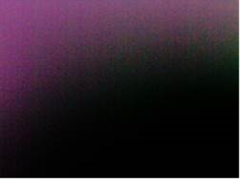
Figure 1：遮黑画面异常范例
1.1.3. OB校正步骤
-
Plugin选单选择SStarCalibrationTool → CalibrationOBC
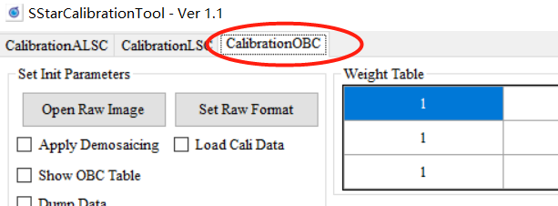
Figure 2：Plugin选单 → SStarCalibrationTool → CalibrationOBC示意图
-
根据抓取的RAW的名字，设定对应的RAW信息
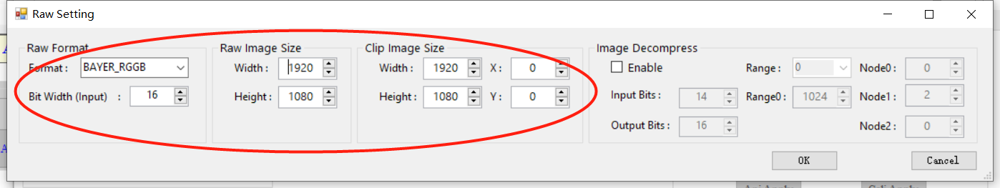
Figure 3：设定RAW setting示意图
-
Open Raw Image（注意文件夹名称不要出现中文），勾选Show OBC Table，点击CalOBGain
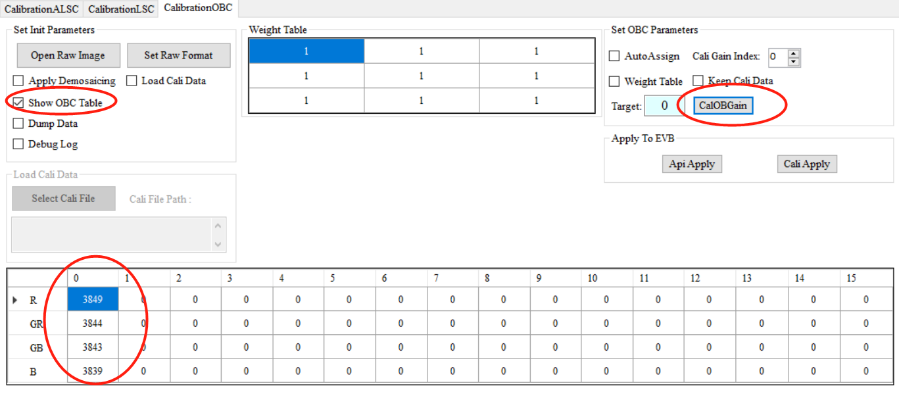
Figure 4：CalOBGain示意图
1.1.4. 校正结果分析
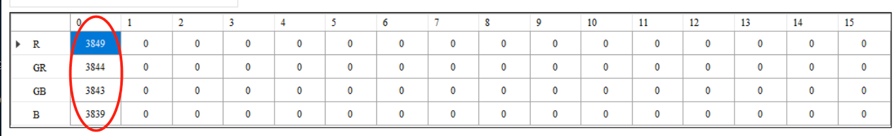
Figure 5：CalibrationOBC结果示意图
第0列即为校正结果，可以将结果填写到OB模块中，如果在各个增益下，校正结果差距在±50，即只需校正一组即可。
1.2. ALSC¶
1.2.1. ALSC基本原理
Shading主要分为两种：Lens Shading 和Color Shading。
Lens Shading：
-
由于镜头的光学特性，sensor边缘区域接收到的光纤强度比中心小，造成中心和四周亮度不均匀的现象（暗角）。
-
镜头主光线角度（chief ray angle，CRA）和sensor不匹配，导致sensor边缘区域接收的曝光不足。
Color Shading：
-
由于镜头再边缘区域的入射角度不足，导致色彩偏差现象（色散），一般表现中心和四周颜色不一致。
-
由于不同光源或者不同色温的频谱不同，加上IR-cut的影响，导致色彩不均匀。
所以，某些shading严重的镜头（包括Lens Shading和Color Shading），需要在做AWB之前进行shading校正。
1.2.2. RAW图像抓取要求
-
使用DNP灯箱，将镜头正对灯箱平面，保证光照均匀，如果没有DNP灯箱，使用毛玻璃盖住镜头，对准标准灯箱光源也可以。
-
设定灯箱亮度，或者调节AE target，书面中心亮度是最高亮度的70%左右（抓取RAW，用imageJ，框选中心部分查看亮度）。
-
抓取RAW数据。
1.2.3. ALSC校正步骤
-
Plugin选单选择SStarCalibrationTool → CalibrationALSC
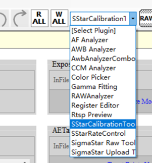
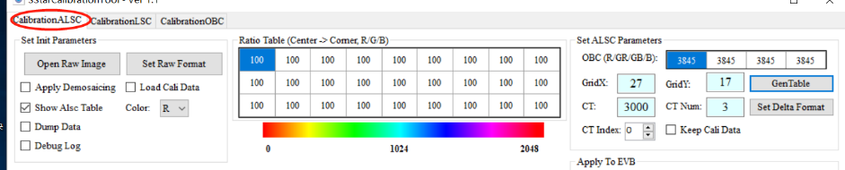
Figure 6：Plugin选单 → SStarCalibrationTool → CalibrationALSC示意图
-
根据抓取的RAW的名字，设定对应的RAW信息

Figure 7：设定RAW setting示意图
-
Open Raw Image（注意文件夹名称不要出现中文），勾选Show ALSC Table
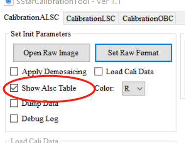
Figure 8：勾选Show ALSC Table示意图
-
设定对应的OBC参数，以及色温参数
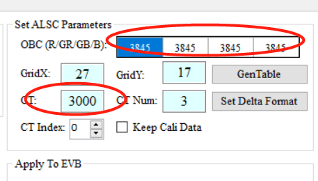
Figure 9：设定OBC参数与色温参数示意图
-
点击GenTable进行校正
1.2.4. 校正结果分析
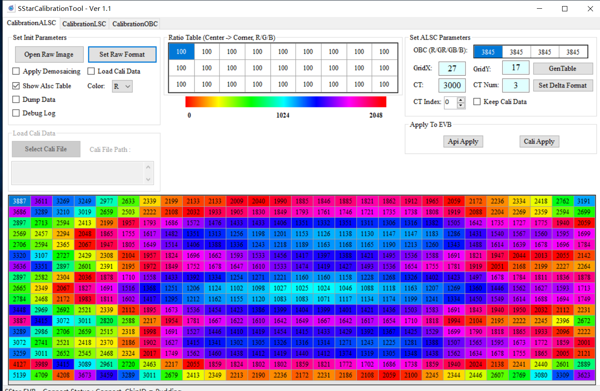
Figure 10：CalibrationALSC结果示意图
图像表示即为校正结果，选择对应的色温CT/CT Num，点击API Apply进行在线套用，再到ALSC模块，点击read page，将校正参数读到tool，进行保存。
1.2.5. 注意事项
Apply后，记得到ALSC页面read page，以免校正参数没有保存到。
1.3. AWB¶
1.3.1. AWB基本原理
AWB校正，即根据sensor在数个标准光源下的白点特征，来计算出真实场景的（R/G、B/G）增益。
1.3.2. AWB校正步骤
-
将镜头对准标准灯箱内的灰墙或灰卡（使其占满整个画面）
-
设定需要校正的色温（D65/D50/TL84/CWF/U30/A具体根据灯箱情况决定使用）
-
确认已校正设定好OBC
-
AE设定为Auto，调整AE target，让画面不要过曝
-
Plugin选单选择AwbAnalyzerCombo
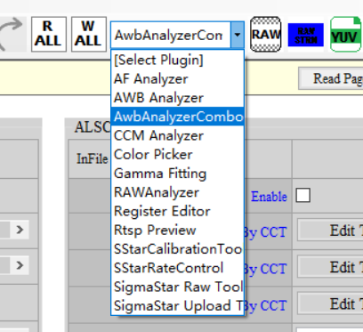
Figure 11：Plugin选单 → AwbAnalyzerCombo示意图
-
选择要校正的色温范围，建议是2300K ~ 10000K
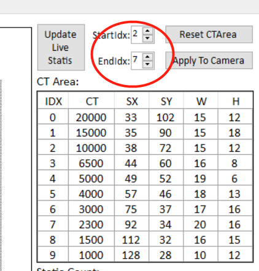
Figure 12：设定色温范围示意图
-
拖动小红标或者小蓝标，使得落点全部落在对应的框中，尽量使得整条曲线比较平滑。
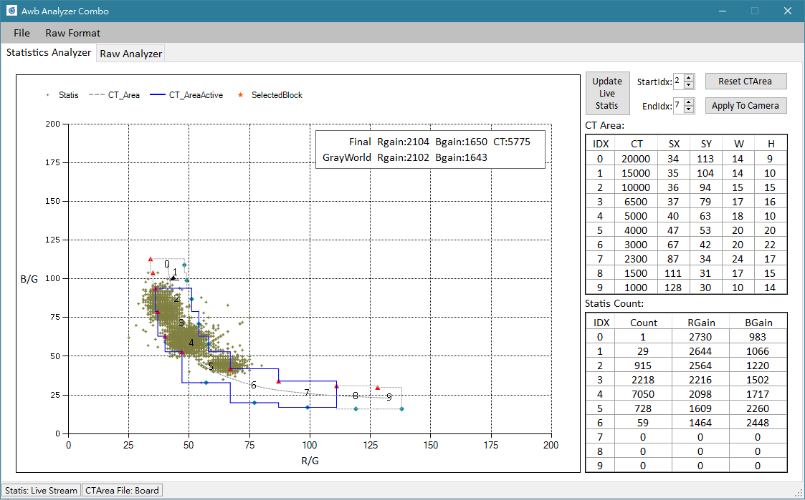
Figure 13：AwbAnalyzerCombo界面
-
调整多个色温，调整完毕点击Apply To Camera，套用到板端查看效果
-
到AWBCTCali模块中read page，再将参数保存
1.3.3. 注意事项
校正完，记得多场景测试AWB效果，依法校验调整框的大小，确保在各个环境下的稳定表现。
1.4. CCM¶
1.4.1. CCM基本原理
CCM校正原理，是根据sensor拍摄各个色温下24色卡的实际颜色信息，再根据目标颜色信息，计算出3X3 CCM矩阵，使得相机输出的颜色表现符合我们的期望。
校正前请务必先决定好gamma，如果要校正成对比机的gamma，请参考Gamma Fitting。
1.4.2. RAW图像抓取要求
-
在标准灯箱中，将镜头对准24色卡，确保色卡位于画面中心，并且占整个画面50% ~ 80%
-
设定灯箱色温，一般为D65/TL84/A
-
调整灯光亮度，或者调整AE target，使得抓取的raw第19格不过曝
-
使用API Tool抓取raw信息
1.4.3. CCM校正步骤
-
Plugin选单选择CCM Analyer
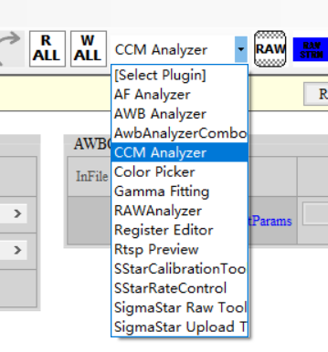
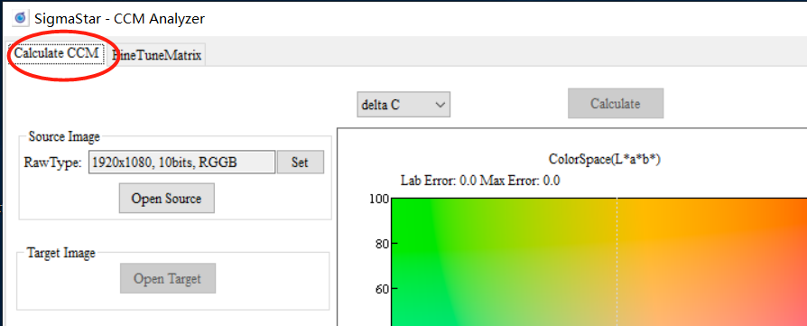
Figure 14：Plugin选单 → CCM Analyer示意图
-
设定对应的Raw信息
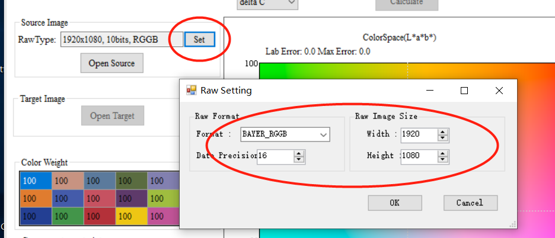
Figure 15：设定RAW setting示意图
-
Open Source 打开对应的RAW图，点击鼠标左键，拖动框选色块
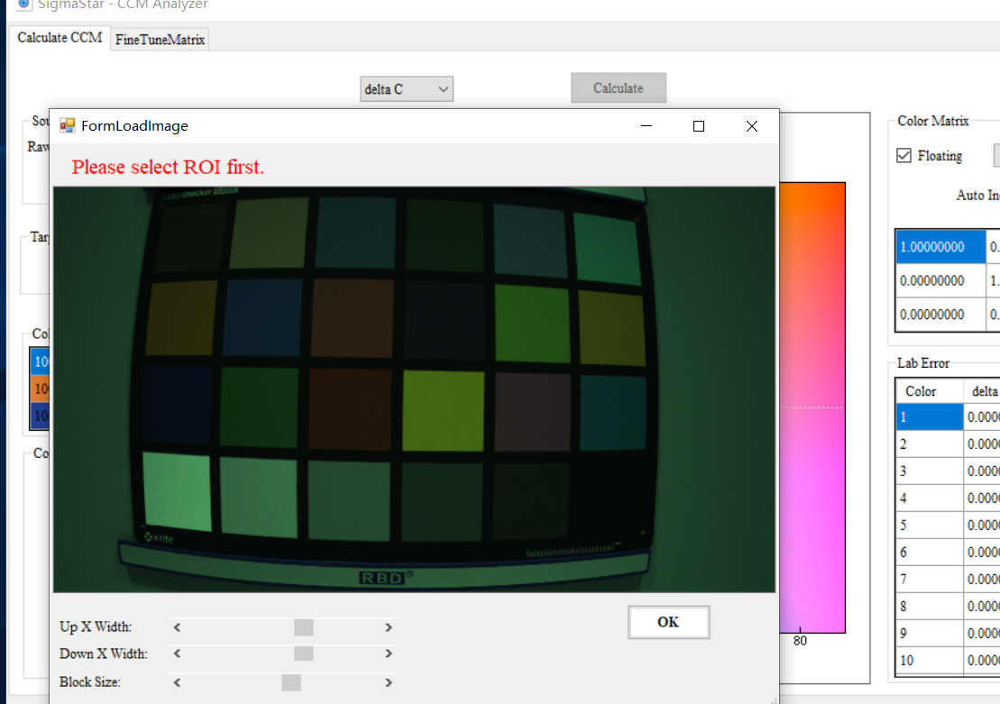
Figure 16：CCM Open Source示意图
-
Open Target 选择目标色卡，在apitool → target_img有提供标准色卡
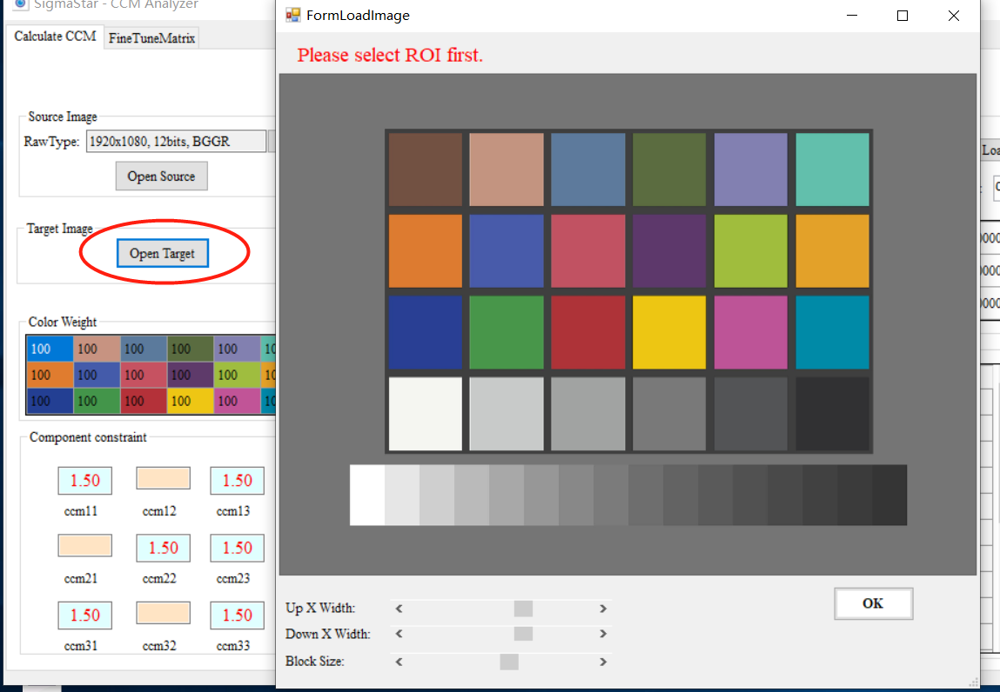
Figure 17：CCM Open Target示意图
-
调整Component constraint
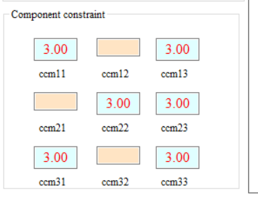
Figure 18：CCM倍率限制示意图
-
点击Calculate，进行校正计算
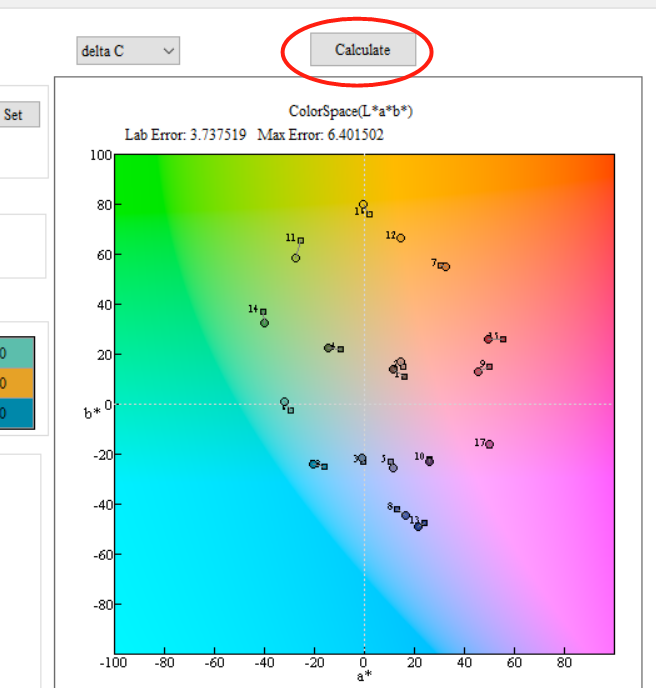
Figure 19：CCM Calculate示意图
-
取消勾选Floating，选择插入的组别，将校正结果套用到机器
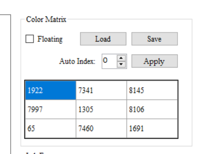
Figure 20：CCM Apply示意图
1.4.4. 校正结果分析
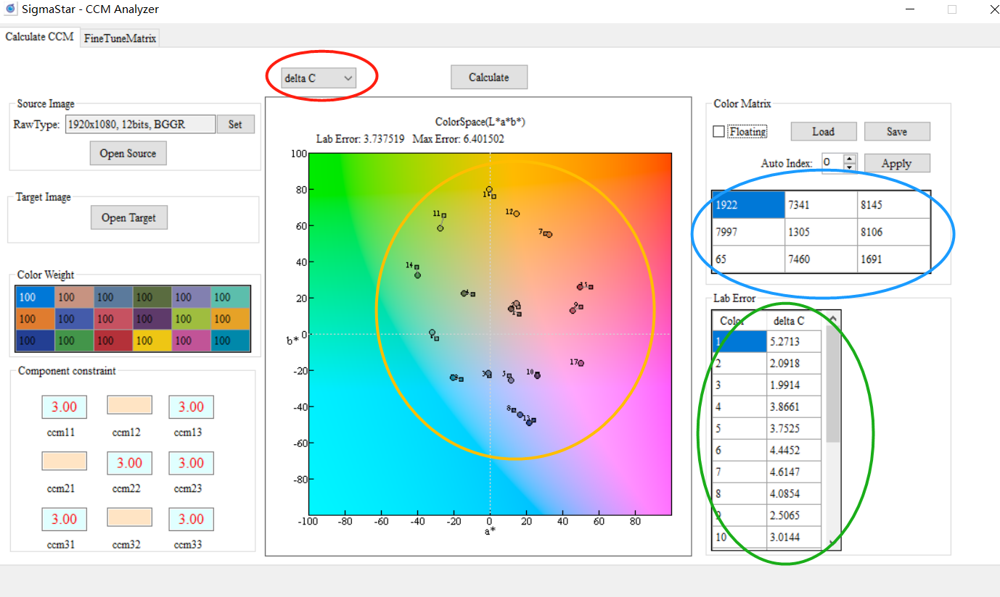
Figure 21：CCM校正结果示意图
黄色框：圆点为标准点，方点为机器落点，可以直观查看哪个颜色误差大小
蓝色框：校正结果的CCM矩阵
绿色框：每个色块的色彩误差值，值越小与标准色卡的差距就越小
1.4.5. 注意事项
在校正结果不是很理想的情况下，可以手动调整CCM矩阵参数，来达到想要的效果，通常由于镜头以及sensor的关系，有些模块单靠CCM很难完全校正准确，这时候可以选择HSV来细微的调整一些颜色表现。
1.5. AE Exposure Table 设定¶
不同的sensor及lens特性及能力皆不同，预设的AE exposure table不见得适合目前的module，因此需要去检查，并将其修改为适合目前module的设定。
1.5.1. 调整界面
点选左方的AE项目，再点选ExpoTblEntry即可出现AE exposure table调整窗口。
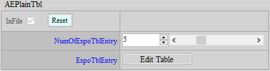
Figure 22：AE设定接口
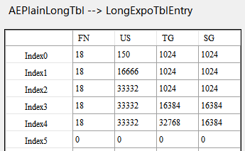
Figure 23：AE Exposure Table
1.5.2. 参数说明
NumOfExpoTblEntry：设定AE exposure table的数量。以Figure 22：AE设定接口 设5为例，AE exposure table就须填入5组设定。
Table第一字段：镜头光圈值（Fn）x10。例如光圈1.6则填入16。
Table第二字段：快门（usec）。
Table第三字段：Total gain（1024 = x1 gain），也就是Sensor gain x ISP gain。
Table第四字段：Sensor gain（1024 = x1 gain）。
1.5.3. 设定项目
-
确认lens光圈值，将光圈值x10填入第一栏。
-
向客人询问maximum gain，填入倒数第一列的第三栏中。
-
若不使用ISP gain，直接将第三栏的值复制到第四栏中。
2. GAMMA FITTING & COLOR CORRECTION¶
不同的gamma和color对noise会有不同的影响，而且调整denoise时先套入gamma和color设定会比较方便观察，因此通常会先做gamma和color的调整，即便它们在pipeline中是在denoise之后。
2.1. Gamma Fitting¶
Color fitting的结果容易受到亮度差异的影响，而亮度差异主要来自AE和gamma，因此在color fitting前务必先做gamma fitting。此步骤主要目的是将调整机台的gamma fit到与对比机的gamma接近。校正前请先确认dynamic range是full range，可以看histogram是否有到最大/最小值。
2.1.1. 校正环境
使用OECF chart，让光线均匀打在chart上，拍摄时让chart摆在画面中间，不要占满整个画面，否则容易受到shading的影响。
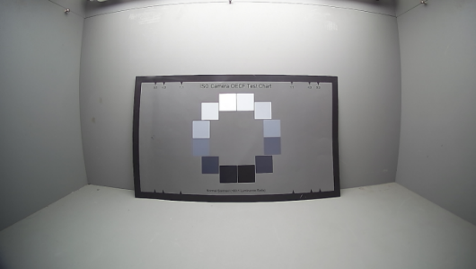
Figure 24：拍摄画面范例
2.1.2. 校正界面
点选API tool上方Select Plugin，选择Gamma Fitting开启校正接口。
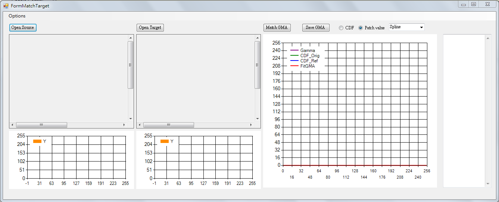
Figure 25：Gamma Fitting界面
2.1.3. 校正步骤
-
将环境假设好，首先拍摄调整机台与对比机台fitting所需的image。由于曝光会影响亮度，因此gamma fitting要在相同曝光的基准上会比较准确。要得到接近的曝光，最简单的方式就是拍摄时（调整机拍raw，对比机拍jpg）让OECF最亮色块尽量接近255但不要刚好255，因为我们不知道对比机gamma长什么样子，但通常gamma最亮点是不会变的，因此拿它来当基准会比拿其它点当基准要好。
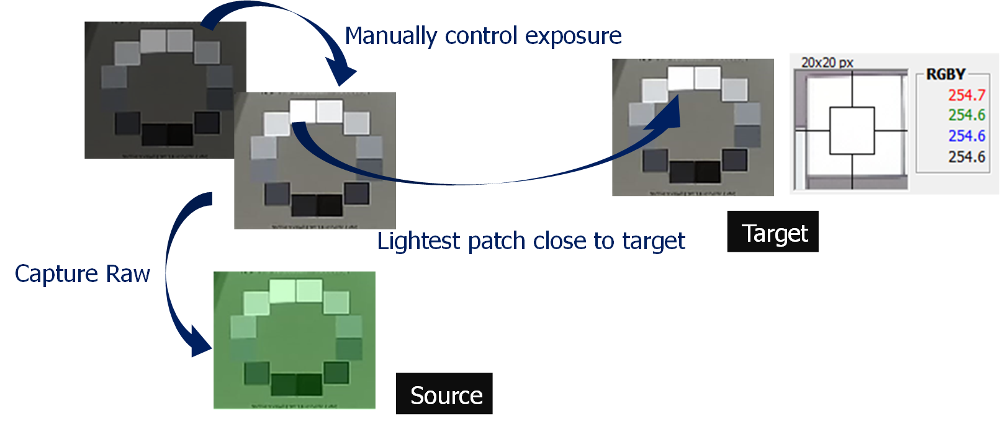
Figure 26：拍摄source及target画像示意图
-
读取source raw data的OECF patch值:
点选界面工具列的Options，填入正确的raw information及OB（WB不需要设定），完成后点选OK。
补充：OB的单位是12bit，最大值只有255，后续会修正为单位是16bit，最大值是65535。
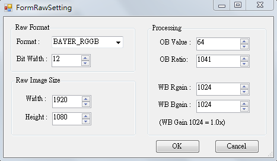
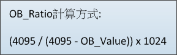
Figure 27：Raw Setting设定接口
滑动鼠标来框选OECF，确认每一个patch都有正确落在patch内即完成。
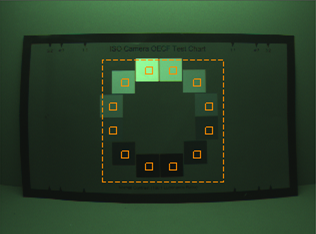
Figure 28：框选OECF patch范例
-
读取target image的OECF patch值:
和上述步骤相同，差别只是target是读取image档，省略了设定raw information的动作。
-
选择fitting的相关设定，取值方式建议使用patch values，fitting的方式建议使用Exponenitial。
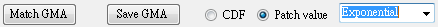
Figure 29：Gamma fitting设定建议
-
选择好后点选Match GMA执行gamma fitting，观察fitting出来的curve是否有异常，没有的话点选Save GMA储存gamma curve。最后检查储存出来的gamma curve临界点是否为0和1023，如不是，请手动作修改。
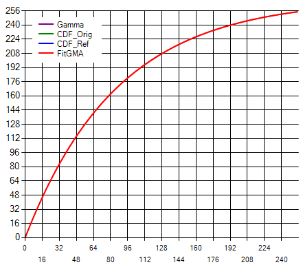
Figure 30：理想gamma curve要smooth且递增
2.2. Color Correction¶
此步骤主要目的是使调整机与对比机的颜色接近，调整主要包含两个部分：第一个也是最主要的部份是color matrix的fitting；另一个为HSV微调的部分，可依需求做局部颜色饱和度与色相的调整。Color matrix与HSV最多可支持16组色温的设定，填参数时务必按照规则，Index0到Index15代表色温由低到高。
2.2.1. CCM调整
当使用tool将各色温灯源校正完成，需要手动将校正结果填入CCM对应的项目中。
-
调整界面
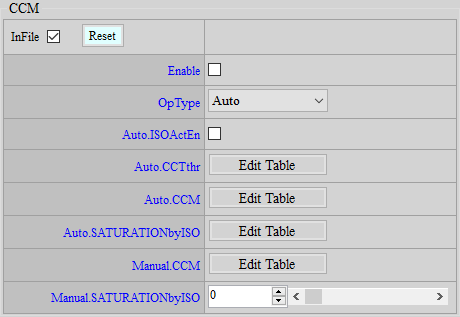
Figure 31：CCM调整界面
-
参数说明
ISOActEn： 在night mode是否自动将CCM设为unit matrix的开关，若有勾选，当遇到IQMode为Night时会将CCM自动切换为unit matrix。
CCTthr： 色温节点设定，需填入校正CCM时对应的色温值，CCM与HSV要套用哪组设定都会根据此CCTthr来决定，注意index小到大需要按照色温低到高的顺序填入，最多支持16组设定，没用到请设0。
CCM： 各色温color matrix设定，需根据色温填入对应的color matrix，注意index小到大填入时需要按照色温低到高的顺序填入。 新增每个Row的总合，SUM0/SUM 1/SUM 2分别代表第½/3列的总合，read就会自动更新，如果不是1024代表有问题，请手动修改CCM。
SATURATIONbyISO： Color matrix饱和度调整，程序会根据此设定将使用者定义的matrix与unit matrix做内插，值域0 ~ 100，设0表示使用unit matrix，设100表示使用使用者自定义CCM。此参数是根据gain值做切换。
2.2.2. HSV调整
当CCM套入后仍有颜色希望微调，则可使用HSV来达成。HSV API在Maruko改为采用HSY色彩空间，会将整个色域切成36分区，其中肤色切分的较细方便使用者对肤色进行细部调整。使用者可依需求调整不同色相及饱和度及亮度对于其他分量作细调。HSV使用auto mode时，请务必确认Index是依据什么来切换，带有_ByIso后缀词的参数是依据gain来切换，而无后缀词是依据色温（这边的色温节点和CCM相同，由CCM来控制）来切换。
Hue的36区块切分方式如下
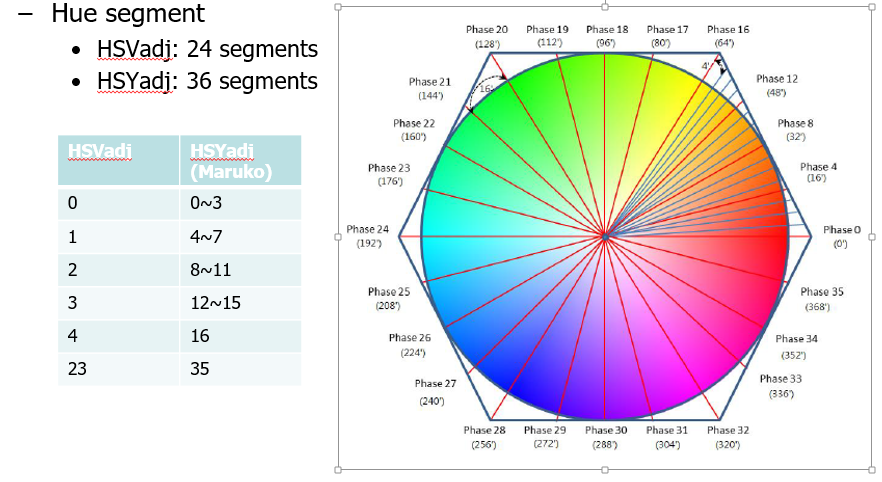
Figure 32：HSV Hue切分方式
-
调整界面
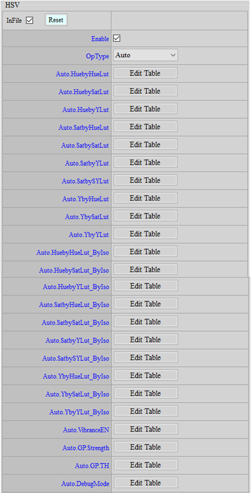
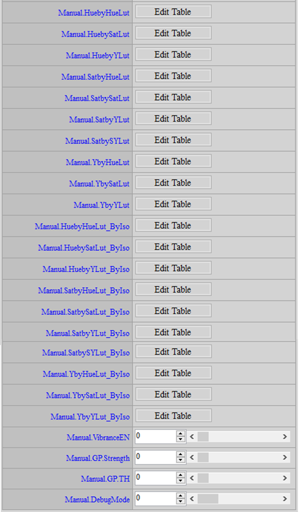
Figure 33：HSV调整界面
-
参数说明
HueByHueLut： 可依需求局部调整色相，将360度色相分为36份，分别控制每个色相旋转角度。值域范围：-127 ~ 127。（0为不调整），参数切换是根据色温。
HueBySatLut： 可依需求局部调整色相，将饱和度等分为9份，分别控制每个等分饱和度的色相旋转角度，由左至右为饱和度由小到大。值域范围：0 ~ 255。（128 = 1x），参数切换是根据色温。
HueByYLut： 可依需求局部调整色相，将亮度等分为9份，分别控制每个等分亮度的色相旋转角度，由左至右为由暗到亮。值域范围：0 ~ 255。（128 = 1x），参数切换是根据色温。
SatByHueLut： 可依需求局部调整饱和度，将360度色相分为36份，分别控制每个色相的饱和度。值域范围：0 ~ 255。（128 = 1x），参数切换是根据色温。
SatBySatLut： 可依需求局部调整饱和度，分别控制每个等分饱和度的饱和度增减，由左至右为饱和度由小到大。值域范围：-511 ~ 511（0为不调整），参数切换是根据色温。
SatByYLut： 可依需求局部调整饱和度，将亮度等分为9份，由左至右为由暗到亮，分别控制每个等分亮度的饱和度增减。值域范围：0 ~ 255（128 = 1x），参数切换是根据色温。
SatBySYLut： 可依需求局部调整饱和度，将亮度与饱和度的乘积（S*Y）等分为9份，由左至右为亮度与饱和度的乘积（S*Y）由小到大，分别控制每个等分乘积的饱和度增减。值域范围：-511 ~ 511（0为不调整），参数切换是根据色温。
YByHueLut： 可依需求局部调亮度，将360度色相分为36份，分别控制每个色相的亮度。值域范围：值域范围：-511 ~ 511（0为不调整），参数切换是根据色温。
YBySatLut： 可依需求局部调亮度，将饱和度等分为9份，分别控制每个等分饱和度的亮度增减，由左至右为饱和度由小到大。值域范围：0 ~ 255（128 = 1x），参数切换是根据色温。
YByYLut： 可依需求局部调亮度，将亮度等分为9份，分别控制每个等分亮度的亮度增减，由左至右为由暗到亮。值域范围：0 ~ 255（128 = 1x），参数切换是根据色温。
VibranceEn： 自然饱和度功能开关。开启后此模块内与饱和度相关的控制皆会失效。取而代之的是韧体内部内定的饱和度相关调整曲线，可再增加饱和度的同时保持肤色饱和度少量改变。
GrayProtectStrength： 灰色物颜色保护强度。值域范围：0 ~ 63。接近灰色物体可利用此参数来确保色相，饱和度，以及亮度不被调整。
GrayProtectTh： 定义灰色物体的阈值。值域范围：0 ~ 1023。数值越大越容易被定义为灰色物，可利用此参数来确保色相，饱和度，以及亮度不被调整。
DebugMode： 除错模式。值域范围：0 ~ 4可分别显示画面中特定的1.色相，2.饱和度，3.亮度，以及4.亮度与饱和度的乘积。
注意事项：H与Y的调整都是基于Hue的调整量，再针对ByS以及ByY做调整。换句话说，若HbyH的调整量为0，那么HbyS以及HbyY则失效。若YbyH的调整量为0，那么YbyS以及YbyY则失效。
-
调整步骤
在做完CCM后，若对于画面中的色相（H），饱和度（S），亮度（Y）作微调。
-
若要微调**色相（H）：** 可根据特定的色相（HueByHueLut），特定的饱和度（HueBySatLut）以及特定的亮度（HueByYLut）进行微调，若不知想调整的区块坐落于哪個index则可使用DebugMode来进行查找。
-
若要微调**饱和度（S）：** 可根据特定的色相（SatByHueLut），特定的饱和度（SatBySatLut），特定的亮度（SatByYLut）进行微调，以及特定的饱和度与亮度乘积（SatBySYLut），若不知想调整的区块坐落于哪個index则可使用DebugMode来进行查找。
-
若要微调**亮度（Y）：** 可根据特定的色相（YByHueLut），特定的饱和度（YBySatLut），以及特定的亮度(YByYLut)进行微调，若不知想调整的区块坐落于哪個index则可使用DebugMode来进行查找。
Debug mode使用方式，建议先将HSV设置为Manual Mode
想查找特定区域的HUE，可将Debug mode设置为1，接着使用Manual.HueByHueLut_ByIso设置为下表
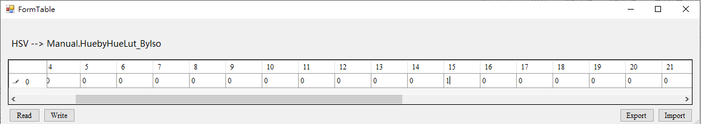
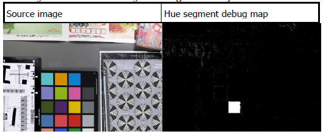
Figure 34：HUE Debug Map
想查找特定区域的SAT，可将Debug mode设置为2，接着使用Manual.HueBySatLut_ByIso设置为下表
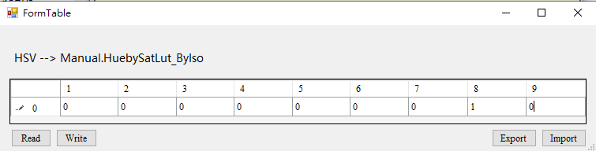
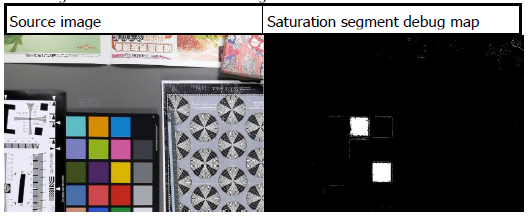
Figure 35：HSY Saturation Debug Map
想查找特定区域的Y，可将Debug mode设置为3，接着使用Manual.HueByYLut_ByIso设置为下表
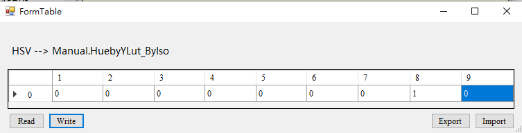
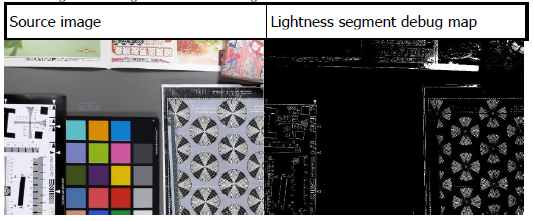
Figure 36：HSY Y Debug Map
想查找特定区域的S与Y乘积，可将Debug mode设置为4，接着使用Manual.SatBySYLut_ByIso设置为下表
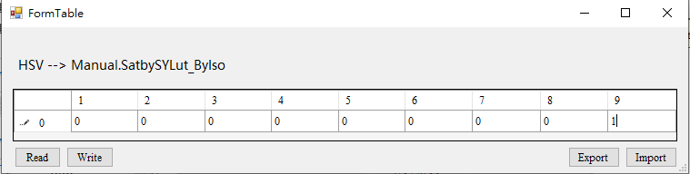
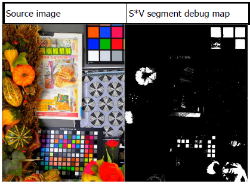
Figure 37：HSY SY Debug Map
饱和度与亮度乘积（SatBySYLut）功能通常用于高亮度高饱和区域，可将该区域的饱和度降低，来达到还原高饱和区域的细节，效果图如下
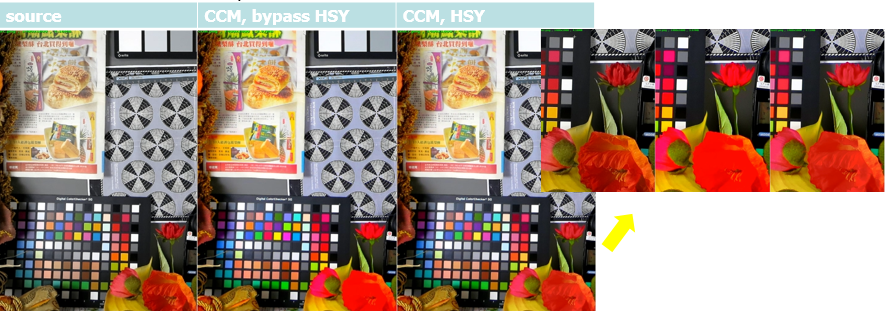
Figure 38：基于SY 减少饱和度
灰色区域保护功能，通常会希望能拉高饱和度且保持灰度区域不被增加饱和，此时可以使用GrayProtectTh参数来定义灰，若MAX(R,G,B) – MIN(R,G,B)小于定义的TH则会启动该功能，配合上GrayProtectStrength，若设置为63则可保证该区块经过HSY模块后HSY的值都不被调整。
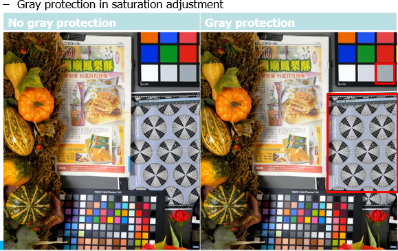
Figure 39：灰色区域保持色相，饱和度，亮度不改变
若想调整整体饱和度但又不想将肤色拉太饱和，则可以使用VibranceEn开关，此开关开启后，原先调整饱和度的参数将失效，取而代之的是韧体内部预设的设置。以下为自然饱和度开启的结果。
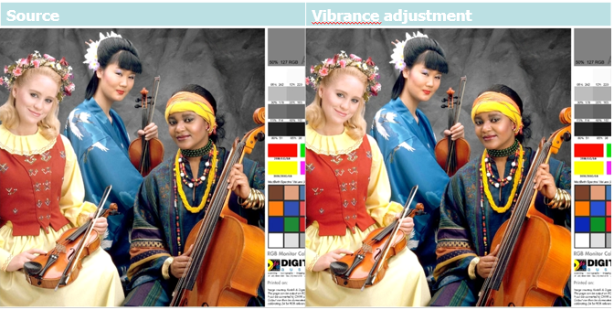
Figure 40：开启自然饱和度
-
2.3. DataRange调整¶
根据视讯输出格式来调整对应的RGB to YUV转换矩阵。
2.3.1. 调整界面
于左侧选单点选Colortrans，接着在右侧主画面可找到Colortrans以及ColortransEX界面。
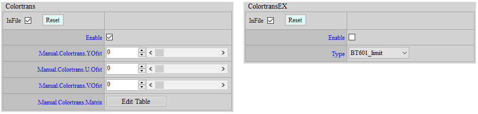
Figure 41：Colortrans以及ColortransEX
2.3.2. 参数说明
-
Colortrans
Enable： 开启自定义色彩转换矩阵功能。
Colortrans.Y.Ofst： 调整Y偏差值。10-bit domain，值域范围：0 ~ 2047，负数以2的补码表示，等同于±1023。
Colortrans.U.Ofst： 调整U偏差值。10-bit domain，值域范围：0 ~ 2047，负数以2的补码表示，等同于±1023。
Colortrans.V.Ofst： 调整V偏差值。10-bit domain，值域范围：0 ~ 2047，负数以2的补码表示，等同于±1023。
Colortrans.Matrix： 调整RGB-YUV矩阵，值域范围：0 ~ 1023，1倍为256，负数以2的补码表示，等同于±1.996。
对于YUV_OFST，Matrix[9]，负数以2的补码表示。UV偏差值，在矩阵相乘后，已经预设加上128。下面例子为，将YUV转为16 ~ 235的值域范围：
Y=(0.257*R)+(0.504*G)+(0.098*B)+16 Cb=-(0.148*R)-(0.291*G)+(0.439*B)+128 Cr=(0.439*R)-(0.368*G)-(0.071*B)+128 Matrix[9] = {66, 129, 25, 986, 950, 112, 112, 930, 1006} Y_OFST = 64 U_OFST = 0 （预设已加上128*4，所以填0） V_OFST = 0 （预设已加上128*4，所以填0） -
ColortransEX
Enable： 开启变更色彩转换矩阵功能，若ColortransEX Enable开启，Colortrans参数则失效。
Type： 共六种转换矩阵可以选择，分别为BT601 limit、BT601 full、BT709 limit、BT709 full、BT2020 limit以及BT2020 full。
2.4. Saturation调整¶
根据亮度（Y）及饱和度（UV）做UV的调整，分为adjust uv by y及adjust uv by uv，主要是留一些颜色调整弹性在YUV domain上，且因为亮度与饱和度的独立性，可保持亮度恒定，又达到局部调整饱和度的效果。在传感器用到高曝光值的时候，也可适度降低暗处色躁。亦或根据使用者喜好调高或降低饱和度，使画面看起来更鲜艳或较柔和。
2.4.1. 调整界面
于左侧选单点选Saturation，接着在右侧主画面可找到Saturation界面。
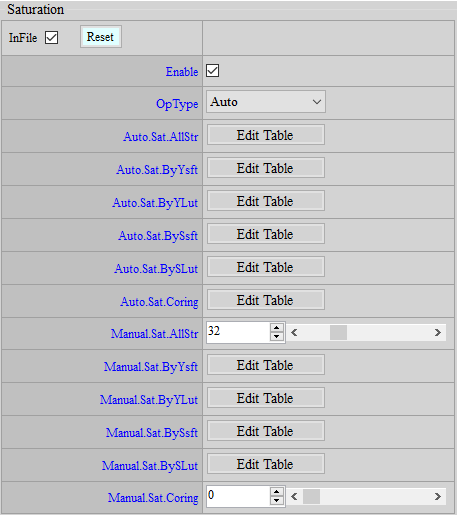
Figure 42：Saturation调整界面
2.4.2. 参数说明
Sat.AllStr： 整体饱和度的可变强度数值，值域范围：0 ~ 127（32 = 1x）。
Sat.ByYsft、Sat.BySsft： 根据Y/UV调整UV的X轴间距可以透过此调整，但有特殊限制：
节点为2的幂次方并向上相加，例：Sat.ByYsft[5] = {3, 3, 5, 7, 7}
第一点为0，第二点为0+23，第三点为0+23+23，第四点为0+23+23+25，以此类推；
则X轴间距点为：{0, 8, 16, 48, 176, 255}，最后一点超过卡到255。
特殊限制为：X轴前四点总和小于255，最后一点一定要大于等于256。
例：Sat.ByYsft[5] = {8, 0, 0, 0, 0}，第一点为0，第二点为0+2^8=256，则违反规则。
Sat.ByYLut、Sat.BySYLut： 节点的数值可以自由决定
Sat.Coring： UV做同减的动作，建议使用Sat.BySYLut即可。
特殊应用：HDR效果开启后，高亮度会过于饱和，以此可以透过Sat.ByYLut/Sat.BySLut将高亮度/高饱和度的UV向下压，让影像在HDR效果下更显自然。
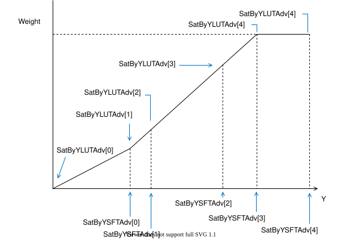
Figure 43：Sat.ByYsft[5] & Sat.ByYLut[6]
Figure 44：Sat.BySsft[5] & Sat.BySLut[6]
3. DENOISE & EDGE ENHANCEMENNT¶
虽然板子连上API tool时会将iqfile中默认参数读回界面，但各IP开关与否并不会显示在接口上，若要完全从头开始调整一颗新sensor的画质，建议先去Enable Control界面bypass除了sharpness和之前调整完毕项目（OB、ALSC、Gamma、Color）以外的功能，了解一下这颗sensor尚未做任何denoise前的状况（若画面过于扰动，可以上一点3DNR），例如解像力极限、是否有crosstalk或false color等等，之后再依需求开启对应的功能来调整，避免多余的功能影响画质表现。理论上sharpness也要bypass，但为了方便观察现象，建议还是开着，先用默认值让画面不要太离谱即可（高倍gain可把OverShootGain和UnderShootGain设小一些）。
当调整高倍gain时，没有denoise又开sharpness画面会很脏，脏到无法辨识调整参数的效果，建议可在调NR3D前将Y.TF.STR开强，让画面定住，方便调整NR3D前的一些function。 调整建议照ISO index顺序调整，此外，为避免参数内插影响判断，建议将AE设为Manual的SV mode，直接给定各节点的gain值来做调整，完整调好一个再跳下一个增益。调整画质前请将镜头擦干净且确实对到焦，RGB sensor要确认IR cut有盖上。
此外，在高倍增益的情况下噪声较大，过完WB Gain之后，R和B Channel的噪声会再被放大，导致画面暗处偏紫。在该情况下，可考虑多扣R和B Channel的OBC方式来做校正，也可以将暗处2DNR强度增强（DPC，NRDeSpike）来压低躁声，减少躁声被放大。
3.1. Crosstalk & False Color调整¶
调整denoise前先检查是否有fixed pattern、cross talk或false color等现象，有的话先调整，一来是因为这些功能本来就在denoise之前，二来是特殊现象就要用专门的功能才能有效处理，硬用denoise去消除这些现象容易造成画质损失。
3.1.1. Crosstalk（Green Equal）
这主要是lens与sensor搭配性的问题，当光线进入sensor上micro lens的角度太大，容易误接收到应该被邻近pixel接收的讯号，导致Gr、Gb差异变大，因此这现象较容易发生在画面角落，或是光线从某个特殊角度进入时。
-
现象
画面出现迷宫纹
Figure 45：Crosstalk造成的迷宫纹现象
-
调整界面
于左侧选单点选BayerCompensation，接着在右侧主画面可找到Crosstalk界面
Figure 46：Crosstalk调整界面
-
参数说明
Strength： crosstalk强度值，值域0 ~ 31，越大效果越强。
StrengthByY： 根据亮度调整crosstalk强度值，横轴越右边代表越亮，值域0 ~ 127，越大效果越强。值为64代表不做调整。
Threshold： crosstalk threshold ratio值，值域0 ~ 255，越大作用范围越大。
Offset： crosstalk threshold offset值，值域0 ~ 4095，越大作用范围越大。
-
调整步骤
-
将Offset设为0，Threshold设为128，Strength由0往上升，观察欲消除crosstalk的区域及欲保留的细节区，调整至crosstalk与细节保留都可接受即停止。
-
如需微调则再利用Threshold来做微调。
-
若暗处还是有很明显的crosstalk，再来拉大Offset。
-
3.1.2. False Color
由于demosaic时未考虑方向或方向判断错误导致错误的颜色产生，容易发生在画面高频区域或edge边缘。
-
现象
画面高频处或edge边缘出现伪色。
Figure 47：False Color现象
-
调整界面
于左侧选单点选BayerCompensation，接着在右侧主画面可找到AntiFalseColor界面。
Figure 48：False Color调整界面
-
参数说明
DbgEn: Debug模式，值域范围：0 ~ 1，影像越亮则去伪彩强度越强。此debug模式和Demosiac的debug模式会有冲突，以最后呼叫的API为主。
ColorSpaceSel: 去伪彩模式，值域范围：0 ~ 1，0代表在RGB domain做灰，对齐G通道的值，1代表在yuv domain做灰，不会影响到亮度。
Preserve: 边缘保护强度，值域范围：0 ~ 7，值越大则边缘区域越不容易被判断成moire区域，去伪彩强度越弱。
Strength: 整体强度，值域范围：0 ~ 31，值越大则moire区域愈容易被降饱和度，去伪彩强度越强。
-
调整步骤
-
将Strength设最大值，使用debug模式去观察moire区域是否符合预期，再调整Preserve，最后再调降Strength。
-
切换ColorSpaceSel，观察不同做法的效果如何。
补充：
-
开启FalseColor对较细的紫边稍微有帮助，若FalseColor开到最强紫边仍严重，可以再利用HSV针对紫色色相降低饱和度，但调整时需注意正常紫色物品的饱和度是否过低。
-
False Color的调整与Crosstalk存在高度相依（过强的Crosstalk会导致伪彩严重，进而导致后级的False Color无法将伪彩去干净），建议先完成Crosstalk的调整后再进行anti-false color的调整。
-
由于BayerCompensation界面的write page会先呼叫False Color，再呼叫Demosaic，所以debug模式会以Demosaic为主，如果需要看False Color的debug模式，再呼叫一次False Color即可。
-
3.1.3. PFC（Purple Fringing Compensation）
-
现象
主要是由色散现象造成，通常会在亮暗交界处出现紫色边缘。
Figure 49：Purple fringing现象
-
调整界面
于左侧选单点选PFC，接着在右侧主画面可找到PFC界面。
Figure 50：PFC调整界面
Figure 51：PFC_EX调整界面
-
参数说明
Strength： 去紫边的强度控制，值域0 ~ 255，值越大越强。
UStrength： 去紫边作用在U channel的强度。值域0 ~ 63，值越大越强。
VStrength： 去紫边作用在V channel的强度。值域0 ~ 63，值越大越强。
StrengthByY： 紫边通常出现在较暗的地方，且周围是高亮区域，所以可针对不同亮度，给予不同去紫边的强度，横轴越右边代表亮度越大。值域0 ~ 255，值越大越强。
FlatProtect： 平坦区的判断，避免大面积的紫色被判断为紫边，而做的保护。值域0 ~ 127，值越大越多地方不做PFC。
SatByY： 高对比度区的判断，紫边通常出现在对比较高的区域，所以使用SatByY[0]来判断对比的程度。值域0 ~ 25，值越大，代表侦测到的对比度需超过SatByY[0]才为高对比度。SatByY[1]用来判断亮度饱和区的程度。值域0 ~ 25，值越大，代表越亮的地方越不做PFC。
StrengthByContrast： 针对对比的程度，给予不同强度的PFC，横轴越右边代表对比越强。值域0 ~ 63，值越大PFC越强。
DbgEn： 显示PFC的作用范围。值域0 ~ 1，1代表开启。
SatMaskSel： 对比区判断的Mask大小选择。值域0 ~ 1，Mask 0范围较小，Mask 1范围较大。
SatAmpEn： 高对比度区权重增加开关。值域0 ~ 1，1代表开启。此功能可将增加判断对比度时的精确度。
StrengthByHue： 根据不同的Hue，给予不同强度的PFC处理。
-
调整步骤
-
先决定SatAmpEn，建议先使用默认值。如有改变SatAmpEn，则对比相关的部分都需要重新调整。
-
依据镜头表现，观察紫边的宽度，选择SatMaskSel的大小，若紫边较宽，可先选用较大的mask做补偿。
-
观察紫边所处的亮度区域、对比程度、紫边的颜色分布，来调整StrengthByY、SatByY、StrengthByContrast，以及StrengthByHue。
-
StrengthByY：观察紫边产生于哪个亮度下，给予较强的设定，通常较暗的地方，强度较强。
-
SatByY、StrengthByContrast：观察紫边发生于哪种对比下，给予较强的设定，通常对比越高，强度越强。SatByY用来控制下图横轴的落点，StrengthByContrast用来控制下图纵轴。在低照下，对比度判断可能因为躁点而有点误差，可适当放宽SatByY[0]，避免躁点被判断为高对比度区。
Figure 52：Contrast、Strength参数示意图
-
-
控制FlatProtect，来确保部分平坦区不会做到PFC的效果。
-
调整最终PFC强度，如有特别颜色需求，可分开调整Ustrength、Vstrength的强度。
-
3.1.4. DEMOSAIC
-
现象
增加画面分辨率的同时减少方向误判与artifacts的产生。
Figure 53：物体边缘出现的artifacts现象
Figure 54：高频区方向判断错误
-
调整界面
于左侧选单点选BayerCompensation，接着在右侧主画面可找到DeMosaic界面。
Figure 55：DeMosaic调整界面
-
参数说明
DbgMode: Debug模式，值域范围：0 ~ 2，1代表方向判断影像，红/蓝/绿/白/黑色区域分别对应到垂直/水平/细节非加强/细节加强/无向性区域，2代表non-smooth影像，只有开启SmoEn才会有效果，影像越亮代表越不会被抹平，影像越黑代表越会被抹平。此debug模式和FalseColor的debug模式会有冲突，以最后呼叫的API为主。
Figure 56：Demosaic方向判断流程
IsoTh: 无向性区域判断阀值，值域范围：0 ~ 127，值越大则越多区域被判断成无向性区域，可能导致细节模糊和拉链状artifacts。
GradientTh: 方向性区域判断阀值，值域范围：0 ~ 63，值越大则越少区域被判断成方向性区域，可能导致细节模糊和拉链状artifacts，值太小则会使细节区变少。
SmoEn: 抹平功能开关，值域范围：0 ~ 1。
SmoRange: 抹平范围，值域范围：0 ~ 7，值越大则越多区域被抹平。
SmoStrength: 抹平强度，值域范围：0 ~ 255，值越大则抹平的强度越强。
DtlEn: 细节加强开关，值域范围：0 ~ 1，只会作用在细节加强区。
DtlBypassColorCheck: 细节区忽略颜色判断开关，值域范围：0 ~ 1，细节区会再被分为细节非加强区和细节加强区，0代表不忽略颜色判断，只有G通道值大于一定值时，才会被判断成细节加强区，条件为G通道值大于R和B通道值乘以DtlColorRatio再加上DtlColorOft，1代表忽略颜色判断，所有细节区都被判断成细节加强区。
DtlColorRatio: 细节区颜色判断比例，值域范围：0 ~ 255，值越大则越不容易被判断成细节加强区。
DtlColorOft: 细节区颜色判断偏移量，值域范围：0 ~ 63，值越大则越不容易被判断成细节加强区。
DtlHScale: 细节加强区加强高频区域的程度，值域范围：0 ~ 15，值越大则高频区域被加强越多。
DtlMScale: 细节加强区加强中频区域的程度，值域范围：0 ~ 15，值越大则中频区域被越加强多。
-
调整步骤
-
关闭抹平和细节加强功能（SmoEn和DtlEn都设0）。
-
将DbgMode设1，观察方向判断是否符合预期，再微调IsoTh和GradientTh来区分无方向/有方向/细节区。
-
将DbgMode设1，观察細節非加强和細節加强区是否符合预期，再微调DtlBypassColorCheck和DtlColorRatio和DtlColorOft。
-
将DbgMode设0，调整DtlHScale和DtlMScale来加强细节。
-
如有需求，再尝试开启抹平功能，抹平一些因为Demosaic造成差值错误的区域，可以同时将DbgMode设2，观察抹平区域和强度是否符合预期。
补充：
-
建议先使用默认值即可。若有调整需求，建议调整幅度不要太大，除非很确定适用于各种场景。
-
请不要将抹平功能当成NR，也不要将细节加强功能当成sharpness，除非其他模块都调不动，再来微调此模块。
-
3.2. DynamicDP & NRDespike调整¶
如同前一节所说，peak noise基本上也算是一种特殊的noise，因此需要利用专门的功能去做消除或减弱的动作。建议在处理一般noise前先处理peak noise，这样可避免硬用其他denoise功能去处理peak noise而造成画质损失。有DynamicDP和NRSpikeNR两种功能可选择，可同时使用。
3.2.1. DynamicDP（Dynamic Defective Pixel Correction）
DPC处理peak noise的方式是将该点取代掉，因此效果较为明显。受限于sensor的制造工艺，对于几百万像素的sensor，不可能做到所有的像素都是完好的，尤其是对于低成本的sensor来说，坏点数为100或者1000ppm（parts per million，百万分之一）是正常的。
若sensor中存在坏点，经过图像的插值（如demosaic）和滤波过程，坏点的尺寸会变大（坏点扩散），而且由于色彩校正和串扰补偿，坏点处颜色的强度和饱和度也会明显提高，因此需要在插值等过程之前对坏点进行校正。
-
调整界面
于左侧选单点选BayerCompensation，接着在右侧主画面可找到DynamicDP界面。
Figure 57：DynamicDP调整界面
-
参数说明
HotPixEn： 去除亮坏点开关。
HotPixCompSlope： 判断是否为亮peak点的阀值，值域0 ~ 255，越大越不容易判断为亮peak点，越小越容易。
DarkPixEn： 去除暗坏点开关。
DarkPixCompSlope： 判断是否为暗peak点的阀值，值域0 ~ 255，越大越不容易判断为暗peak点，越小越容易。
DPCTH： 本身与周围同通道的threshold，值域0 ~ 255，越大越不容易，越小越容易。
BlendEn： blending开关。
DiffLut： 依据DPC的结果和原始值的差异程度来做blending，值域0 ~ 1024，越大越容易取代。
YLut： 依据亮度程度来做blending，值域0 ~ 1024，越大越容易取代。
-
调整步骤
-
先判断要开启HotPix或DarkPix。
-
DPCTH是判断与同通道的差异，与PixCompSlope需同时成立才会进行坏点补偿
-
慢慢增加PixCompSlope至peak noise与细节保留都可接受时停止，完成调整。
-
开启BlendEn，再依照想混合的程度调整DiffLut和YLut，以挽救细节。
-
3.2.2. DynamicDP Cluster
DynamicDP会依照该点与周围点差异来判断是否为defect，DynamicDP cluster会考虑周围的点也刚好是defect的情况，先将周围的最亮（暗）点排除一些，然后再进入DynamicDP模块去处理。
-
调整界面
于左侧选单点选BayerCompensation，接着在右侧主画面可找到DynamicDP_Cluster界面。
Figure 58：DynamicDP_Cluster调整界面
-
参数说明
EdgeMode： Edge mode开关，对周围点换掉0 ~ 1点最亮点或最暗点。
NeiDeltaTh： 周围8点与此8点平均值的差异阀值，会累计差异大于此阀值的各数（count）。
NeiSmooth： 累计阀值，count小于此阀值会将最亮（暗）点做取代。
SortEn： Sort mode总开关，将周围点做排序，希望取出最亮（暗）点符合以下条件，最亮（暗）点与次亮（暗）点的差异够大，且次亮（暗）点与第三亮（暗）点的差异够小，代表意思为周围只有一个点很亮（暗），其他点都很相似，所以替换掉该点。最多补偿个数为，周围点换掉0 ~ 2点最亮点和0 ~ 1点最暗点。
SortRGGBEn： Sort mode各自channel开关，可以指定特定channel做或是不做坏点替换。
Sort1x3ModeEn： 1x3 mode开关。若与中心相邻两点为最亮点和次亮点，且次亮点和第三亮点差异大于SortLumaTblL，会将最亮两点用第三亮点取代。
SortLumaTblL： 最亮点和次亮点阀值，可根据亮度调整，大于此值则取代。值设越大，最亮点需超过次亮点越多，才可能把最亮点替换掉，代表判断条件越严格。
SortLumaTblD： 最暗点和次暗点阀值，可根据亮度调整，大于此值则取代。值设越大，最暗点需超过次暗点越多，才可能把最暗点替换掉，代表判断条件越严格。
SortLumaTblS： 次亮（暗）点和第三亮（暗）点阀值，可根据亮度调整，小于此值则取代。值设越小，次亮点与第三亮点需越相似，才可能把最亮（暗）点替换掉，代表判断条件越严格。
-
调整步骤
-
若原有DynamicDP补不掉的defect，可以尝试开启EdgeMode或SortEn，开得越多，越容易补defect，但也更容易破坏细节。
-
建议Cluster可以开较宽松，即将抓出多数defect，再依照defect程度做blending。
3.2.3. NRDeSpike
NRDeSpike处理peak noise的方式是将该点与邻近点的mean/median拉近，因此只能降弱，无法完全消除。
-
调整界面
于左侧选单点选BayerDenoise，接着在右侧主画面可找到NRDeSpike界面。
Figure 59：NRDeSpike调整界面
-
参数说明
NRDeSpike同时用三种方式判断depeak的强度，取最弱的来当最终的强度。
-
CenterNeighbor
Strength： CenterNeighbor方式的强度，值域0 ~ 5，越大越强。
DiffGain： CenterNeighbor方式的Threshold，超过此值depeak强度会设最强，值域0 ~ 255，越小越容易使用最强的depeak强度。
Figure 60：CenterNeighbor参数示意图
-
CornerCross
Strength： CornerCross方式的强度，值域0 ~ 5，越大越强。
DiffThd： CornerCross方式的Threshold，小于此值depeak强度会设最强，值域0 ~ 255，越大越容易使用最强 的depeak强度。
Figure 61：CornerCross参数示意图
-
MeanStd
Strength： MeanStd方式的强度，值域0 ~ 5，越大越强。
DiffGain： MeanStd方式判断条件中的一个gain值，值域0 ~ 31，越大越容易使该pixel使用最强的depeak强度。
Figure 62：MeanStd参数示意图
BlendRatio： 总强度设定，值域0 ~ 15，越大会让peak越不明显。
BlendLut： 选用median/mean的混合比例，值域0 ~ 2047，横轴为中心与周为差异程度，越右边差异越大，纵轴为混合比例，值越大，偏向median设定，值越小，偏向mean设定。
StrengthByY： 根据不同亮度，给予不同强度，值域0 ~ 64，64为不调整，值越小越弱，越大越强。
-
-
调整步骤
由于是拿三种方法强度最弱的来用，单独调整某个参数不见得可以看到效果，建议依照下面介绍的方式将各方式调到最好状态。
-
为了方便观察，先将BlendRatio设15。
-
找出各方法的最佳参数，调整某个方法时要将另外两个强度设到最强。
< 以调整 CenterNeighbor 为例 >
-
将CornerCross及MeanStd开到最强
Strength.CornerCross = 5
DiffThd.CornerCross = 255
Strength.MeanStd = 5
DiffGain.MeanStd = 31
-
将Strength.CenterNeighbor设0，DiffGain.CenterNeighbor由255慢慢下降，直到peak noise与细节维持达到可接受程度即停止。
-
调整好的参数另外记下来。
-
-
参考步骤2，将剩下两种方式调整好，之后将各自的最佳参数填回界面。
-
将BlendRatio慢慢下降至peak noise与细节可接受程度即完成调整。
-
由于Spike与DPC共享source input，所以坏点可能会混入spike的补偿结果上，此时可调整BlendLut，让spike结果偏向median的结果，来避掉坏点。若此问题不会发生，也可偏向mean结果来取得较平滑的结果。
-
3.3. NR3D、NRLuma_Adv & NRChroma调整¶
NR3D的功能强大，除了降低temporal noise之外，还能提供静态或动态区域的信息给NRLuma_Adv做为参考，因此建议先从NR3D调起。
3.3.1. NR3D ON
主要用来降低temporal noise，包含Y & color noise，开强可以有效降低噪声，但side effect就是会出现残影，因此调整方向就是找出一个noise与残影都可接受的平衡点。
-
调整界面
于左侧选单点选Denoise_3DNR，接着在右侧主画面可找到NR3D界面。
Figure 63：NR3D调整界面
Figure 64：NR3D_EX调整界面
-
参数说明
-
Spatial Domain Denoise、SF系列参数
这边的控制，请参考NRLuma_Adv、NRChroma、NRChroma_Adv
-
Temporal Domain Denoise、MD、TF系列参数
TF.StrY： 控制消除Y noise的temporal denoise 强度，值域0 ~ 127，值越大denoise强度越强，建议不要设超过64，超过64移动物体容易产生拖影。
TF.StrC： 控制消除color noise的temporal denoise 强度，值域0 ~ 127，值越大denoise强度越强，建议不要设超过16，超过16移动物体容易产生颜色拖曳。
MD.Thd： motion阀值控制，值域0 ~ 255。值越大NR3D越强，Motion低于阀值的地方将被判断为静止。
MD.Gain： motion scale控制，值域0 ~ 10230。值越大motion information越小，NR3D越强。
MotEdgeRefineStr： 抑制移动物体前缘被判定为动态区的强度。值域0 ~ 1023，越大移动物体前缘越不容易被判定为动态区，但须同时注意避免造成严重拖影。
MD.ThdByY： motion阀值根据亮度控制，值域0 ~ 255。值越大NR3D越强。
MD.GainByY： motion scale根据亮度控制，值域0 ~ 255。值越大motion information越小，NR3D越强。可针对特定noise较强的亮度作加强，或对拖影有疑虑的亮度作减弱。
M2S.LUT： 动态区转静态区NR3D强度控制，横轴为动到静，值域0 ~ 255。值越小NR3D越弱，NR3D收敛越慢。建议动到静曲线变化不要太陡，否则移动物体和静止区中间过渡区会不自然。
TF.LUT： 主要利用difference与motion信息来决定temporal denoise的强度，difference与motion小很有机会是静态区，反之则很有机会是动态区，值域0 ~ 4095。注意最后一个值一定要设0，若设为非0的值会影响到动静判断，真正运动的物体可能不会被判断为最动区而产生拖影。
Figure 65：TF.LUT
-
Denoise by motion系列参数
MotShpBlendLut： 根据motion信息调整混和sharpness branch的权重，值域0 ~ 64。由左至右代表动到静，值越大混合权重越大，用来降低动态区域的shrapness强度。注意shrapness branch的实际shrapness强度需以Sharpness API中的BranchStrength控制。
MotHistDelayByDiff： Motion信息延迟时间，值域范围：0 ~ 7。横轴为当前帧和前一帧的motion信息差异，纵轴为motion信息往后级传的额外延迟时间，值越大则延迟越久，希望静态的motion信息有延迟，让运动过后的区域的motion信息持续久一些，在3DNR还未收敛前，让后级的2DNR能保持在较强的强度（动区通常强度较强）久一些。
-
NR3D_EX参数
DbgEn： Debug模式，值域0 ~ 1。影像颜色越黑则代表越被判断成动区。
AREn： 根据亮度与motion信息，限制NR3D强度，的开关，值域0 ~ 1。
ARLumaTh： 当Luma < LumaTh[0]，则NR3D强度不变，当Luma > LumaTh[1]时，NR3D强度为0，值域0 ~ 255。
ARMotTh： 当motion < MotTh[0]，则NR3D强度不变，当motion > MotTh[1]时，NR3D强度为0，值域0 ~ 255。
-
-
调整步骤
-
首先针对静止画面调整NR3D强度，降低画面noise跳动的程度。
- 调整NR3D强度，目标是让画面整体看起来安定。建议TF.Str设63，将MD.Gain增加至画面变安定即停止。若MD.Gain需要设很大才能让画面安定，可以适时增加MD.Thd，但建议不要超过10。
-
接着针对物体移动过后区域NR3D强度变化做调整。
-
主要调整M2S.LUT。M2S.LUT曲线不要设太陡，否则物体移动过后区域由糊到清楚的转换边界会很明显且不自然。
-
可以基于建议值来做微调，如果比较不希望看见残影则需要设小一点的值，此时物体移动过后区域的NR3D越弱，看起来比较扰动；相反的如果希望物体移动后区域清楚一些，能接受一些残影，则将值设大一些，扰动会比较小但可能会有颗粒noise跑出来。
-
建议值：{128, 171, 192, 205, 213, 219, 224, 228, 230, 233, 243, 247, 249, 250, 251, 252}
-
-
微调动区sharpness与noise程度的平衡。
- 调整MotShpBlendLut，由左至右代表动态区到静态区域。将值慢慢加大至动区shrapness与noise程度都能接受的程度。建议同时搭配Sharpness的BranchStrength与BranchGainByStd做调整。
-
针对拖影严重的亮度，可利用MD.GainByY做微调。将对应亮度区域的值慢慢下降至拖影与noise都可接受的程度。
-
当gain越来越高，移动noise若都只靠MotShpBlendLut是不够的，此时可以修改TF.LUT，让曲线下降得更缓慢一些来增加移动区域NR3D的强度，但同时也须考虑拖影变严重的程度。若高亮区移动物体边缘出现粉红色拖影，可透过AREn的功能，限制较亮、较动的NR3D强度，以避免这种拖影发生。
-
3.3.2. NR3D OFF
由于有些IC为了节省成本没有DRAM，因此没有NR3D只能使用其他denoise，以下为建议调整方式。
-
调整界面
同3.3.1.调整界面。
-
参数说明
同3.3.1.参数说明。
-
调整步骤
确认Iqfile是使用3dnr off的版本 ，系统NRLevel设置应为0，Despike调整方法与3DNR on相同。若还有需求，可以再调整剩下的denosie，调整方法与3DNR on相同。
若无法处理太扰动的noise建议可以降弱Sharpness，且善用NRLuma_Adv的debug map，利用EdgeTHByLuma将平坦区域与细节及明显边界区域分开来，在平坦区域用较强的SF2，可以得到较好的noise表现。
需注意：因3DNR被设置为关闭，此时ISP无法提供画面的motion信息，其他模块中有用到byMotion机制的参数，皆会使用index 1（最动），在调整上需注意。
3.3.3. NRLuma_Adv
NRLuma_Adv主要用来降低spatial noise，透过调整NRLuma_Adv中"Edge区域划分参数"，能将画面分为平坦区以及Edge区域，再透过"NR Strength相关参数"来各别调整平坦区以及Edge区域的denoise强度，其中"Edge区域划分参数"以及"NR Strength相关参数"，皆可针对动静区域再做进一步的调控。
-
调整界面
于左侧选单点选Denoise_YNR，接着在右侧主画面可找到NRLuma_Adv界面
Figure 66：NRLuma_Adv调整界面
-
参数说明
-
Edge区域划分参数
HotPixCnt： 亮点补偿个数，值域范围：0 ~ 7，决定需要补偿的坏点（亮点）数，值越大需要补偿的坏点（亮点）越多，NR强度越强，建议值为1。
DarkPixCnt： 暗点补偿个数，值域范围：0 ~ 7，决定需要补偿的坏点（暗点）数，值越大需要补偿的坏点（暗点）越多，NR强度越强，建议值为1。
HotPix： 亮点补偿阀值，值域范围：0 ~ 255，四个值决定阀值曲线（亮点的程度）。当前像素与周围像素点差值小于第一个阀值则不为坏点，而差值大于第四个阀值时就会判定为坏点（亮点），使用较强的Noise reduction，中间两个阀值则是作为要混合多少Noise reduction的依据。
DarkPix： 暗点补偿阀值，值域范围：0 ~ 255，四个值决定阀值曲线，当前像素与周围像素点差值小于第一个阀值则不为坏点，而差值大于第四个阀值时就会判定为坏点（暗点），使用较强的Noise reduction，中间两个阀值则是作为要混合多少Noise reduction的依据。。
DbgMode： Debug模式，值域范围：0 ~ 2，1为edge判断的模式，影像越亮代表越被判断成edge区，影像越暗则代表越被判断成non-edge区，这边只做Luma处理，影像颜色没有意义。2为defect detection的模式，可以观察白点defect出现的地方。
EdegThByLuma： 根据亮度调节Edge阀值，值域范围：0 ~ 8191，横轴为亮度，越右边越偏亮。可以搭配DbgMode调整，观察edge分布是否合理。
LumaSft： EdegThByLuma的亮度节点，值域范围：0 ~ 8，可以根据不同亮度区间改变可调整的范围大小。
EdegThByMot： 根据motion调节L1 Edge阀值，值域范围：0 ~ 255，横轴为motion程度，越右边越静。小于L1 Edge阀值的部分将被划分为平坦区域，可以搭配DbgMode调整，观察edge分布是否合理。
EdegThByMot1： 根据motion调节L2 Edge阀值，值域范围：0 ~ 255，横轴为motion程度，越右边越静。大于L1 Edge+L2 Edge阀值的部分将被划分为Edge区域，可以搭配DbgMode调整，观察edge分布是否合理。
-
NR Strength参数
SF1_Str： edge区的NR强度，值域范围：0 ~ 127，可以按照Debug模式来观察何处edge区来调整NR大小。
SF2_Str： 平坦或是移动区域的NR强度，值域范围：0 ~ 127，可以按照Debug模式来观察何处是平坦或是动区来调整NR大小。
SF3_KerStr： 有方向性的去躁参数，与中心点差异的横移量，值域范围：0 ~ 9，值越大则去躁效果越强。
SF3_KerWei： 有方向性的去躁参数，混合权重表，值域范围：0 ~ 63，横轴为与中心点的差异，越右边差异越大；纵轴为权重，正常情况下，差异越小则权重设越大。
SF3_StrByLuma： 依据亮度调整强度，值域范围：0 ~ 127，横轴为亮度，越右边越偏亮。
SF3_StrByMot： 有方向性的去躁参数，依据motion去混合mean filter的结果，值域范围：0 ~ 127，横轴为motion，越右边越偏静，纵轴为混合mean filter结果的比例，由于mean filter过强，因此不建议设太大。
SF3_StrByHue： 依据hue调整强度，值域范围：0 ~ 127，横轴为hue（同HSV）。
SF3_StrByHue_SatTh1： 依据saturation调整强度，值域范围：0 ~ 127，当saturation小于SF3_StrByHue_SatTh1，则SF3_StrByHue失效，也就是强度的调整不受到饱和度太低的hue影响，当saturation大于SF3_StrByHue_SatTh2，则完全依照SF3_StrByHue调整强度，过度区则线性变化。
SF3_StrByHue_SatTh2： 依据saturation调整强度，值域范围：0 ~ 127，当saturation小于SF3_StrByHue_SatTh1，则StrengthByHue失效，也就是强度的调整不受到饱和度太低的hue影响，当saturation大于SF3_StrByHue_SatTh2，则完全依照SF3_StrByHue调整强度，过度区则线性变化。
SF3_StrByRadius_Sft： 调整SF3_StrByRadius与中心点距离的尺度大小，值域范围：0 ~ 7，可以根据不同距离区间调整尺度大小。
SF3_StrByRadius： 依据与中心点距离调整强度，值域范围：0 ~ 127，横轴为与中心点的距离大小，越右边离中心点越远。
SF4_KerStr： 无方向性的去躁参数，与中心点差异的横移量，值域范围：0 ~ 9，值越大则去躁效果越强。
SF4_KerWei： 无方向性的去躁参数，混合权重表，值域范围：0 ~ 63，横轴为与中心点的差异，越右边差异越大；纵轴为权重，正常情况下，差异越小则权重设越大。
SF4_StrByMot： 无方向性的去躁参数，依据motion去混合mean filter的结果，值域范围：0 ~ 6，横轴为motion，越右边越偏静，纵轴为混合mean filter结果的比例，由于mean filter过强，因此不建议设太大。
Strength： 整体强度，值域范围：0 ~ 256，Strength1为edge区的强度，Strength2为平坦与移动区的强度，值越大则NR越强。最终强度是以Strength为基础，再加上StrengthByMot和StrengthByLuma的控制，因此建议不要将Strength设到最强，否则StrengthByMot和StrengthByLuma就失效了。
StrengthByMot： 依据motion调整强度，值域范围：0 ~ 64，横轴为motion，越右边越偏静。
StrengthByLuma： 依据亮度调整强度，值域范围：0 ~ 64，横轴为亮度，越右边越亮。
-
-
调整步骤
-
先将DbgMode设为1，调整EdgeTh相关的参数来區分edge區和non-edge區。
-
将Strength（Strength1、Strength2）调到最大，并将SF4的参数调到最弱。
-
调整SF1_str与SF2_str的强度是否可以符合预期。
-
调整SF3 by y/mot，如果觉得强度不符合预期可以再调（SF3_Kerstr、SF3_KerWei）。
-
若仍有无法消除的躁点或是有方向性的纹路可以将SF4打开。
-
调整SF4 by mot，如果觉得强度不符合预期可以在调（SF3_Kerstr、SF3_KerWei）。
-
如果有针对特殊需求可以在调整SF3_StrByHue、SF3_StrByRadius。
-
将DbgMode设为2，观察坏点位置，来调整defect detection参数（HotPixCnt、DarkPixCnt、HotPix、DarkPix）。
-
调整整体强度，可以针对亮度与motion去做混和。
-
开关NRLuma_Adv来确认前后效果差异，而后继续调sharpness或是其他NR的参数。
-
3.3.4. NRChroma_Adv
压抑画面中颜色的噪声。
-
调整界面
于左侧选单点选Denoise_CNR，接着在右侧主画面可找到NRChroma_Adv界面。
Figure 67：NRChroma_Adv调整界面
-
参数说明
StrengthByY： 针对不同亮度，给予不同NR强度的控制，横轴越右边代表亮度越大。值域0 ~ 255，值越大越强。
StrengthByYEdge： 使用Luma来侦测Edge程度，针对不同Edge，给予不同NR强度的控制，横轴越右边代表Edge越大。值域0 ~ 63，值越大越强。
StrengthByCEdge： 使用Chroma来侦测Edge程度，针对不同Edge，给予不同NR强度的控制，横轴越右边代表Edge越大。值域0 ~ 255，值越大越强。
MaxStrength： 控制Y/C差异小的区域，NR的强度。值域0 ~ 255，值越大越强。
StrengthByMot： 依据motion调整NR的强度，横轴为motion，越右边越偏静。值域0 ~ 63，值越大越强。
MotionClip： 针对移动区域，给予更多NR强度。值域0 ~ 255，值越大越强。
MotionColorReduce： 针对移动区域，可降低饱和度。值域0 ~ 255，值越大饱和度降越多。
MotionColorRecover： 针对移动区域，可根据MotionColorReduce所降低的饱和度，再把gain乘回来。值域0 ~ 255，值越大饱和度回复越多。
PreStrength： 针对Chroma先做简单的去躁处理。值域0 ~ 128，值越大越强。
-
调整步骤
-
MotionClip先设定为0。
-
观察静态区，调整MaxStrength和StrengthByMot，将NR调整到一個可接受的色躁范围。
-
观察动态区，调整MotionClip，将移动的部分，基于步骤1 的NR强度，做加强的动作，若调整MotionClip程度不够强，可回去步骤1 做强度的加强。
-
如有需要，可调整MotionColorReduce，针对移动的部分，做饱和度的压抑，这个动作可帮助NRChroma_Adv更容易的移除色躁。若不希望影像看到移动区的饱和有下降，可调整MotionColorRecover将移动区的饱和再拉回来。
-
3.3.5. NRChroma_Pre
压抑画面中颜色的噪声。
-
调整界面
于左侧选单点选Denoise_CNR，接着在右侧主画面可找到NRChroma_Pre界面。
Figure 69：NRChroma_Pre调整界面
-
参数说明
DbgEn： Debug模式，值域范围：0 ~ 1，使用前务必将Strength设为最大值256，影像的U/V信道值越小则代表越使用mean filter的结果，U/V通道值越大则代表越使用median filter的结果。
Strength： 整体强度，值域范围：0 ~ 256，值越大则NR效果越强。
MotionEnhance： 动态区域加强程度，值域范围：0 ~ 127，第一格为Y信道加强幅度，第二格为U/V信道加强幅度，值越大则动态区域NR效果越强。
MaskGenTh： U/V通道阀值，用于产生mask，并在此mask内做NR，值域范围：0 ~ 1023，值越大则mask越大，NR效果越强。
MeanFilterTh： Y/U/V通道阀值，用于控制mean filter强度，值域范围：0 ~ 1023，第一格为Y通道阀值，第二格为U/V通道阀值，只有当mask内的差值小于此阀值才会被纳入做mean filter，值越大则NR效果越强。
MedianFilterTh： Y/U/V通道阀值，用于控制median filter强度，值域范围：0 ~ 1023，第一格为Y通道阀值，第二格为U/V通道阀值，只有当mask内的差值小于此阀值才会被纳入做median filter，值越大则NR效果越强。
BlendTh： 混合阀值，值域范围：0 ~ 1023，当mask内的U/V通道最大差值小于BlendTh，则使用mean filter的结果，值越大则越偏向使用mean filter的结果。
BlendGap： 混合区间，值域范围：0 ~ 15，当mask内的U/V通道最大差值大于BlendTh+2^BlendGap，则使用median filter的结果，值越大则越偏向使用mean filter的结果。
-
调整步骤
-
将Strength设最大。
-
将BlendTh设1023，观察mean filter的效果，如有需求再调整MeanFilterTh和MaskGenTh。
-
将BlendTh和BlendGap都设0，观察median filter的效果，如有需求再调整MedianFilterTh和MaskGenTh。
-
调整BlendTh和BlendGap，适当分配mean filter和median filter范围，可搭配Debug模式以方便观察。
-
观察动态区色噪，再微调MotionEnhance。
-
调整Strength，减轻色溢。
-
3.4. Sharpness调整¶
调整锐化强度调整，例如不同亮度的锐化强度，黑边白边的锐化强度，动静态的锐化强度等等。MARUKO一共有两个Sharpness调整模块，分别为Sharpness以及SharpnessEX。
Figure 69：Sharpness流程图
Figure 70：SharpnessEX流程图
3.4.1. Sharpness
-
调整界面
于左侧选单点选Sharpness，接着在右侧主画面可找到Sharpness & SharpnessEx界面。
Figure 71：Sharpness调整界面
Figure 72：Sharpness_EX调整界面
-
参数说明
-
Sharpness
UDPreGain： 无向性edge的强度，用于提高发丝和草地等细小纹理清晰度，值域范围：0 ~ 127。横轴依序为高频/中频/中低频，纵轴为无向性edge的强度增益，值越大则edge越强。
DPreGain： 方向性edge的强度，用于增强图像边缘，但调的太强会导致锯齿状，值域范围：0 ~ 127。横轴依序为高频/中频/中低频，纵轴为方向性edge的强度增益，值越大则edge越强。
UDPreCor： 无向性edge做coring，值域范围：0 ~ 63。横轴依序为高频/中频/中低频，纵轴为无向性edge的coring值，值越大则edge越弱。[名词解释] coring（简称cor）：单纯做同减的动作。
DPreCor： 方向性edge做coring，值域范围：0 ~ 63。横轴依序为高频/中频/中低频，纵轴为方向性edge的coring值，值越大则edge越弱。
FilterSel： 提供两种边缘状态（edge state）的滤波器，值域范围：0 ~ 1。低ISO建议设1，高ISO建议设0。[名词解释] Edge state： 算法会估算出每个像素边缘状态的分数，来判断单纯边缘区和复杂区，值越小则越偏向单纯边缘区，使用者可以透过调整StateByGain &StateByOffset来影响算法估算出的Edge State。
StateByGain： 依据增益量调整滤波器得到边缘数值，增益量越小表示保留较多复杂区/平坦区，值域范围：0 ~ 31。
StateByOffset： 依据位移量调整滤波器得到边缘数值，位移量越大表示保留较多复杂区/平坦区，值域范围：0 ~ 255。
StdvByY： 依据亮度调整标准偏差的增益，值域范围：0 ~ 255。横轴为亮度，越右边越偏亮，纵轴为调整标准偏差的增益（64 = 1x），值越大则标准偏差越大。
StdvByMot： 依据motion调整标准偏差的增益，值域范围：0 ~ 63。横轴为motion，越右边越偏静，纵轴为调整标准偏差的增益（16 = 1x），值越大则标准偏差越大。
UDWeiByState： 依据state调整无向性边缘的中低频/中频/高频edge混合比例，值域范围：0 ~ 256。横轴由左至右依序为静态纹理细节区（Static[0]）、静态边缘区（Static[1]）、动态纹理细节区（Motion[0]）、动态边缘区（Motion[1]），纵轴为混合比例的权重数值，当权重值等于0时，则偏向中低频edge、当权重值等于256时，则偏向高频edge。
DWeiByState： 依据state调整方向性边缘的中低频/中频/高频edge混合比例，值域范围：0 ~ 256。横轴由左至右依序为静态纹理细节区（Static[0]）、静态边缘区（Static[1]）、动态纹理细节区（Motion[0]）、动态边缘区（Motion[1]），纵轴为混合比例的权重数值，当权重值等于0时，则偏向中低频edge、当权重值等于256时，则偏向高频edge。
UDWeiByMot： 依据motion调整无向性的频段，值域范围：0 ~ 256。横轴为motion由动至静，越右边越偏静，纵轴为调整频段权重，值越大则越偏向静态边缘频段。
DWeiByMot： 依据motion调整方向性的频段，值域范围：0 ~ 256。横轴为motion由动至静，越右边越偏静，纵轴为调整频段权重，值越大则越偏向静态边缘频段。
UDGainByStd： 依据标准偏差调整无向性的增益，值域范围：0 ~ 255。横轴为经过StdvByY和StdvByMot处理过的标准偏差，越右边标准偏差越大，纵轴为edge增益（64 = 1x），值越大则edge越强。
DGainByStd： 依据标准偏差调整方向性的增益，值域范围：0 ~ 255。横轴为经过StdvByY和StdvByMot处理过的标准偏差，越右边标准偏差越大，纵轴为edge增益（64 = 1x），值越大则edge越强。
UDEdgeKillLutUp： 根据edge强度调整无向性白边的edge强度，值域范围：0 ~ 1023。横轴为输入edge，纵轴为输出edge，值越大则edge越强。
UDEdgeKillLutDown： 根据edge强度调整无向性黑边的edge强度，值域范围：0 ~ 1023。横轴为输入edge，纵轴为输出edge，值越大则edge越强。
DEdgeKillLutUp： 根据edge强度调整方向性白边的edge强度，值域范围：0 ~ 1023。横轴为输入edge，纵轴为输出edge，值越大则edge越强。
DEdgeKillLutDown： 根据edge强度调整方向性黑边的edge强度，值域范围：0 ~ 1023。横轴为输入edge，纵轴为输出edge，值越大则edge越强。
DRatioByState： 依据state调整无向性与方向性edge的混合比例，值域范围：0 ~ 256。横轴越左边越偏单纯边缘区，越右边越偏复杂区/平坦区，纵轴为混合无向性与方向性edge，值越大则越偏向方向性edge。
EdgeGain： 整体增益调整，值域范围：0 ~ 1023。Edge增益（128 = 1x），值越大edge强度越强。
GainByStd： 依据标准偏差调整整体增益，值域范围：0 ~ 255。横轴为经过StdvByY和StdvByMot处理过的标准偏差，越右边标准偏差越大，纵轴为edge增益（64 = 1x），值越大则edge越强。通常平坦区的标准偏差较小，因此可以降低标准偏差小的区域的edge，让平坦区更平顺。也可以用来降低运动的edge，若将StdvByMot的前几格降低，则GainByStd就会查到前几格，使得运动区降低edge。总共有七个节点，如有需要改变横轴节点，可调整GainByStdSft。
GainByStdSft： GainByStd的横轴节点，值域范围：0 ~ 15。有七个断点，横轴依序为0、2GainByStdSft[0]、2GainByStdSft[0] + 2GainByStdSft[1]、2GainByStdSft[0] + 2^GainByStdSft[1] + 2^GainByStdSft[2]、...等等，纵轴依序为GainByStd[0]、GainByStd[1]、GainByStd[2] ...等等。如需调整，建议用Excel画出原本的曲线，调整GainByStdSft将想要细调的区间切细后，找到对应的GainByStd，确认效果和先前一致后，再调整GainByStd。
CorByY： 依据亮度调整coring，值域范围：0 ~ 255。横轴为亮度，越右边越偏亮，纵轴为coring 值，值越大则edge越弱。
SclByY： 依据亮度调整edge增益，值域范围：0 ~ 255。横轴为亮度，越右边越偏亮，纵轴为edge增益（64 = 1x），值越大则edge越强。
GainByMot： 依据motion调整最终edge增益，值域范围：0 ~ 255。横轴为motion由动至静，越右边越偏静，纵轴为edge增益（128 = 1x），值越大则edge越强。
-
Dering
MARUKO新增Dering系列参数，当前像素要做边缘强化时，会考虑周遭像素的状况来加以限制Edge的输出，如下图所示CurrentY为当前像素亮度值，Edge为经过边缘强化后的数值，UpBound（DerOver/UnderShootLimitByY）为限制加强的上/下界，而最终又可以透过GainByMot来根据动静区域来给定不同的限制，out edge为最终输出。Figure 73：Dering示意图
DerRmNRCnt： 排除最小（索引0）、最大（索引1）的去除振铃效应的噪声点数量，值域范围：0 ~ 6。
DerOverShootGain： 白边的强度调整去振铃效应增益，值域范围：0 ~ 255。值越大则白边强度越强。
DerUnderShootGain： 黑边的强度调整去振铃效应增益，值域范围：0 ~ 255。值越大则黑边强度越强。
DerGainByMot： 根据motion调整edge去振铃效应强度，值域范围：0 ~ 255，横轴为motion，越右边越偏静，纵轴为去振铃效应强度（64 = 1x），值越大则去振铃效应越强。
DerOverShootLimitByY： 依据亮度调整去振铃效应，值域范围：0 ~ 1023。横轴为亮度，越右边越偏亮，纵轴为edge强度，值越大代表保留较多白边强度。
DerUnderShootLimitByY： 依据亮度调整去振铃效应，值域范围：0 ~ 1023。横轴为亮度，越右边越偏亮，纵轴为edge强度，值越小代表保留较多黑边强度。
StrenghtByHue： 根据hue调整edge强度，值域范围：0 ~ 255。横轴为hue（同HSV），纵轴为edge增益（64 = 1x），值越大则edge越强，实际效果受到StrengthBySat影响。
StrenghtBySat： 根据saturation调整edge强度，值域范围：0 ~ 255。横轴为saturation，当saturation小于StrengthBySat[0]，则StrengthByHue失效，也就是edge强度的调整不受到饱和度太低的hue影响，当saturation大于StrengthBySat[1]，则完全依据StrengthByHue调整edge强度，过度区则线性变化。
BranchStrength： 输出Sharpness强度，用于3DNR - MotShpBlendLut，值域范围：0 ~ 255。Edge强度（64 = 1x），值越大则edge越强。
BranchGainByStd： 依据标准偏差调整增益，值域范围：0 ~ 255。横轴为经过StdvByY和StdvByMot处理过的 标准偏差，越右边标准偏差越大，纵轴为Edge增益（128 = 1x），值越大则edge越强。
DbgEn： Debug模式，值域范围：0 ~ 1。灰色代表没上edge，白/黑色分别代表白/黑边。
-
Sharpness_EX
PreGain： 无向性edge的强度，用于提高发丝和草地等细小纹理清晰度，值域范围：0 ~ 127。横轴依序为高频/中频，纵轴为无向性edge的强度增益，值越大则edge越强。
PreCor： 无向性edge做coring，值域范围：0 ~ 63。横轴依序为高频/中频，纵轴为无向性edge的coring值，值越大则edge越弱。
StateByGain： 依据增益量调整滤波器得到边缘数值，增益量越小表示保留较多复杂区/平坦区，值域范围：0 ~ 31。横轴为滤波器得到边缘数值，数值越小判断成复杂区/平坦区、数值越大判断成单纯边缘区。
StateByOffset： 依据位移量调整滤波器得到边缘数值，位移量越大表示保留较多复杂区/平坦区，值域范围：0 ~ 255。横轴为滤波器得到边缘数值，数值越小判断成复杂区/平坦区、数值越大判断成单纯边缘区。
StdvByY： 依据亮度调整标准偏差的增益，值域范围：0 ~ 255。横轴为亮度，越右边越偏亮，纵轴为调整标准偏差的增益（64 = 1x），值越大则标准偏差越大。
StdvByMot： 依据motion调整标准偏差的增益，值域范围：0 ~ 63。横轴为motion，越右边越偏静，纵轴为调整标准偏差的增益（16 = 1x），值越大则标准偏差越大。
WeiByState： 依据state调整无向性边缘的中频/高频edge混合比例，值域范围：0 ~ 128。横轴由左至右依序为静态纹理细节区（Static[0]）、静态边缘区（Static[1]）、动态纹理细节区（Motion[0]）、动态边缘区（Motion[1]），纵轴为混合比例的权重数值，当权重值等于0时，则偏向中频edge、当权重值等于128时，则偏向高频edge。
WeiByMot： 依据motion调整无向性的权重，值域范围：0 ~ 256。横轴为motion由动至静，越右边越偏静，纵轴为调整无向性的权重，值越大则越偏向静态state。
EdgeGain： 整体增益调整，值域范围：0 ~ 1023。Edge增益（128 = 1x），值越大edge强度越强。
GainByStd： 依据标准偏差调整整体增益，值域范围：0 ~ 255。横轴为经过StdvByY和StdvByMot处理过的标准偏差，越右边标准偏差越大，纵轴为edge增益（64=1 x），值越大则edge越强。通常平坦区的标准偏差较小，因此可以降低标准偏差小的区域的edge，让平坦区更平顺。也可以用来降低运动的edge，若将StdvByMot的前几格降低，则GainByStd就会查到前几格，使得运动区降低edge。总共有七个节点，如有需要改变横轴节点，可调整GainByStdSft。
GainByStdSft： GainByStd的横轴节点，值域范围：0 ~ 15。有七个断点，横轴依序为0、2GainByStdSft[0]、2GainByStdSft[0] + 2GainByStdSft[1]、2GainByStdSft[0] + 2^GainByStdSft[1] + 2^GainByStdSft[2]、...等等，纵轴依序为GainByStd[0]、GainByStd[1]、GainByStd[2] ...等等。如需调整，建议用Excel画出原本的曲线，调整GainByStdSft将想要细调的区间切细后，找到对应的GainByStd，确认效果和先前一致后，再调整GainByStd。
CorByY： 依据亮度调整coring，值域范围：0 ~ 255。横轴为亮度，越右边越偏亮，纵轴为coring 值，值越大则edge越弱。
SclByY： 依据亮度调整edge增益，值域范围：0 ~ 255。横轴为亮度，越右边越偏亮，纵轴为edge增益（64 = 1x），值越大则edge越强。
GainByMot： 依据motion调整最终edge增益，值域范围：0 ~ 255。横轴为motion由动至静，越右边越偏静，纵轴为edge增益（128 = 1x），值越大则edge越强。
DerOverShootGain： 白边的强度调整去振铃效应增益，值域范围：0 ~ 255。值越大则白边强度越强。
DerUnderShootGain： 黑边的强度调整去振铃效应增益，值域范围：0 ~ 255。值越大则黑边强度越强。
DerGainByMot： 根据motion调整edge去振铃效应强度，值域范围：0 ~ 255，横轴为motion，越右边越偏静，纵轴为去振铃效应强度（64 = 1x），值越大则去振铃效应越强。
DerOverShootLimitByY： 依据亮度调整去振铃效应，值域范围：0 ~ 1023。横轴为亮度，越右边越偏亮，纵轴为edge强度，值越大代表保留较多白边强度。
DerUnderShootLimitByY： 依据亮度调整去振铃效应，值域范围：0 ~ 1023。横轴为亮度，越右边越偏亮，纵轴为edge强度，值越小代表保留较多黑边强度。
StrenghtByHue： 根据hue调整edge强度，值域范围：0 ~ 255。横轴为hue（同HSV），纵轴为edge增益（64 = 1x），值越大则edge越强，实际效果受到StrengthBySat影响。
StrenghtBySat： 根据saturation调整edge强度，值域范围：0 ~ 255。横轴为saturation，当saturation小于StrengthBySat[0]，则StrengthByHue失效，也就是edge强度的调整不受到饱和度太低的hue影响，当saturation大于StrengthBySat[1]，则完全依据StrengthByHue调整edge强度，过度区则线性变化。
DbgEn： Debug模式，值域范围：0 ~ 1。灰色代表没上edge，白/黑色分别代表白/黑边。
EdgeKillLutUp/Down： 详见Dummy。
-
-
调整步骤
-
观察整体edge强度，初步调整EdgeGain、OverShootGain、UnderShootGain到适当强度即可。
-
分别调整高频、中频edge效果，D/UDEdgeKillLutUp/Down。
-
若平坦区域出现突刺点，可依照突刺点出现区域的亮度，利用DerOver/UnderShootLimitByY来限制Edge的强度，建议Over/Under在同一格亮度设置一样。再低照度的环境下也可用DerRmNRCnt来排除亮暗点，因为排除掉了第N亮/暗的参考点，会增强Dering的效果，来达到抑制平坦区域Noise被Sharpness增强。
-
若有移动后的Noise 产生，建议可以调整DerGainByMot，由动到静降低DerGainByMot，增强Dering的效果。
-
MARUKO新增了一条EE（Edge Enhance）branch，可经由调整BranchStrength，BranchGainByStd来调控输出至EE branch的图像，而EE branch可经由3DNR（MotShpBlendLut）来决定由动到静要混合多少EE branch的结果。
-
最后Sharpness Ex为另一套完整的Edge Enhance模块，但较参数较Sharpness模块少，此模块通常用于增强Sharpness拉完后还想要再加强的部分，如较大的Edge。
-
4. WDR¶
Wide Dynamic Range（WDR）用于增宽动态范围，让同一个影像画面中，可以同时分辨出亮部和暗部的细节。
WDR对暗处亮度的提升非常明显，可以提升暗处的细节，但是在调试中会影响到亮度维度和对比度维度，过强的WDR强度也会拉出噪声。另外，WDR会对高动态范围进行压缩处理（HDR合成的图像的动态范围一般很大），让高动态的场景可以在低动态范围的屏幕上不会显示异常。
4.1. WDR¶
使用block-based local histogram equalization的方式，加强区域性的影像动态范围。模块分为主路GlobalTone与旁路Curve1，使用者可用Strength以及WDRStrByY两个参数来调控WDR的强弱。
Figure 74：WDR流程图
4.1.1. 调整界面
于左侧选单点选WDR即会出现WDR接口。
Figure 75：WDR调整界面
4.1.2. 参数说明
GlobalDarkToneEnhance： 控制post global tone mapping，提供下列16条curve可供选择，值域范围：0 ~ 15。数字越大则暗处会拉越亮。

Figure 76：预设的16条Post Global Tone Mapping
WDRStrByY： 依据亮度控制WDR blending强度，值域范围：0 ~ 255，横轴为不同亮度区间，越右边越亮，纵轴为WDR blending强度，值越大则blending越多主路的结果，WDR效果越强，blending WDR Curve1越少。
Strength： WDR blending整体强度，值域范围：0 ~ 255，值越大则blending越多主路的结果，WDR效果越强，blending WDR Curve1越少。
DarkLimit： 限制WDR在暗处作用的强度，值域范围：0 ~ 255，值越大则暗处WDR越弱。
BrightLimit： 限制WDR在亮处作用的强度，值域范围：0 ~ 255，值越大则亮处WDR越弱。
DeSatSrcSel： 去色彩功能的亮度来源，值域范围：0 ~ 2，0代表过完Curve1的亮度，1代表过完global tone的亮度，2代表未经过WDR处理前的亮度，建议使用1。
DeSatCrEn： 去色彩功能的独立设定Cr色域开关，值域范围：0 ~ 1，0为Cr色域不独立设定（DeSatCrLut无效），Cr使用与Cb相同设定，1为Cr色域独立设定。
DeSatCbLut： 依据亮度调整Cb色域去色彩功能的程度，值域范围：0 ~ 255，横轴为亮度，越右边越偏亮，纵轴为色彩增益（128 = 1x），值越小则去色彩越强，影像越偏灰。
DeSatCrLut： 依据亮度调整Cr色域去色彩功能的程度，值域范围：0 ~ 255，横轴为亮度，越右边越偏亮，纵轴为色彩增益（128 = 1x），值越小则去色彩越强，影像越偏灰。
4.1.3. 调整步骤
-
建议先直接将WDR enable，观察预设效果是否足够，优先根据场景选择WDR_LTM中的BoxNum。
关注室内外对比时，可以加大Coarse.BoxNum值，Coarse.ToneMapStr及LevelStrength，建议Coarse.BoxNum选择4，Coarse.ToneMapStr设255，LevelStrength设255。
关注细小细节时，可以加大Fine.BoxNum值及Fine.ToneMapStr，但是如果需要兼容全场景，建议Fine.BoxNum选择3，Fine.ToneMapStr设128。
-
如强度太强或太弱，可直接简单调整WDR Strength及WDR_LTM LocalStrength，通常不宜太大，特别是低照度场景，降低WDR强度，后面通过RGBgamma或者Ygamma去提升亮度而减弱拉出来的噪声。
-
如较关注的问题为暗处拉亮效果，可再搭配调整DarkToneEnhance。
-
其余再针对各別亮度的强度进一步调整WDRStrByY，建议左边的暗处强度减弱，这样不容易拉出噪声，同时不会损失对比度。通常暗部和亮部的强度会减弱来保证对比度。注意，gamma、defog等模块都会影响到对比度。
-
DarkLimit或BrightLimit，针对一些特殊场景，希望暗处不要拉亮或者亮处不要拉亮，可调试这两个参数，但是注意，有效值（245 ~ 255此区间效果才明显）的影响较大，调试的时候主要是微调。
-
若有因为WDR太强而导致高增益处出现色偏，可以调整de-saturation功能。
-
若有因为WDR太强而导致噪声，可以调整WDR_NR，但NR会伤细节，不建议开太强。
4.2. WDR_LTM¶
LTM即为Local Tone Mapping，此功能可用来针对局部对比加强效果作调整。其中参数分为Coarse与Fine两种，Coarse代表分析画面时会参考区域范围较大，反之Fine代表分析画面时参考区域范围较小。效果图如下，其中由左至右分别为LTM关闭、打开Coarse ToneMapStr以及打开Fine ToneMapStr（其余的ISP参数皆相同），可以看到左图没有LTM，影像输出为GlobalTone拉亮的结果，对比度较差；中间图片因为Coarse参考区域较大，将大范围的对比度拉开；而右图因Fine参考范围较小，除了对比变好以外，在细节部分也能有所提升。LTM最终效果为Coarse及Fine的效果迭加，依照使用需求适度调整，并非越强越好，Fine ToneMapStr虽能提升对比及细节但同时会拉起躁声。由于Local Tone的运作是参考范围内（box）的内容物，在大背光的情况下若LTM开太强有可能导致人脸被压黑，或是光晕（Halo）。
Figure 77：WDR_LTM效果图
4.2.1. 调整界面
于左侧选单点选WDR即会出现WDR_LTM接口。
Figure 78：WDR_LTM调整界面
4.2.2. 参数说明
LocalStrength： Local tone mapping kernel强度，值域范围：0 ~ 255，值越大越强。
LevelStrength： Level强度。值域：0 ~ 255。值越大亮暗区contrast加强效果越强。
Coarse.BoxNum： 提供4种size，可依据场景要关注的物体尺度大小进行调整，Box Num越大则box size越小，越适合当画面中关注的对象较小的时候，不可by ISO变动。Coarse对应的box size会比Fine大。
Coarse.FltCoef： 提供5种filter size，值越大local contrast加强效果越明显，但物体边缘越容易出现光晕。
Coarse.ToneMapStr： Coarse local tone mapping强度。值域：0 ~ 255。值越大local contrast加强效果越明显，但物体边缘越容易出现光晕。
Fine.BoxNum： 提供4种size，可依据场景要关注的物体尺度大小进行调整，Box Num越大则box size越小，越适合当画面中关注的对象较小的时候，不可by ISO变动。Fine对应的box size会比Coarse小。
Fine.FltCoef： 提供5种filter size，值越大local contrast加强效果越明显，但物体边缘越容易出现光晕。
Fine.ToneMapStr： Fine local tone mapping强度。值域：0 ~ 255。值越大local contrast加强效果越明显，但物体边缘越容易出现光晕。
4.2.3. 调整步骤
请参考4.1.3。
4.3. WDR_NR¶
此功能可用来针对噪声被加强的部分作降噪。
4.3.1. 调整界面
于左侧选单点选WDR即会出现WDR_NR接口。
Figure 79：WDR_NR调整界面
4.3.2. 参数说明
Strength： WDR降噪强度控制。值域范围：0 ~ 255。
NrThdScl： WDR整体降噪阀值控制，小于此阀值判断为噪声，值越大降噪越强。值域范围：0 ~ 65535。
NrGainScl： WDR整体降噪程度控制，值越小越容易判断为噪声，值越小降噪越强。值域范围：0 ~ 65535。
Nr_Sft： NrR/G/B_Thd，NrR/G/B_Gain的横轴节点，以二的幂次方累加，值域范围：1 ~ 15。
NrR/G/B_Thd： 根据亮度控制R/G/B channel降噪阀值，小于此阀值判断为噪声，值越大降噪越强。值域范围：0 ~ 4095，横轴由左至右为由暗到亮。
NrR/G/B_Gain： 根据亮度控制R/G/B channel降噪程度，值越小越容易判断为噪声，值越小降噪越强。值域范围：0 ~ 4095，横轴由左至右为由暗到亮。
Nr_StrMot： 根据motion程度再加一个offset到最终的降噪强度上。值域范围：0 ~ 255。
Nr_NosMot： 根据motion程度对NrR/G/B_Thd做倍率调整。值域范围：0 ~ 255。16为1倍。
VND_Sft： VND_Thd，VND_Gain的横轴节点，以二的幂次方累加，值域范围：1 ~ 11。
VND_Thd： 根据亮度控制VND降噪阀值，大于此阀值判断为噪声，值越小降噪越强，值域范围：0 ~ 4095，横轴由左至右为由暗到亮。
VND_Gain： 根据亮度控制VND降噪程度，值越大降噪越强，值域范围：0 ~ 4095，横轴由左至右为由暗到亮。
VND_ByPass： VND功能开关。1为VND关闭，0为VND开启。
4.3.3. 调整步骤
请参考4.1.3。
4.4. WDRCurve¶
WDR进阶参数。
4.4.1. 调整界面
于左侧选单点选WDRCurve即会出现WDRCurveFull接口。
Figure 80：WDRCurveFull调整界面
4.4.2. 参数说明
共有Global Tone、Curve1以及Curve2三曲线可调整，其中Global Tone可依照使用需求透过GlobalToneSft来调整不等距的亮度区间，而Curve1以及Curve2则为等距的亮度区间。
GlobalToneSft： 从Global tone分页中，点击「Set Shift」按钮即可调整Global tone的横轴节点，值域范围：3 ~ 15，有32个节点，x轴依序为0、2GlobalToneSft[0]、2GlobalToneSft[0]+2GlobalToneSft[1]、2GlobalToneSft[0]+2GlobalToneSft[1]+2GlobalToneSft[2] ...，y轴依序为GlobalToneLut[0]、GlobalToneLut[1]、GlobalToneLut[2] ...，此外，y轴的最后一个节点有特殊设计，若x轴的最后一个节点小于65535，则y轴的最后一个节点为GlobalToneLut[32]，若x轴的最后一个节点大于65535，则y轴的最后一个节点为GlobalToneLut[31]+GlobalToneLut[32]，主要是为了让global tone能完全使用所有动态区间，也就是解决最后一个节点不一定刚好落在(x, y) = (65535, 4095)的问题，假设x轴的最后一个节点超过65535，那y轴也要超过4095，才能让此节点和前一个节点的线段刚好通过(x, y) = (65535, 4095)。如需调整，建议用excel画出原本的曲线，调整GlobalToneSft将想要细调的区间切细后，找到对应的GlobalToneLut，确认效果和先前一致后，再调整GlobalToneLut。
GlobalToneLut： Global tone的纵轴节点，值域范围：0 ~ 4095。最后一个节点有特殊设计。
Curve1： 前级亮度调整曲线，值域范围：0 ~ 4095。横轴为输入亮度，纵轴为输出亮度，值越大则「没有经过直方图均衡化处理的影像」越亮。输出结果会依据Strength和WDRStrByY的比例来混合经过直方图均衡化处理的结果，剩下的比例会混合经过Curve1处理的结果。
Curve2： 后级亮度调整曲线，值域范围：0 ~ 4095。横轴为输入亮度，纵轴为输出亮度，值越大则最终影像越亮。功能和DarkToneEnhance相同。
4.4.3. 调整步骤
依需求调整Global tone、Curve1和Curve2，如果觉得暗处很暗，可以将Curve2暗处拉亮一些。
4.5. Defog¶
去雾功能，达到更好多对比感。
4.5.1. 调整界面
于左侧选单点选WDR即会出现Defog接口。
Figure 81：Defog调整界面
4.5.2. 参数说明
Strength： 设定对比度、亮度、灰度的可变强度数值，预设为50。
4.5.3. 调整步骤
调整Strength，来达到更好的对比感。建议作为去雾功能接口，优先使用WDR。
5. DUMMY¶
Dummy API是一个默认的接口，若有新增功能，都会透过此接口，以避免不断新增接口，或是影响原本的结构体。默认值皆为-1，则代表bypass此功能。若有开启Dummy API，保存bin档的时候，务必勾选InFile，方能保存参数。
5.1. Dummy¶
支持by iso调整。
5.1.1. 调整界面
于左侧选单点选Dummy即会出现Dummy界面。
Figure 82：Dummy调整界面
5.1.2. 参数说明
Dummy0： Dummy0[1]设为-1为关闭Dummy0，使用SharpnessEX内预设的EdgeKillLut节点以及EdgeKillLutUp EdgeKillLutDown；Dummy0[1]设为非-1的值，则开启SharpnessEX EdgeKillLut调控的功能，Dummy0[27]为EdgeKillLut的六个节点，Dummy0[814]为EdgeKillLutUp，Dummy0[1521]为EdgeKillLutDown，其中EdgeKillLutUp/Down值域范围为01023。详见下图Dummy0调整界面。
Dummy1： 目前没作用，预设为-1，值域范围：-1 ~ 255。
Dummy2： 目前没作用，预设为-1，值域范围：-1 ~ 255。
Dummy3： 目前没作用，预设为-1，值域范围：-1 ~ 255。
Dummy4： 目前没作用，预设为-1，值域范围：-1 ~ 255。
Figure 83：Dummy0调整界面
5.1.3. 调整步骤
无。
5.2. Dummy_EX¶
不支持by iso调整。
5.2.1. 调整界面
于左侧选单点选Dummy即会出现Dummy_EX界面。
Figure 84：Dummy_EX调整界面
5.2.2. 参数说明
Dummy0： 目前没作用，预设为-1，值域范围：-1 ~ 255。
Dummy1： 目前没作用，预设为-1，值域范围：-1 ~ 255。
Dummy2： 目前没作用，预设为-1，值域范围：-1 ~ 255。
Dummy3： 目前没作用，预设为-1，值域范围：-1 ~ 255。
Dummy4： 目前没作用，预设为-1，值域范围：-1 ~ 255。
5.2.3. 调整步骤
无。
6. TEMPERATURE SETTING¶
当chip温度改变，IQ也可以做相对应调整，达到更好的效果。
6.1. Temperature¶
设定温度节点和对应的IQ设定。
6.1.1. 调整界面
于左侧选单点选Temperature即会出现Temperature界面。
Figure 80：Temperature调整界面
6.1.2. 参数说明
TemperatureLut： 温度节点，支持16个节点，值域范围：0 ~ 255。
ObcOffset： OBC偏移量，会迭加到原本的OBC，值越大则OBC越大，预设为0。
DynamicDPRatio： DynamicDP强度变化比例，会作用到DPCTH，值越大则NR效果越强，预设为50。
CrosstalkRatio： Crosstalk强度变化比例，会乘到Strength，值越大则NR效果越强，预设为50。
NRDeSpikeRatio： NRDeSpike强度变化比例，会乘到BlendRatio，值越大则NR效果越强，预设为50。
NR3DRatio： NR3D强度变化比例，依序会乘到MD.Thd和MD.Gain，值越大则NR效果越强，预设为50。
NRLumaRatio： NRLuma强度变化比例，会乘到Strength，值越大则NR效果越强，预设为50。
SharpnessRatio： Sharpness强度变化比例，依序会乘到OverShootGain和UnderShootGain，值越大则越锐利，预设为50。
SaturationRatio： Saturation强度变化比例，会乘到AllStar，值越大则越饱和，预设为50。
ColorToneRatio： ColorTone强度变化比例，依序对应到R/G/B，会作用到CCM，值越大则越饱和，预设为50。
6.2. Temperature Info¶
获取当前chip温度。
6.2.1. 调整界面
于左侧选单点选Temperature即会出现TemperatureInfo界面。
Figure 81：TemperatureInfo调整界面
6.2.2. 参数说明
Temperature： 获取当前chip温度，只读。
7. DAY NIGHT MODE DETECTION¶
侦测环境亮度，一般会使用ALS（环境光传感器），根据得到的信息决定目前为Day或Night mode。这边我们提供了不须ALS侦测Day Night mode的功能，让用户可以自定义判断条件，并依据回传信息来做Day Night mode的切换。
7.1. DayNightDetection¶
Day/Night侦测API。使用者可分别设定Day to Night及Night to Day的判断条件，判断结果会在DayNightInfo中显示。
7.1.1. 调整界面
于左侧选单点选Day/Night Mode即会出现DayNightDetection接口。
Figure 82：DayNightDetection调整界面
7.1.2. 参数说明
Enable： 功能开关。只有在打开时DayNightInfo的信息才有效。
D2N_BvThd： 用来判断是否要切为Night mode的BV阀值，当Current BV（BV in AEInfo）小于此阀值时，则DayNightInfo中的D2N会秀TRUE。值域：-1048576 ~ 1048576。
N2D_VsbLtScoreThd： 用来判断是否要切为Day mode的Score阀值，Score是由可见光与IR光比例所算出的一个分数，分数越高表示可见光成分越多。当目前Score （N2D_VsbLtScore in DayNightInfo）大于此阀值时，DayNightInfo中的D2N会秀TRUE。值域：0 ~ 2000。
7.2. DayNightInfo¶
显示当前Day Night侦测的结果。要注意此API只是显示侦测结果，用户仍须自行根据侦测结果做对应的动作，例如load Day bin或Night bin，IR灯的控制等等。
7.2.1. 调整界面
于左侧选单点选Day/Night Mode即会出现DayNightInfo接口。
Figure 83：DayNightDetection调整界面
7.2.2. 参数说明
D2N： 目前是否需要转为Night mode的flag，秀1时表示目前环境亮度已达要切Night mode标准。注意此flag只有当目前在Day mode的状态下才具有参考意义。
N2D： 目前是否需要转为Day mode的flag，秀1时表示目前环境亮度已达要切Day mode标准。注意此flag只有当目前在Night mode的状态下才具有参考意义。
N2D_VsbLtScore： 显示目前可见光与IR光比例所算出的分数，分数越高代表环境中可见光的比例越高。使用者可以在认为该切回Day mode的环境下读取此值来决定N2D_VsbLtScoreThd该设多少。
8. NIGHT MODE SETTING¶
当环境亮度暗到一定程度，通常会打开IR灯，并将镜头的IR-Cut filter打开来增加进光量，这属于特殊状况，因此有些AE、AWB及IQ设定需要配合修改。由于有打IR灯，尽管是night mode也有可能使用到很低的gain值，因此不建议day mode与night mode共享同一个bin档，单靠ISO index值来区分，建议是day mode与night mode分开存成两个bin文件，当系统判断要切换mode时再去load对应的bin档，下面会介绍当进入night mode时建议的一些对应设定来降低noise level。
8.1. ColorToGray¶
当IR-Cut filter打开颜色会变异常，因此通常会将画面由彩色转为灰阶。
8.1.1. 调整界面
于左侧选单点选ColorToGray即会出现ColorToGray接口。
Figure 84：ColorToGray调整界面
8.1.2. 参数说明
Enable： 彩转灰功能开关，相当于将Saturation设为0。
9. RGBIR SENSOR TUNING¶
RGBIR senor是一种特殊的sensor型态，相较于一般的RGB Bayer sensor多出IR pixel用于感应红外光。而结构上少掉一般的IR Cut而是搭配Dual Band filter在后端用软件来进行减IR的动作。所以如何设定减IR的比例来使影像达到和搭配IR Cut时相同的正常色彩即是本段所要讨论的课题。
9.1. RGBIR Ratio调整¶
9.1.1. 调整界面
于左侧选单点选RGBIR即会出现RGBIR接口。
Figure 85：RGBIR调整界面
9.1.2. 参数说明
IrPosType： 改变R、G、B、IR四种pixel在sensor上排列顺序的设定，值域0 ~ 7。
RemovelEn： 启动软件减IR的功能。
Ratio_R： R通道减IR的比例表（由暗到亮），值域0 ~ 4095。
Ratio_G： G通道减IR的比例表（由暗到亮），值域0 ~ 4095。
Ratio_B： B通道减IR的比例表（由暗到亮），值域0 ~ 4095。
9.1.3. 调整步骤
-
RGBIR的ratio与OB有连动，调整前请先校正OB。
-
统一将Ratio_R、Ratio_G、Ratio_B的最后一个值设到64，然后其余的值全部填4095，观察一下此时的画面，如果颜色有偏差则在进行下一步（调整时建议拍摄24色Color Checker，可同时观察下方灰阶区是否有色偏，及上方颜色是否正确）。
-
调整过程我们都保持Ratio table的最后一个值为64不动，因为这是为了避免过曝区亮度反而下降或跑出异常色彩的控制参数，不属于正常感光区间的调整范围。
-
保持Ratio_R、Ratio_B的设定，调降Ratio_G的设定到2000（table由左至右都设相同的值2000，除了最后一个值不动一直维持64之外），此时画面应该会偏绿。
-
逐步调高Ratio_G的值，直到画面中灰阶的区域不再偏绿。
-
将Ratio_B设到2000，此时画面会偏蓝，参照Ratio_G的作法，逐步调高Ratio_B的值到画面中灰阶的区域不偏蓝。
-
同Ratio_G及Ratio_B的做法，先降低数值然后再逐步调高，最后尽可能让颜色正确，灰阶不偏色。
-
如果有感觉特定颜色特定亮度存在色偏，则再去依照table由左至右依序为由暗到亮的控制规则，去调整特定亮度的raito。
10. YUV PATH IQ DESCRIPTION¶
若使用YUV data输入，则只有部分API能使用，请参阅ISP软件开发参考。
11. AE INTRODUCTION¶
AE的目的在于透过收到的统计值，计算出适当的光圈值/sensor增益/ISP数位增益/快门时间，使的统计值接近目标亮度，将画面整体亮度控制在一个理想的状态，又统计值取值位置在Gamma之前，因此建议的目标亮度约为470（AE亮度单位为8bit*10，值域0 ~ 2550）。
11.1. AE调整¶
11.1.1. 调整界面
于左侧选单点选AE即会出现AE调整界面。
11.1.2. 参数说明
-
AEState
AE State： AE状态控制选项，选择Normal AE会正常运作，选择Pause AE则会暂停在当时的状态，直到再次切回Normal才会继续运作。
-
ManualExposure
FNx10： 光圈值（F number）× 10（ex：F1.8 → 18）。
SensorGain： Sensor增益（1024 = 1x）。
ISPGain： ISP数位增益（1024 = 1x）。
US： 快门时间，单位为μs。
-
AEConverge
ConvThdIn： 内收敛区间。当AE动作处于收敛过程中时，会将画面收敛到target+–内收敛区间范围内才停止。
ConvThdOut： 外收敛区间。AE从稳态到再次开始进行收敛动作的启动门坎（当前亮度在target+–外收敛区间的范围外）。
ConvSpeedX： 收敛速度表X轴，对应到当前Cur Y的亮度。由左到右分别对应暗到亮，中间两格底层会自动对应到当前AE target的位置，所以这两格不需要修改，预设是470。头尾两格默认是0以及2000。
ConvSpeedY： 收敛速度表的Y轴。Cur Y对应到X轴后再找出对应的Y轴的收敛速度（比例）[0~1024]，如果设置的数字过小则会感到AE反应速度缓慢甚至无法收敛，设得过大则亮度变化迅速，但从视频上看来会感觉有亮度闪烁的现象。
-
AEStabilizer
此功能可降低AE受画面局部变化的影响而被触发，让画面亮度更稳定。
Enable： 此功能开关。
DiffThd： 判断目前画面与参考画面是否有变化的阀值，Y差异超过此阀值则判为有变化，小于此阀值则当作无变化。值域0 ~ 20（精度8bits），建议值为2。不建议设定太大，容易导致光线渐亮渐暗的情况下不够连续。
Percent： 画面比例阀值，当AE在收敛的状况下，画面中被判断为有变化区域占全画面的比例小于此值，则AE维持不变。值域0 ~ 100，默认值为50。
-
AEPlainTbl
NumOfExpoTblEntry： 曝光行程表的列（row）数。
ExpoTblEntry： 曝光行程表。由左至右分别设置光圈（FN×10），快门（us），total gain，sensor gain，由上至下分别为由亮至暗。有一些限制，在相邻两列中，每次只能变化其中一个值，且shutter/gain需要符合sensor的限制，若超过限制则无法写入参数，并会打印讯息。
-
AEWinWeight
Weighting PAGEle ID： 测光权重表ID。默认支援三种权重表：Average、Center、Spot。
WindowWeighting： 测光权重表。权重表的有效范围为左上角16*16。
-
AELumaWeight
此功能适用调整AE受画面局部亮度的权重，让画面目标亮度有更佳适应性。
Enable： 此功能开关。
Luma Wgt Points Num： 亮度权重表的节点个数，值域：1 ~ 16。
Luma Wgt： 设定亮度的权重。根据AE统计值MxN的亮度设定相对应权重，M x N = 16 x 16，值域：0 ~ 256，1x = 256。
Wgt By Luma(x10)： 设定亮度数值(x10)的节点，值域：0 ~ 2550。
SatCnt Points Num： 亮度饱和权重表的节点个数，值域：1 ~ 16。
SatCnt Wgt： 设定Saturate Count的权重。根据AE统计值-MxN的亮度大于SatCnt Threshold数量设定相对应权重，M x N = 16 x 16，值域：0 ~ 256，1x = 256。
Wgt By SatCnt： 设定Saturate Count数量的节点，值域：0 ~ 256。
SatCnt Threshold： 设定Saturate count的阀值，当此数值调整越大表示亮区权重下降，值域：0 ~ 2550。
建议使用步骤：
-
根据亮度区间（Luma Wgt）节点设定不同的Weight。
-
根据Saturate Count数量（SatCnt Wgt）节点给予不同的Weight。
-
调整SatCnt Threhold，決定多少亮度区域是要被列入SatCnt Threhold计数数值，当SatCnt Threhold计数数值越多表示权重要降低，反之权重则维持一倍。
-
-
ExposureStrategy
此区作用为搭配AE target的设定，于浮动target时调整浮动target计算时在防过曝上的敏感度与强度
Strategy： 曝光策略，可选择 AUTO／暗阶优先（低光补偿）／亮阶优先（强光抑制）。
Weighting： 暗阶优先与亮阶优先的变化强度，weighting愈大愈强。
UpperNum： 向上浮动target的节点个数。
UpperY： 向上浮动的范围，如设0则等于关闭浮动target，将完全参考上面设的Target Offset 设定。
UpperX： 向上浮动范围对应BV的节点。
LowerNum： 向下浮动target的节点个数。
LowerY： 向下浮动的范围，如设0则等于关闭浮动target，将完全参考上面设的Target Offset 设定。
LowerX： 下浮动范围对应BV的节点。
Strength： 浮动target时防过曝机制的敏感度，数字愈大愈敏感（拉暗）。
Sensitivity： 浮动target时防过曝机制作用的强度，数字愈大愈暗。
Note： 浮动target 为参考影像Histogram 变化后自动计算的target。
-
ExposureStrategyEx
新版曝光策略设定，可自行设计防过曝或过暗策略，AE会针对此策略去动态调整SceneTarget。
Enable： 曝光策略开关，开启时ExposureStrategy会失效。
Mode： 曝光策略模式，有Count Mode与Target Mode可做选择。选择Count Mode时，主要使用BT(DT)_ThdY以及BT(DT)_Percentx10。使用者可以指定在多少亮度以上（以下）的统计值占统计值总数量大约多少千分比。选择Target Mode时，主要使用BT(DT)_Percentx10及BT(DT)_Taergetx10。使用者可以指定最亮（最暗）多少千分比的统计值平均亮度要接近多少亮度。
Priority： 曝光策略优先权设定，可选择暗阶优先（过暗抑制）／亮阶优先（过曝抑制）。
Figure 91：AE StrategyEx Count Mode & Bright Priority
Figure 92：AE StrategyEx Target Mode & Bright Priority
BT_NodeNum： Bright Tone相关参数的节点个数。
BT_NodeBV： Bright Tone节点对应BV设定。
BT_ThdY： Bright Tone亮度阀值设定，值域0 ~ 255。仅在Count Mode有用。
BT_Percentx10： Bright Tone千分比设定，值域0 ~ 1000。在Count Mode及Target Mode都有用。
BT_TargetYx10： Bright Tone目标平均亮度设定，值域0 ~ 2550。仅在Target Mode有用。
BT_MaxOffsetDown： AE taregt向下浮动的范围，值域0 ~ 2550。如设0则等于关闭浮动target，将完全参考上面设的Target Offset设定。
DT_NodeNum： Dark Tone相关参数的节点个数。
DT_NodeBV： Dark Tone节点对应BV设定。
DT_ ThdY： Dark Tone亮度阀值设定，值域0 ~ 255。仅在Count Mode有用。
DT_ Percentx10： Dark Tone千分比设定，值域0 ~ 1000。在Count Mode及Target Mode都有用。
DT_ TargetYx10： Dark Tone目标平均亮度设定，值域0 ~ 2550。仅在Target Mode有用。
DT_ MaxOffsetUp： AE taregt向上浮动的范围，值域0 ~ 2550。如设0则等于关闭浮动target，将完全参考上面设的Target Offset 设定。
Figure 93：All LUTs share the same NodeNum & NodeBV
-
ExposureStrategyExAdv
HDR Strength Weight 1： 调整暗阶优先或亮阶优先的权重数值，值域0~1024。当小于512时，值越小越偏重于亮阶优先（Bright Tone Priority）；当大于512时，值越大越偏重于暗阶优先（Dark Tone Priority）。
HDR Strength Weight 2： 调整AE Target的权重数值，值域0~1024。当值等于0时，即AE Target权重无效，则画面亮度依照Weight1结果为主；当值大于0时，即AE Target权重越大，则画面亮度接近AE Target。
-
AEStrategyExInfo
GMBlendRatio： Adaptive Gamma与一般Gamma（Gamma页面的Gamma设定）的混和比例，值域0 ~ 1024。根据最终SceneTarget、TargetOffset及最大BT_MaxOffsetDown、DT_MaxOffsetUp计算得来。当ratio小于512，则拿BTGamma与一般Gamma做混和，当ratio大于512，则拿DTGamma与一般Gamma做混和，当ratio等于512，则直接使用一般Gamma。请参考下图。
Figure 94：How GNBlendRatio and AdaptiveGamma work
UpperLimitTargetYx10： 目前AE target浮动上限。
LowerLimitTargetYx10： 目前AE target浮动下限。
BTCntPcentx10： 目前大于BT_ThdY的统计值数量占总统计值数量的千分比。
DTCntPcentx10： 目前小于DT_ThdY的统计值数量占总统计值数量的千分比。
BTYx10： 目前最亮前BT_Percentx10千分比统计值的平均亮度。
DTYx10： 目前最暗前DT_Percentx10千分比统计值的平均亮度。
-
AdaptiveGamma
此功能需搭配StrategyEx，让Gamma可以根据SceneTarget做动态的调整，以达到增加动态范围的效果。
Enable： 此功能开关，关闭时直接使用一般Gamma。
BTGamma： 当GMBlendRatio小于512，会根据GMBlendRatio来将BTGamma与一般Gamma做混和。
DTGamma： 当GMBlendRatio大于512，会根据GMBlendRatio来将DTGamma与一般Gamma做混和。
-
ExposureMode
Exposure Mode： AE状态控制选项，选择Auto为全自动曝光，AV_Mode为光圈先决，SV_Mode为增益先决，TV_Mode为快门先决，M_Mode为全手动。
-
AETarget
Target Points Num： AE target设置的节点个数（随不同环境亮度值（BV）提供设置不同的AE target）。
Target Offset： 各节点的AE target。
Target BV： 各节点对应的BV值。
-
EVComp
EVComp： +– ev 亮度补偿功能的分子，若为正值则会使AE target变高，反之则变低。
Grad： +– ev 亮度补偿功能的分母。
-
ExposureLimit
MinShutter： 最小快门时间。
MaxShutter： 最大快门时间。
MinFNx10： 最小光圈值（数字愈大光圈愈小）。
MaxFNx10： 最大光圈值。
MinSensorGain： 最小sensor增益。
MinISPGain： 最小ISP数位增益。
MaxSensorgain： 最大sensor增益。
MaxISPGain： 最大ISP数位增益。
-
Flicker
Flicker： 对应特定频率的抗闪设置。可选择Disable、50Hz、60Hz、Auto。会依据Flicker模式来改变shutter，以达到抗闪。
-
FlickerEx
Enable： 启动/关闭新版侦测抗闪烁功能。当开启新版时，旧版就会失效。
OpType： 侦测抗闪烁的工作模式，分别为Auto、Manual模式可选择。设为Auto时当侦测到需要切换Flicker模式时，会自动切换。建议使用Auto。
AmpSensitivity： 调整侦测抗闪烁的灵敏程度（数值愈大愈灵敏），值域范围1 ~ 100，建议默认值70。
ScoreThd： Auto模式中触发自动切换FlickerType的阀值，若Score小于此阀值，ValidTimes会加1，若大于此阀值，ValidTimes会被重置为0。值域范围1 ~ 100，建议默认值50。
RefreshCycles： 调整侦测抗闪烁计算分数之更新速率，此参数代表几个cycle更新一次Score，一个cycle通常约在4 ~ 7个frame。值域范围1 ~ 10，值越大Score越可靠，但花的时间越久，建议默认值为3。
ValidTimesThd： Auto模式下，当ValidTimes到达ValidTimesThd，则算法会自动切换到另一个Flicker模式。值域范围1 ~ 10，值越大越不容易误判，但花的时间越久，建议默认值为2。
Flicker： 侦测抗闪烁模式，模式分别为60Hz = 0、50Hz = 1。
-
FlickerInfo
IsEffective： 取得当前侦测抗闪烁是否有效（1：有效值，0：无效值）。
FlickerType： 取得当前侦测抗闪烁模式，模式分别为60Hz = 0、50Hz = 1。
Score： 取得当前侦测抗闪烁有效模式的程度分数。如果分数较高，则判断为当前的抗闪烁速率模式。如果分数较低，则判断为另一种抗闪烁速率模式。
-
PowerLine Flicker
Enable： 启动/关闭PowerLine Flicker。
Ratio： 调整PowerLine的补偿倍率，值域范围：0 ~ 1024（128 = 1x）。
-
PowerLine Flicker Info
Direction： 判断当前shutter由暗变亮或者亮变暗的作用状态，值域范围：-1 ~ 1。当Direction = 1表示此功能生效；当Direction = -1或0表示此功能无生效。
IsEffective： 显示此功能是否进入工作区间，值域范围：0 ~ 1。0表示PowerLine function无做动；1表示PowerLine function有做动。
PreShutter： 记录前一次的曝光时间数值。
-
RGBIR AE
Enable： 启动/关闭 RGBIR AE。
MaxYWithIR： 减IR前的亮区平均亮度容许之最大值。
MinISPGainCompRatio： 透过ISP gain 来进行raw亮度补偿的最大比例，数字愈小补偿的程度愈大。
-
AE VerInfo – read only
ReleaseDate： 打印AE FW更新日期。
ReportID： 打印AE FW反馈问题的数值编号，default：0。
Major： 打印AE FW主要版本编号。
Minor： 打印AE FW次要版本编号。
TestVer： 打印AE FW测试版本编号，default：0。
-
DebugLev
AE Debug Level： 设定AE Debug log 的输出设定。（0：disable；1：Exposure；2：Algo parameters；4：Algo statistics；32：API debug；64：Exposure-2）
-
AE HDR Ratio – HDR mode only
AE HDR Poionts Num： 设置HDR长短曝比例变化的节点个数
HDR Ratio： 设置HDR长短曝的曝光比例（1024 = 1x）。
By Total Gain： HDR曝光比例依总增益变化的总增益横轴，建议使用默认值（默认值：1024、2048、4096、8192 ...）。
-
AEPlainShortTbl – HDR mode only
NumOfExpoTblEntry： 短曝光曝光行程表的列（row）数。
ExpoTblEntry： 曝光行程表。由左至右分别设置光圈（FNx10），快门（μs），total gain，sensor gain，由上至下分别为由亮至暗。限制同ExpoTblEntry，且长短曝曝光行程表同一列要刚好差HDR Ratio的倍率。
-
ManualShortExposure – HDR mode only
FNx10： 光圈值（F number）× 10（ex：F1.8 → 18）。
SensorGain： Sensor增益（1024 = 1x）。
ISPGain： ISP数位增益（1024 = 1x）。
US： 快门时间，单位为μs。
11.2. AEInfo¶
此界面可秀出当下AE相关信息，点选ReadPage可实时更新。
Figure 95：AEInfo界面
isStable： 当下AE是否在稳定状态。
isReachBoundary： 当下AE是否达到曝光表最小/最大的临界范围。
FNumber： 当下AE长曝光圈数值。
SensorGain： 当下AE长曝Sensor增益数值。
ISPGain： 当下AE长曝ISP数位增益数值。
Shutter： 当下AE长曝快门时间数值。
Fnumber_S： 当下AE短曝光圈数值（如果是HDR模式，此参数才有效）。
SensorGain_S： 当下AE短曝Sensor增益数值（如果是HDR模式，此参数才有效）。
ISPGain_S： 当下AE短曝ISP数字增益数值（如果是HDR模式，此参数才有效）。
Shutter_S： 当下AE短曝快门时间数值（如果是HDR模式，此参数才有效）。
WeightedYx10： 当下AE取得统计值和Weight Table加权平均的亮度数值。
AverageYx10： 当下AE取得统计值平均亮度数值。
Histogram： 当下AE取得共128 bins的直方图统计资料。
LVx10： 当下AE根据APEX公式计算得到light value（LV）。
BV： 当下AE根据APEX公式计算得到brightness value（BV）。
SceneTargetx10： 当下AE根据BV查表得到目标亮度数值。
12. AWB INTRODUCTION¶
由于sensor上R、G、B pixel的感光特性不同，因此在不同光源下看到的灰阶会有色偏，AWB主要的目的就是希望自动找出一组Rgain、Bgain来做补偿，让画面中灰阶的地方R、G、B值尽量接近。
12.1. AWB调整¶
AWB的统计值是将整张画面切成128×90个等分，每个等分都具有代表的R、G、B值，预设横轴有做取样来减少运算量，因此实际只有64×90个统计值。如果想查看某个场景的统计信息，可以开启AWB Analyzer插件，点击Update可更新为当时的统计信息，图表横周轴代表（R/G）×100，纵轴代表（B/G）×100，因此每个区块都能以本身的R、G、B值算出一组坐标，并将落点以绿点秀在窗口上（此落点不是单纯的白点，而是整个画面的统计信息，会包含其他颜色的点），如Figure 96所示。
Figure 96：利用AWB Analyzer分析统计信息
12.1.1. 调整界面
于左侧选单点选AWB即会出现AWB调整界面。
Figure 97：AWB基本调整接口
Figure 98：AWB Advance Mode调整界面
Figure 99：AWB混光色偏校正设定接口
Figure 100：CTMWB设定接口
Figure 101：AWB Stabilizer设定接口
12.1.2. 参数说明
-
WBAttr
建议整参数
AwbState： AWB状态控制选项，选择Normal时，AWB会正常运作，选择Pause时，AWB则会暂停在当时的状态，直到再次切回Normal才会继续运作。
AwbMode： WB状态控制选项，选择Auto为AWB，选择Manual为MWB。
sManual.R/GR/GB/Bgain： 当AwbMode选择Manual时，会直接套用这四个gain值，值域0 ~ 8191（1024为1倍）。
Speed： AWB收敛速度控制，值域1 ~ 100，值越大越快收敛，预设为20。
ConvInThd： 收敛区间大小控制，值域0 ~ 255，值越大越容易收敛，但容易与目标差距较大，设太小容易让AWB不稳定，预设建议值为32。
ConvOutThd： 从收敛状态跳出重算白平衡的阀值控制，值域0 ~ 255，不建议设太大，否则当灯源有些变化时白平衡无法重新计算会导致色偏，预设建议值为64。
eAlgType： 白平衡算法模式选择，共有以下四种模式：
-
GrayWorld：以所有统计值来计算WB gain。
-
Normal：以落点数最高的2~3個色温框內的统计值来计算WB gain。
-
Balance：以所有落入有效色温框的统计值来计算WB gain。
-
Focus：WB gain计算会偏向单一色温为主。
eAdvType： WBAttrEx功能开关，选择Advance时WBAttrEx才有作用，预设为Default不使用WBAttrEx。
RG/BG Strength： R与B的一个global gain，会在最后算出来的R、B gain再乘上一个gain，值域0 ~ 255，128为1倍。
MaxRgain/MaxBgain： 高色温R、B gain限制，值域0 ~ 8191。
MinRgain/MinBgain： 低色温R、B gain限制，值域0 ~ 8191。
LvWeight： 各环境亮度下色温权重设定，权重越大，计算R、B gain时该色温所占的比例越高，值域1 ~ 255。
PreferR/Bratio： 各环境亮度下R、B ratio设定，此ratio会乘在目标R、B gain里，值域1 ~ 255。
u2WpWeight： 判断成为参考白点的权重，权重越高越容易被选为参考白点，值域1 ~ 400，预设为100。
Figure 102：bWpWeightEnable开关效果差异（左：开 / 右：关）
WeightWin： 将画面区分为9x9个区域，可以分别给定每个区域的权重，权重越大白平衡越会偏向将该区域做灰。值域0 ~ 16。权重大小是相对的不是绝对的，也就是全部设1与全部设16基本上是相同的。当镜头是固定的，而且很明确知道画面中哪个区域是你希望拿来做白平衡或不希望做白平衡的，就可以利用此功能做调整。
-
-
WBAttrEx
WBAttrEx系列参数需要在eAlgType设为Advance时才有作用，主要是让使用者可另外自定义几个特殊框，并选择是要加入还是排除落入这个特殊框的统计值，共有4组设定可供使用。
ExtraLtEnable： 特殊色温框功能开关，需设为Enable特殊色温框才有作用。
sLtInfo.WR/Bgain： 特殊色温框中心坐标所代表的R、B gain，值域0 ~ 8191，换算方式是开启AWB Analyzer分析统计值落点，将指针移到欲选择区域的中心查看坐标，假设Rx = 40、By = 60，先将坐标除以100（0.4, 0.6），再取倒数（1/0.4, 1/0.6），最后再乘上gain base 1024（WRgain = 2560, WBgain = 1706）即完成特殊框中心位置转换。
sLtInfo.AreaSize： 特殊框的宽高，值域1 ~ 32，当设32时代表从中心往上下左右延伸16的范围。
sLtInfo.bExclude： 特殊框模式选择，选择Include代表落入特殊框的统计值也会被拿来参考，选择Exclude代表落入特殊框的统计值将会被忽略。
-
WBMultiLSAttr
此功能需要eAlgType选择Focus时才有作用。此时AWB的R、B gain会尽量以参考白点为主，此时若遇到混光场景，离参考白点远的一方色偏会相当明显，若希望色偏减弱一些则可开启此功能，但副作用是会让其他颜色色相有些改变。下面是开启此功能前后差异比较图。
Figure 103：开启WBMultiLSAttr功能前后差异比较（左：关 / 右：开）
Enable： 混光色偏校正功能开关。开启时色偏区域可获得改善，但AWB做灰区域颜色会有些色偏。
Sensitive： 混光判断敏感度调整，值域1 ~ 10，值越大容易将场景判断为混光场景。
CaliStrength： 混光色偏补正强度控制，值域0 ~ 100，100是1倍，也就是CaliCcm原始强度。
CaliCcm_LowCT： 混光时，当AWB选择将高色温做灰，则会选择此CCM来减少低色温区偏色严重的问题。目前只开放第一和第三横列可调整。第二横列调整了不会有作用。此CCM强度主要套用在两混光光源分别是StartInd和EndInd时，实际套用的强度会根据两光源距离与StartInd和EndInd距离的比例来决定。
CaliCcm_HighCT： 混光时，当AWB选择将低色温做灰，则会选择此CCM来减少高色温区偏色严重的问题。目前只开放第一和第三横列可调整。第二横列调整了不会有作用。第二横列调整了不会有作用。此CCM强度主要套用在两混光光源分别是StartInd和EndInd时，实际套用的强度会根据两光源距离与StartInd和EndInd距离的比例来决定。
Figure 104：CaliCcm_LowCT界面
调整CaliCcm建议，以CaliCcm_LowCT为例：
-
将灯箱开至D65（若有更接近StartIdx的灯源也可以用该灯源），让AWB将其做灰。
-
将AWB切至PAUSE。
-
将灯箱切至F（若有更接近EndIdx的灯源也可以用該灯源），调整CaliCcm_LowCT，调整时还要时常切回之前做灰的灯源看看正常颜色有沒有偏的太离谱，调整到两边都可接受即完成。
-
-
CTMWB
当WBAttr中的AwbMode选择CT Manual时才有效，使用者可以透过选择色温来套用对应的WB gain。
ColorTemperature： 设定指定色温。值域1000 ~ 20000。
-
AWBStabilizer
当环境稳定下，却发现AWB一直不断被trigger，导致画面颜色不断来回变化时，建议可以开启此功能来让AWB变化更稳定。
Enable： AWB Stabilizer的开关。
GlbGainThd： 整体WB gain变化的阀值控制。当AWB在收敛状态要重新被trigger，除了满足原有的条件之外（ConvOutThd），还需要整体WB gain变化超出此阀值才会被重新trigger。值域0 ~ 512，建议此值设的与ConvOutThd相同或更小一些即可，默认值是64。
CountThd： 连续判定要重新trigger AWB的次数阀值。当此值为2则须连续三次满足重新trigger的条件才会重新触发AWB，否则AWB仍会维持在稳定状态。值域0 ~ 100。建议此值不需要设太高，因为会延迟AWB被触发的反应时间。默认值为2。
ForceTriGainThd： 为了避免环境光源色温瞬间大幅度变化时AWB反应时间因CountThd变慢，我们又定义了一个强制Trigger的gain阀值，只要当Gain变化满足重新trigger AWB的条件，且变化量大于此阀值，则会忽略CountThd直接trigger AWB。值域0 ~ 8191。默认值150。
-
AWBSpecialCase
此功能提供用者使用三个条件定义case，并可决定case达成时AWB对应要的行为，用来提升特定场景AWB的准确性。总共可定义四种case，每种case的效果会迭加。
CaseNum： 欲定义的case数量，一组case设定就是针对一个特定场景。值域0 ~ 4，设0形同此API无效。
Group1系列参数用来定义第一种条件。使用者可定义多个zone，算法会统计落入所有zone的AWB统计值数量占全统计值数量的百分比，查表得到Group1的达标率。
Group1.ZoneNum： 欲定义的zone数量，算法会分析落入所有zone的AWB统计值数量占全统计值数量的百分比。值域0 ~ 8，设0代表此条件无条件达成。
Group1.CenterX： 决定每个zone的中心点在R/G-B/G plane上的x坐标。值域0 ~ 1023。
Group1.CenterY： 决定每个zone的中心点在R/G-B/G plane上的y坐标。值域0 ~ 1023。
Group1.Radius： 决定每个zone的半径大小。值域0 ~ 20。
Group1.CntLut.NodeNum： 决定CntLut欲使用的节点数量。值域0 ~ 4。
Group1.CntLut.X： 决定CntLut节点x值，代表落入所有zone的统计值总数占统计值总数的百分比。算法会分析出Group1的统计值百分比来查此表，得到Group1条件达标率Group1.CntRatio。值域0 ~ 100。
Group1.CntLut.Y： 决定CntLut节点y值，代表ratio值。算法会分析出Group1的统计值百分比来查此表，得到Group1条件达标率Group1.CntRatio。值域0 ~ 100。
Group2与Group1用法相同，相关说明可参考Group1，算法会根据Group2系列设定得到Group2的条件达标率Group2.CntRatio。
BvLut让使用者多一个环境亮度的维度来定义特定场景，例如可用此条件区分户外白天和室内场景。算法会根据Bv值查表得到最终的亮度条件达标率BvRatio。
BvLut.NodeNum： BvLut节点数量。值域0 ~ 4，设0代表此条件无条件达成。
BvLut.X： 决定BvLut节点x值，代表Bv。值域-81920 ~ 245760。
BvLut.Y： 决定BvLut节点y值，代表达标率。值域0 ~ 1024。
每个case三种条件的达标率最终会整合成一个值，代表此case的达标率CaseRatio。
Figure 105：CaseRatio计算
此API提供了三种mode，使用者可选择当case达成时欲执行的动作，强度则会根据CaseRatio决定。
Mode： case达成时的行为模式选择，值域0 ~ 2。
0：WeightCtrl mode 1：PreferCT mode 2：PreferGain mode
Weight： 当Mode为0时有效，色温框会根据CaseRatio套用此weight设定。值域0 ~ 1024。
Figure 106：Weight Mode Behavior
PreferCT： 当Mode为1时有效，原来的Target WB gain会根据CaseRatio与PreferCT对应的WB gain做混和成为新的Target WB gain。值域0 ~ 20000。
PreferR/Bgain： 当Mode为2时有效，原来的Target WB gain会根据CaseRatio与PreferR/Bgain做混和成为新的Target WB gain。值域0 ~ 8191。
-
AWBStatisFilter
此功能可根据BV设定统计值有效亮度区间来排除过暗或过亮的统计值，避免AWB受到noise或过曝区域影响。
NodeNum： 设定lookup table节点数量。值域0 ~ 4，设0会使用预设有效亮度区间4 ~ 224。
LutX_BV： 设定lookup table的节点x坐标，也就是BV。值域-81920 ~ 245760。
LutY_HighThd： 设定lookup table的节点Y坐标，也就是最高亮度限制。统计值的RGB中只要任一值超过此限制，则该统计值即被忽略。值域0 ~ 255。
LutY_LowThd： 设定另一个lookup table的节点Y坐标，也就是最低亮度限制。统计值的RGB中只要任一值低于此限制，则该统计值即被忽略。值域0 ~ 255。注意LowThd要小于HighThd。
-
AWB VerInfo – read only
ReleaseDate： 打印AWB FW更新日期。
ReportID： 打印AWB FW反馈问题的数值编号，default：0。
Major： 打印AWB FW主要版本编号。
Minor： 打印AWB FW次要版本编号。
TestVer： 打印AWB FW测试版本编号，default：0。
-
DebugLev
AWB Debug Level： 设定AWBDebug log 的输出设定。
1: show simple algo paramaters 2: always show detail algo parameters 3: show detail algo parameters 7: User Parameters
12.2. AWBInfo¶
此界面可秀出当下AWB相关信息，点选ReadPage可实时更新。
Figure 107：AWBInfo界面以及AWBSpecialCaseInfo界面
-
AWBInfo
IsStable： 当下AWB是否在稳定状态。
WB_Rgain： 当下WB所使用的R gain。
WB_Grgain： 当下WB所使用的GR gain。
WB_Gbgain： 当下WB所使用的GB gain。
WB_Bgain： 当下WB所使用的B gain。
WB_CT： 当下判断出的环境色温。
此功能需要eAlgType选择Focus时，以下项目显示的值才有意义。
WPInd： 当下的参考白点Index。
MultiLS_Detected： 显示是否侦测出混光场景。
MultiLS_FirstLSInd： 显示第一大混光光源index×2，要除以2才是实际的光源index，例如当index是8则实际是4，当index是9实际是4.5，若有.5表示此光源判断是落在4和5色温框之间。
MultiLS_SecondLSInd： 显示第二大混光光源index×2，要除以2才是实际的光源index，例如当index是8则实际是4，当index是9实际是4.5，若有.5表示此光源判断是落在4和5色温框之间。
Figure 108：MultiLS_FirstLSInd & MultiLS_SecondLSInd示意图
-
AWBSpecialCaseInfo
此API可以让使用者了解SpecialCase API目前各项统计信息。
Group1.Cnt： 显示各个case的Group1统计值落点总数。
Group1.CntRatio： 显示各个case的Group1统计值落点总数查Group1.CntLut后得到的Ratio。值域0~100。
Group2.Cnt： 显示各个case的Group2统计值落点总数。
Group2.CntRatio： 显示各个case的Group2统计值落点总数查Group2.CntLut后得到的Ratio。值域0~100。
BvRatio： 显示各个case根据Bv查BvLut后得到的Ratio。值域0 ~ 1024。
CaseRatio： 显示各个case将Group1.CntRatio、Group1.CntRatio及BvRatio整合后的Ratio。值域0 ~ 100。
CaseWeight： 显示各个case透过CaseRatio得到的CaseWeight。若Mode选择不为0的case其CaseWeight会全是100，代表没有作用。
SpecialWeight： 将四组CaseWeight整合起来最终成为一组SpecialWeight。
SpecialR/Bgain： 显示各个case要与Target WB gain做混和的RB gain。
13. AF INTRODUCTION¶
AF的目的在于透过收到的统计值将画面对焦在一个理想的状态。详细使用可参考AE_AWB_AF_interface_v*.*.pdf文档。
13.1. AF调整¶
13.1.1. 调整界面
于左侧选单点选AF即会出现AF调整界面。
13.1.2. 参数说明
-
AF_HWWIN
Mode： ROI模式控制选项，选择Normal可切为16组ROI，window size与位置可随意分割，选择Matrix可切为16*N组ROI，window size与位置稍有限制。
VerticalBlockNumber： 当Mode为Matrix时才有效果，可切为16*N组ROI（N = VerticalBlockNumber）。
Win： 16组ROI坐标，依序为x_start、y_start、x_end、y_end。注意：Normal模式的window的宽高可重迭，matrix模式的window宽可重迭，高不可重迭。
-
AF_HWFILTERATTR
IIR1： IIR high滤波器系数。
IIR1_Clip： IIR high滤波器系数的输入/输出限制。
IIR2： IIR low滤波器系数。
IIR2_Clip： IIR low滤波器系数的输入/输出限制。
IIR1_E1_En： IIR high串接第一级滤波器开关。
IIR1_E1： IIR high串接第一级滤波器系数。
IIR1_E2_En： IIR high串接第二级滤波器开关。
IIR1_E2： IIR high串接第二级滤波器系数。
IIR2_E1_En： IIR low串接第一级滤波器开关。
IIR2_E1： IIR low串接第一级滤波器系数。
IIR2_E2_En： IIR low串接第二级滤波器开关。
IIR2_E2： IIR low串接第二级滤波器系数。
-
AF_HWFILTERSQ
SobelYSatEn： Sobel滤波器Y阀值开关。
SobelYSatSrc： Sobel滤波器Y来源选择。
SobelYThd： Sobel滤波器Y阀值，当SobelYSatEn为true时才有作用，亮度小于此值就会列入Sobel滤波器计算。
IIRSquareAccEn： IIR滤波器增强控制开关。
SobelSquareAccEn： Sobel滤波器增强控制开关。
IIR1Thd： IIR high滤波器输阀值，输出前会再减去此值。
IIR2Thd： IIR low滤波器输阀值，输出前会再减去此值。
SobelHThd： Sobel H滤波器输阀值，输出前会再减去此值。
SobelVThd： Sobel V滤波器输阀值，输出前会再减去此值。
AFTbl1X： 高频IIR/Sobel滤波器nonlinear mapping的横轴节点，以二的幂次方累加。
AFTbl1Y： 高频IIR/Sobel滤波器nonlinear mapping的纵轴节点。
AFTbl2X： 低频IIR/Sobel滤波器nonlinear mapping的横轴节点，以二的幂次方累加。
AFTbl2Y： 低频IIR/Sobel滤波器nonlinear mapping的纵轴节点。
-
AF_ATTR
State： 状态控制选项，选择Norma会正常运作，选择Pause则会暂停在当时的状态，直到再次切回Normal才会继续运作。
Mode： 状态控制选项，选择Manual可以直接设定motor位置，选择Auto可以选择不同Algorithm来进行对焦。
ManualMotorPos： 当Mode为Manual时才有效果，直接设定motor位置。
Algo： 当Mode为Auto时才有效果，目前支持两种算法。OneShot：将所有位置都走一遍，然后到统计值最大的位置。Continuous：会动态侦测环境变动，若有变化，则会重新对焦。
-
AF_MOTOR
MinMotorPos： Motor可移动到的最小位置。
MaxMotorPos： Motor可移动到的最大位置。
MinMotorStep： Motor在一帧的时间内，可移动的最小步伐。
MaxMotorStep： Motor在一帧的时间内，可移动的最大步伐。
-
AF_ACC_WEIGHT
WinNumX： X方向window总数
WinNumY： Y方向window总数。
EqualWinWgtEn： 统计值等权重开关。
WinWgt： 统计值权重表，只有在EqualWinWgtEn为false时才有效果。
IIRHBlendEn： IIRH混合开关，并依照下列三个值来做混和。
IIRHWgt_FirstBlendIIRL： IIRH最先跟IIRL做混合，此值为IIRH比例。
IIRHWgt_SecondBlendSBLV： IIRH再次跟SobelV做混合，此值为IIRH比例。
IIRHWgt_ThirdBlendSBLH： IIRH最后跟SobelH做混合，此值为IIRH比例。
-
AF_ONESHOT (只有在Algo为OneShot时才有效果)
AccSel： 统计值种类。
MotorStep： 每一帧Motor的移动步伐。
-
AF_CONTINUOUS_SCENE_CHANGE (只有在Algo为Continuous时才有效果)
PreAcc系列： 检查AF正在作动时，是否要重新对焦，依当前帧与前一帧的统计值差异来做判断。
PreAccSel： AF统计值种类。
PreAeAccDiffThOft： AE统计值（Luma）差异比例阀值。
PreAeAccDiffThSlp： AE统计值（Luma）差异比例阀值额外斜率，依据motor step增大阀值。
PreAeAccCntThOft： AE统计值（Luma）符合的window总数比例阀值。
PreAeAccCntThSlp： AE统计值（Luma）符合的window总数比例阀值额外斜率，依据motor step来增大阀值。
PreAfAccDiffThOft： AF统计值（PreAccSel）差异比例阀值。
PreAfAccDiffThSlp： AF统计值（PreAccSel）差异比例阀值额外斜率，依据motor step增大阀值。
PreAfAccCntThOft： AF统计值（PreAccSel）符合的window总数比例阀值。
PreAfAccCntThSlp： AF统计值（PreAccSel）符合的window总数比例阀值额外斜率，依据motor step增大阀值。
FocusAcc系列： 检查AF停止时，是否要重新对焦，依当前帧与前一次对焦结束的统计值差异来做判断。
FocusAccSel： AF统计值种类。
FocusAeAccDiffTh： AE统计值（Luma）差异比例阀值。
FocusAeAccCntTh： AE统计值（Luma）符合的window总数比例阀值。
FocusAfAccDiffTh： AF统计值（FocusAccSel）差异比例阀值。
FocusAfAccCntTh： AF统计值（FocusAccSel）符合的window总数比例阀值。
StableCntTh： 连续稳定帧数阀值，超过此值则判断为环境已经稳定，开始移动马达来进行对焦。
-
AF_CONTINUOUS_SCENE_CHANGE计算说明
AF触发分为2类：
-
检查AF正在运行时，是否要重新对焦：
Pre AE Acc： 比对目前帧与前一帧的AE统计值差异，range 0 ~ 99%。
Pre AF Acc： 比对目前帧与前一帧的AF统计值差异，range 0 ~ 99%。
AE或AF任一项成立，触发对焦。另外，PreAcc系列拥有额外的Slp可以调整，目的是随着motor step大小做动态调整。Th计算为：Oft + motor step * Slp，此Th总和的range 0 ~ 99%。
-
检查AF停止时，是否要重新对焦：
Focus AE Acc： 比对目前帧与上次对焦帧的AE统计值差异，range 0 ~ 99%。
Focus AF Acc： 比对目前帧与上次对焦帧的AF统计值差异，range 0 ~ 99%。
AE或AF任一项成立，触发对焦。
Threshold分为两种，两种要同时成立才会触发：
-
Diff Th：统计值差异百分比，大于此值时触发，range 0 ~ 99%。
-
Cnt Th：window差异个数百分比，大于此值时触发，range 0 ~ 99%，预设window数通常为16。例如，画面中有5个window的统计值差异超过30%变化，假设条件设定为：
a. Diff Th = 25，Cnt Th = 30（相当4.8个window），此条件会触发。
b. Diff Th = 25，Cnt Th = 35（相当5.6个window），此条件不会触发。
因此，Th调越低，AF就越容易触发。调整上建议搭配u-art，开启AF debug level 16或128，可以看到统计值的变化。
-
-
AF_CONTINUOUS_SEARCH_START (只有在Algo为Continuous时才有效果)
SearchMotorStep： 每一帧Motor的移动步伐。
SearchMotorDirByPosTh： 依据当前Motor位置来决定移动方向，若大于此值，则往位置较小处移动，反之亦然。
SearchAccSel： 统计值种类。
-
AF_CONTINUOUS_SEARCH (只有在Algo为Continuous时才有效果)
MinMaxAccRatioPeakThOft： 最小最大统计值差异比例阀值，用来判断peak。
MinMaxAccRatioPeakThSlp： 最小最大统计值差异比例阀值斜率，可以依据经过总路径来降低阀值。
AccDecCntPeakTh： 统计值连续下降次数阀值，用来判断peak。
NowFakeMaxAccRatioPeakTh： 统计值下降比例阀值，用来判断peak。
AccDecCntWrongDirTh： 统计值连续下降次数阀值，用来判断是否走错方向。
NowFakeMaxAccRatioWrongDirTh： 统计值下降比例阀值，用来判断是否走错方向。
Ps1. 判断peak条件为 if((MinMaxAccRatioPeakThOft, MinMaxAccRatioPeakThSlp) && (AccDecCntPeakTh || NowFakeMaxAccRatioPeakTh))
Ps2. 判断wrong direction 条件为 if(AccDecCntWrongDirTh || NowFakeMaxAccRatioWrongDirTh)
-
AF VerInfo – read only
ReleaseDate： 打印AF FW更新日期。
ReportID： 打印AF FW反馈问题的数值编号，default：0。
Major： 打印AF FW主要版本编号。
Minor： 打印AF FW次要版本编号。
TestVer： 打印AF FW测试版本编号，default：0。
-
DEBUG_LEV
可透过U-art印出相关debug log
Level 描述 0 disable 1 FPS，current motor position 2 motor change flag，target motor position，window change flag 4 current motor position，all window acc value 8 current motor position，weight sum acc value 16 current motor position，AF_CONTINUOUS_SCENE_CHANGE acc log 32 AF_ONESHOT status 64 AF_CONTINUOUS status 128 AF_CONTINUOUS_SCENE_CHANGE flag 256 AF_CONTINUOUS_SEARCH acc min/max/ratio/IncCnt/DecCnt 512 AF_CONTINUOUS_SEARCH peak flag 1024 AF_CONTINUOUS_SEARCH no peak (search all range) flag 2048 AF_CONTINUOUS_SEARCH direction info
14. IQ TOOL接口联机功能操作¶
-
设定EVB网络功能，在终端机输入下列指令
#ifconfig eth0 hw ether 00:xx:xx:00:00:01 #ifconfig eth0 up #udhcpc #mixer -n 1 -q
其中-q表示开启 iqserver，IQ Tool才可以联机。
-
选择产品类型 1. IP Camera、2. Car Camera
-
输入EVB的IP地址
-
点选Connection图示（）即可以联机，图形变为（）表示成功联机，即可以开始使用IQTool调整影像的参数；再点选（
 ）符号即会断线，图示变回（
）符号即会断线，图示变回（ ），设定步骤如下列Figure 107所示。
），设定步骤如下列Figure 107所示。Figure 109：IQ Tool接口联机设定
15. IQ TOOL接口功能说明¶
15.1. IQ Tool界面¶
IQ Tool接口的左侧红色虚线框内是功能树状结构，以Figure 110为例，每一个树状节点都是一个API集合。点选左方节点后会动态产生右方页面，点选左方AE节点后在右方动态产生该节点下的API：ManualExposure，可在右方接口中对API进行实际调值操作。
Figure 110：IQ Tool功能树形图
15.2. 参数调校¶
不同的API有不同种类的调参数功能，像是填入数值、下拉选单、取值、窗体建立，根据各个API的初始设定，有些可以Read和Write，有些只能Read。
调校参数类型：
-
数值：可透過以下三种方式修改值
-
点选上下箭头调值
-
直接在栏框内填值
-
左右移动滚动条调整值
数值类型会设定范围，根据不同的API初始设定Min以及Max值。以API为ManualExposure的情况下为例，FNx10最小值是10最大值是220。如果填小于10则会自动跳回10，如果填大于220则会自动跳回220，如Figure 111。
Figure 111：数值功能示意图
-
-
下拉选单：点选箭头后会出现下拉选单，即可点选不同的功能，以API AE – Flicker为例（如Figure 112），Enable下拉选单可以选择Disable、60Hz或是50Hz。
Figure 112：下拉选单功能示意图
-
读值：栏框内的值read only，不可以write，以API AWBInfo为例（如Figure 113），可以读取WB_Rgain栏框内的值2130，但不可以write。
Figure 113：读值显示于字段示意图
-
表格：页面上有一个按钮，如Figure 114所看到的Edit Table按钮。
Figure 114：点选Edit Table按钮可以弹出表格窗口接口
点选按钮以后，弹出表格窗口，如Figure 115窗口内有表格，点选Read按钮以后可以读取板子内的值，点选Write按钮，可将值写入板子。
Figure 115：表格窗口接口示意图
若是表格Read only，API设定不允许写入板子则只会显示出Read button（如Figure 116）。
Figure 116：Read only表格窗口示意图
15.3. 读写数据¶
可以读写所有API集合的数据，也可以读写目前页面所有的API资料，如Figure 117目前页面API为AE时，此时如果按下右上方的Read Page则会读取目前AE页面的所有data，如果按下右上方的Write Page，则会写入data到AE页面里。但是如果按下上方R ALL键则会读取所有API集合不只是AE的所有data，然后按下W ALL键则会写入data到所有API页面里，除了API集合为Gamma/Calibration的情况，其余的API皆会Auto Write data，Gamma必须自己手动点选Write Page 才会存入资料。小图示的详细说明参阅Table 1。
Figure 117：读写数据接口示意图
Table 1：读写数据图标详细说明
| 图示 | 功能 | 功能说明 |
|---|---|---|
| 读取所有API集合页面的数据 | 按下R ALL按钮，即可读取所有API集合页面的数据。 | |
| 写入所有的数据到每个API集合页面 | 按下W ALL按钮，即可写入所有API集合页面（不包括Calibration）的数据。 | |
| 读取目前页面资料 | 按下Read Page按钮，即可读取目前页面所有的API数据。 | |
| 将目前页面的资料写入到API | 按下Write Page按钮，即可写入数据到目前页面所有的API。 | |
| 实时的将页面的数据写入到API | 选中时，即开启AutoWrite功能。 |
15.4. 保存Raw/YUV/JPG格式的图像¶
连接上板子以后，可以透过点选红色虚线标注的按钮，获取撷取图像的四种格式，如Figure 118。
Figure 118：保存图像按钮接口示意图
开始抓图像后会产生一个新的窗口显示进度，抓取成功会在下方显示讯息，如Figure 119。下方会显示图像保存路径，默认保存在程序所在的目录下的./Image中。
Figure 119：保存图像成功示意图
15.5. 新建、载入、保存页面参数¶
使用IQ Tool调整的过程中可以随时保存页面参数到指定路径中，也可以加载已经保存的参数档，如Figure 120。
Figure 120：新建、载入、保存页面参数示意图
IQ Tool有提供自动存Bin File的功能，参数单位为分钟，0代表不自动储存，会储存在CvtXml这个文件夹下，如Figure 121，也会显示剩几秒就会存一次档，但如果操作期间有手动存，秒数会重来，如Figure 122。
Figure 121：自动储存Bin File示意图
Figure 122：显示距离下次存Bin File剩余时间
存Apibin可存不需Api的功能，只要把相对应的InFile取消即可。
Figure 123：InFile功能
若遇到InFile是反白（如Figure 124），无法选取时，有需要将改API存进Apibin时，可将Api.xml中该API的FileMode改为W（如Figure 125）。
Figure 124：InFile反白示意图
Figure 125：Api.xml修改FileMode示意图
-
保存参数有两种格式，分别是Xml和Bin。
-
Xml格式
Xml主要用于保存工具的GUI接口（包含接口参数数值）。
-
Bin格式
Bin只保存API参数，可以透过在应用层调用
MI_ISP_API_CmdLoadBinFile (MI_U32 Channel, char* filepath, MI_U32 user_key)自动加载API参数。Magic Key：可以用来验证bin档是否与设备配对，Magic Key可以在Setting中设置。
在bin的API参数之后会再附加相对应串口的Xml，为了达到Xml与API参数可以互相匹配的目的。
-
-
加载参数有三种格式，分别是Xml、Bin和Bin xml
-
Xml
Xml用于加载工具的GUI接口（包含接口参数）。
-
Bin
Bin用于载入API参数。
-
Bin Xml
Bin Xml用于加载API参数和附加相对应串口的Xml。
-
15.6. Gamma调值¶
-
点选Gamma树状节点，即在右方产生Gamma调值界面，如Figure 126。
Figure 126：Gamma调值界面
-
Gamma 功能界面說明，参考Figure 127。
Figure 127：Gamma功能接口说明
Figure 128：Gamma存、读档格式示意图
-
Gamma 功能界面详细说明，如Table 2。
Table 2：Gamma功能接口详细说明
Num Gamma接口功能图标 功能 详细说明 1 控制R，G，B线 1. 勾选Gamma Red以后，即可用鼠标控制red line，且看的到red line。
2. 如果没有勾选，则不可以控制，且看不到red line。
3. 勾选和不勾选Gamma Green，Gamma Blue 的功能相同。2 新增点，且自动产生曲线 利用上下小箭头（或在栏框内）输入x轴值以及y轴值，点选Set按钮后
1. 尚未存在控制点，曲线上新增（x, y）控制点且周围产生平滑曲线跟着移动。
2. 如果曲线该x轴已存在控制点，控制点变更至所输入的y值，周围产生平滑曲线。3 重新设定 清除R、G或B的线，还原初始值的设定 （bypass gamma）。 4 检查控制点 如果有成功产生出控制点则显示为Yes，如果失败则显示No。 5 载入和储存RGB pixel 1. Load：加载存有RGB pixel值的txt档，会自动产生RGB曲线。
2. Save：把目前设定好的RGB曲线pixel值存入txt档。如Figure 128
3. 档案设定格式为:R→G→B
header：0（说明）
pixel red：1 ~ 256
pixel green：257 ~ 512
pixel blue：513 ~ 7686 鼠标控制页面 1. 鼠标左键点选曲线可在曲线上新增点，移动控制点和辅助点会自动产生平滑曲线。
2. 鼠标右键点选控制点即可删除该控制点。7 控制点选项 1. 选择Sync RGB格子，即可将R、G、B三条曲线合并成一条灰线，改变这条灰线可以同时对R、G、B三条曲线生效。
2. 左右拖动Section Bar可以设定曲线的控制点数量。 -
Gamma曲线的调整方式：初始化在坐标上可以看到RGB三条曲线。勾选Gamma Red、Gamma Green、Gamma Blue后，利用鼠标控制十字符号移动点击控制曲线，如果点击的地方刚好三条曲线交叉重叠，优先顺序为Red、Green、Blue，先以R曲线为例可以按鼠标左键新增控制点，右键移除控制点，移动控制点可以改变曲线，控制点旁也会有两个辅助点，用来微调贝兹曲线。R、G、B各有256个pixel值，参考Figure 129。
Figure 129：Gamma曲线调整示意图
-
Gamma曲线Read Page和Write Page
-
Read Page：即为get API，点选Read Page按钮，会取得当前生效的曲线。
-
Write Page：即为set API，会将目前UI接口的曲线设到硬件，在API是Gamma的情况下，必须自己手动点选Write Page才会存入data，不会Auto Write，其他的API皆会自动AutoWrite，按钮如图Figure 130。
Figure 130：Gamma Read and Write item
-
15.7. Shading¶
15.7.1. 调整界面
点选Shading树状节点，即在右方产生ALSC接口，如Figure 131所示。
Figure 131：Shading界面
15.7.2. 参数说明
Enable： ALSC API功能开关，0表示关闭、1表示启用，值域0 ~ 1。
GridX： shading table的X方向大小，此平台预设为27，值域1 ~ 27。
GridY： shading table的Y方向大小，此平台预设为17，值域1 ~ 17。
CCTThr： 环境色温节点设定，此平台最多支持3组Shading校正，注意index小到大需要按照色温低到高的顺序填入，值域1 ~ 3。
DeltaMode： 预设16种模式，纵轴表示每个模式、横轴表示X/Y方向每个格子的间格大小，在此平台为X=26、Y=16格间距，默认模式内的值越大则周围方格越小，值域0 ~ 15。
DeltaModeAvdEn： 选择启动进阶模式开关，0表示关闭、1表示启用，值域0 ~ 1。当GridX/Y使用非此平台预设27x17时，必须进入此模式进行非等距方格设定。
DeltaLutX： X轴间距，每个索引值（index）表示为一个block size（index = block size / 16），索引值只限填1、2、4、8、16，未使用则设为0，最多支援至72组，在此平台为26格间距。
DeltaLutY： Y轴间距，每个索引值（index）表示为一个block size（index = block size / 16），索引值只限填1、2、4、8、16，未使用则设为0，最多支援至72组，在此平台为16格间距。
R/G/B Gain Table： 点选R/G/B任意一个Table，会产生一个新的接口，在此平台上将画面分成一个27x17的矩阵，每个方格内的值表示这个位置的R/G/B分量需要乘上的权值，值域0 ~ 4095，如Figure 132所示。
Figure 132：Shading 27×17 Table界面
15.8. Plugin¶
IQ Tool提供了AF、AWB、CCM、GAMMA、ALSC五种插件以辅助IQ调试，如下Figure 133所示。
Figure 133：Plugin下拉式选单界面
15.8.1. AF Analyzer
AF Analyzer为自动对焦校正分析外挂，主要用频率响应数值转换滤波器系数。
-
调整界面
Figure 134：AF Analyzer 界面（Frequency Mode）
Figure 135：AF Analyzer 界面（NonFrequency Mode）
-
参数说明
-
步骤（Step）
Step1： 输入AF参数
-
Frequency Mode：输入截止频率产生频率响应
-
NonFrequency Mode：输入AF Fliter系数产生频率响应
Step2： 输出AF Filter系数
Step3： 输出AF频率响应曲线
-
-
输入参数栏位（Input parameters）
Bands lower： 低频响应最小数值，值域范围0.001 ~ 1.000
Bands higher： 高频响应最大数值，值域范围0.001 ~ 1.000
Display float 选项： enable → 显示AF系数，disable → 显示AF系数（二补码）
Normalizer X 选项： enable → 正规化X轴值域，disable → 未正规化X轴值域
Run 按钮： 计算Coefficient A0、A1、A2、B1、B2和画AF频率响应曲线图
Frequency Mode选项： 选择输入参数方法
Coefficient： NonFrequency Mode时输入各级AF Filter系数
IIR Stage： 选择位在哪一级AF Filter
-
Frequency Mode：直接输入截止频率即可
-
NonFrequency Mode：根据级数输入系数。例如：第一级AF Filter选1，对Coefficient输入系数，要再对第二级AF Filter输入系数IIR选2，再对Coefficient输入一次系数。
-
-
输出参数字段（Output parameters）
AF Filter Coefficient： A0、A1、A2、B1、B2
-
频率响应曲线（Frequency response curve）
X轴：取样点数量
Y轴：频率数值（db）
-
15.8.2. AWB Analyzer Combo
Awb Analyzer Combo为白平衡校正分析外挂，主要包含两个部分，分别是Statistics Analyzer与Raw Analyzer。其中Statistics Analyzer，使用者可利用它来调整色温曲线范围，而Raw Analyzer主要是让使用者能了解画面中各个位置的AWB统计值落点。
-
调整界面
Figure 136：AWB Analyzer Combo界面
-
使用方式及参数说明
-
点功能选择
点击界面上方功能标签来切换。
-
统计值来源设定
点击界面上方menu列的File → Load Statistics会出现三种来源选择。
From Live Stream： 取得目前stream画面的统计值，IQ Tool需要先连线才使用此功能。若要更新画面统计值可点选右上方Update Live Statis按钮。
From Raw Image： 从拍摄好的RAW image来取得统计值，选择此项目前请先透过menu列的RAW Format来设定RAW image的格式。
From Statistics Data： 从之前存好的统计值档案来取得。
-
色温曲线范围来源设定：
点击界面上方menu列的File → Load CTArea会出现两种来源选择。
From Board： 从联机的机台来取得，IQ Tool需要先联机才使用此功能。
From CTArea Data： 从之前存好的色温曲线范围档案来取得。
-
储存统计值：点击界面上方menu列的File → Save Statistics。
-
储存色温曲线范围：点击界面上方menu列的File → Save CTArea。
-
色温曲线范围调整：直接拖动色温框上的位置控制点（三角形）及范围控制点（菱形）。
-
重置色温曲线范围：点击右上方Reset CTArea按钮。
-
有效色温曲线范围Index：透过右上方StartIdx和EndIdx设定。只有落在这区间色温框的统计值才会被拿去计算。
-
套用色温曲线范围：点选右上方Apply To Camera按钮。
套用后记得回到IQ Tool界面点选AWBCTCali项目去做Read Page的动作（点Read Page前不要点到Write Page），这样在儲存API bin file时才能将调整后的色温曲线范围存入。
-
移动&缩放显示RAW image；在画面上按住鼠标左键可拖动画面，滚动鼠标滚轮可进行画面缩放。
-
显示统计值分块：点选Show Statistics Blocks会在画面显示统计值分块。
-
选择统计值分块：双击鼠标左键可选择分块，左侧信息栏会固定显示该分块信息，此外还会在色温坐标秀出该分块的落点位置（星型）。点击鼠标右键可取消选择。
-
显示套用Final RBgain的图：点选Apply Final WB gain。
-
15.8.3. CCM Analyzer
此插件工具使用于色彩校正。
-
调整界面
Calculate CCM页面用于CCM校正，启动时会从Camera读取相关参考值，因此不能脱机调试。另两个Page FineTuneMatrix属于微调功能，如Figure 137。
Figure 137：CCM Analyzer界面
-
使用方式及参数说明
-
使用方法
点击Source Image中的Set来设定RAW Data的信息，点击open source打开保存的RAW image，开启后会出现一个窗口显示出所选择的RAW image，直接用鼠标在画面上拖动让各色块都有正确被框选到，完成后点OK，Open Target打开标准的color checker图片，按上述步骤框选color checker。
Figure 138：Load Raw Image窗口接口
-
参数设定
-
Color Weight： 可让使用者调整各色块的权重，权重越大者fitting的结果会越准确，预设都设为100。
Figure 139：Color Weight设定接口
-
Component Constraint： 使用者可根据需求针对某些成分做限制，例如设定0.5，则该成分fitting后的结果只能在-0.5到0.5之间。
Figure 140：Component Constraint设定接口
-
Delta C/Delta E： Delta E为LAB的方均差，Delta C则不考虑亮度，只考虑AB的方均差。
-
设定完成后点选calculate按钮，在窗口右侧会显示最终fit出的结果。
Figure 141：CCM界面
-
重复上述步骤fit出剩余色温的color matrix。
-
-
15.8.4. Gamma Fitting Analyzer
此插件工具使用于Gamma Fitting校正。
-
调整界面
CDF_Orig： open source的CDF曲线。
CDF_Ref： open target的CDF曲线。
FitGMA： Fitting Gamma曲线。
Figure 142：Gamma Fitting Analyzer界面
-
使用方法
-
读取影像的Gamma 曲线，点击Options的Raw Setting初始设定。
Figure 143：开启Raw Setting界面
-
点击open source打开保存的RAW image。
-
点击open target打开标准的OECF Chart图片。
-
按左键分别选取ROI，自动产生相对应的histogram。
-
选择Gamma曲线类型，共有两种曲线计算方式，建议选择Exponential
-
Spline曲线
-
Exponential曲线
-
-
点击Match GMA按钮，产生Gamma曲线。
-
点击Save GMA按钮，保存计算完的Gamma参数值。
-
15.8.5. SStarCalibration Tool
此插件工具使用于shading以及black level校正，功能和calibration tool相同。
15.8.5.1. CalibrationALSC调整界面
Figure 144：CalibrationALSC界面
15.8.5.2. CalibrationALSC使用方式及参数说明
-
参数设定
Ratio Table： 画面中心至角落补正强度ratio，值域0 ~ 255。可让使用者调整各色块的权重，权重越大者fitting的结果会越准确，预设都设为100。
OBC： 目前sensor的OB值，单位为16bits，值域0 ~ 65535。
GridX、GridY： shading table的大小。
Set Delta Format： 非等距方格设定。
-
Delta Mode：预设16种模式，值域0 ~ 15。设定方式可参考『Figure 147』及『Figure 148』。
-
Delta Mode Advance Enable：选择啟动进階模式开关，0表示关閉、1表示啟用，值域0 ~ 1。当GridX/Y使用非预设时，必須进入此模式进行非等距方格设定。
-
Delta X Lut：X轴间距，实际pixel数目为此值再乘16，只限填1、2、4、8、16，未使用则填0。
-
Delta Y Lut：Y轴间距，实际pixel数目为此值再乘16，只限填1、2、4、8、16，未使用则填0。
CT： 色温，值域1 ~ 20000。
CT Num： 选择校正几组色温表数据，默认是校正3组色温表，值域1 ~ 3。
CT Index： 选择目前要校正第几组table，最多支援3组，校正顺序不需依照0到2的顺序，但需要确保0到2的环境色温要由低到高并且不可一样。
Open Raw Image： 选择RAW image路径。
Set Raw Format： 设定RAW image相关参数。
Apply Demosaicing： 将RAW image过简易的Demosaic。
Show Alsc Table： 显示shading table。
Color： 显示shading table的R/G/B gain。
GenTable： 依照输入参数，产生shading table。
ApiApply： 只会将目前CT Index的shading table下到API中。
CaliApply： 依据目前CTNum的大小一次把所有参数传到板子。
Debug Log： 可在GenTable和Apply时，看到debug log。
Keep Cali Data： load已产生的.data数据进来，使之前的结果能保留并继续校正。
Dump Data： 产生校正结果的txt档。
Load Cali Data： load已产生的.data，使之能用CaliApply，将那个.data的校正结果套上去。
Select Cali File： 只有当Load Cali Data勾起时，才能点选，用来选择套到板子上的.data。
-
-
使用方法
根据是否勾Load Cali Data，有两种路线：
-
勾
-
勾起Load Cali Data后，点选Select Cali Data，选择你要Apply的.data。
-
选择完所要的.data后，只能使用CaliApply。
此时Apply的校正参数并不会显示在我们的SStarCalibrationTool上。
-
-
不勾
-
点击Set Raw Format来设定RAW image的信息，点击Open Raw Image打开RAW image。可以勾选Apply Demosaicing来看RGB image，这边只是简单的Demosaic功能，和实际的不同。每当如果是从Load Cali Data勾起变不勾时，都要重新点击Open Raw Image打开RAW image。
-
设定产生shading table的参数，包含Ratio Table、OBC、GridX、GridY、Set Delta Format，再点击GenTable，即产生shading table。可以勾选Show Alsc Table来看shading table。当校正完第一组参数时，想保留结果继续校正，可勾选Keep Cali Data，但如果在校第二组参数时，CT Num的大小有被改变，那Keep Cali Data功能就会丧失。
-
设定下到板子的参数，包含CT、CT Index，再点击ApiApply或CaliApply，即生效。请务必到ALSC界面点Read，即可看到和CalibrationALSC相同的参数。每Apply完一次，GenTable、CaliApply以及ApiApply都会被反灰，此时上图红色框框部分设定有变动就可再重校正一次。
-
-
15.8.5.3. CalibrationLSC调整界面
Figure 145：CalibrationLSC界面
15.8.5.4. CalibrationLSC使用方式及参数说明
-
参数设定
Ratio Table： 画面中心至角落補正强度ratio，值域0 ~ 255。可让使用者调整各色块的权重，权重越大者fitting的结果会越准确，预设都设为100。
OBC： 目前sensor的OB值，单位为16bits，值域0 ~ 65535。
InputCenterX、InputCenterY： 设定影像最亮中心点位置，值域范围:0 ~ 4095。
CT： 色温，值域1 ~ 20000。
CT Num： 选择目前要校正第几组table，最多支援3组，校正顺序不需依照0到2的顺序，但需要确保0到2的环境色温要由低到高并且不可一样。
CT Index： 最多支援3组色温，值域0 ~ 2，会根据CTNum的大小有连动。
Open Raw Image： 选择RAW image路径。
Set Raw Format： 设定RAW image相关参数。
Apply Demosaicing： 将RAW image过简易的Demosaic。
Show LSC Table： 显示shading table。
GenTable： 依照输入参数，产生shading table。
ApiApply： 只会将目前CT Index的shading table下到API中。
CaliApply： 依据目前CTNum的大小一次把所有参数传到板子。
Debug Log： 可在GenTable和Apply时，看到debug log。
Keep Cali Data： load已产生的.data数据进来，使之前的结果能保留并继续校正。
Dump Data： 产生校正结果的txt档。
Load Cali Data： load已产生的.data，使之能用CaliApply，将那个.data的校正结果套上去。
Select Cali File： 只有当Load Cali Data勾起时，才能点选，用来选择套到板子上的.data。
Orientation： 设定取样点方向，由影像最亮的中心点至角落点。0 ：upper-left；1：upper-right；2：lower-right；3：lower-left。
Seg. Length： 切割取样点的长度距离。
AutoSearchCenter： 选择自动侦测输入影像的最亮中心点位置，值域0 ~ 1，建议设1。
LSCResult： Dump LSC结果影像。
Ratio Table： 是否使用Ratio Table的补偿值去校正，当这个打勾Ratio Table才可以变更。
RatioThreshold： 用来避免暗角补偿被过度补偿，值越大表示暗角补偿愈多、愈小则补偿愈少，暗角补偿愈多，会造成接近角落的正常的画面被过度补偿。当阈值愈小则补偿数值会根据当前最大索引值来找出补偿数值设为最大值，而最大索引值之后的索引值则维持最大补偿数值（不增加数值）；反之阈值愈大则补偿数值愈大，Ratio Base = 100，值域0 ~ 25600。
-
使用方法
根据是否勾Load Cali Data，有两种路线：
-
勾
-
勾起Load Cali Data后，点选Select Cali Data，选择你要Apply的.data。
-
选择完所要的.data后，只能使用CaliApply。
此时Apply的校正参数并不会显示在我们的SStarCalibrationTool上。
-
-
不勾
-
点击Set Raw Format 来设定RAW image的信息，点击Open Raw Image打开RAW image。可以勾选Apply Demosaicing来看RGB image，这边只是简单的Demosaic功能，和实际的不同。每当如果是从Load Cali Data勾起变不勾时，都要重新点击Open Raw Image打开RAW image。
-
设定产生shading table的参数，包含Ratio Table、OBC、InputCenterX、InputCenterY，再点击GenTable，即产生shading table。可以勾选Show LSC Table来看shading table。当校正完第一组参数时，想保留结果继续校正，可勾选Keep Cali Data，但如果在校第二组参数时，CT Num的大小有被改变，那Keep Cali Data功能就会丧失。
-
设定下到板子的参数，包含CT、CT Index，再点击ApiApply或CaliApply，即生效。请务必到LSC界面点Read，即可看到和CalibrationLSC相同的参数。每Apply完一次，GenTable、CaliApply以及ApiApply都会被反灰，此时上图红色框框部分设定有变动就可再重校正一次。
-
-
15.8.5.5. CalibrationOBC调整界面
Figure 146：CalibrationOBC界面
15.8.5.6. CalibrationOBC使用方式及参数说明
-
参数设定
Open Raw Image： 选择RAW image路径。
Set Raw Format： 设定RAW image相关参数。
Apply Demosaicing： 将RAW image过简易的Demosaic。
Show OBC Table： 显示OBC校正出来的table。
CalOBGain： 依照输入参数，产生校正黑电流的值。
ApiApply： 把校正结果套到板子上。
CaliApply： 把校正结过套到板子上。
Debug Log： 可在CalOBGain和Apply时，看到debug log。
Keep Cali Data： load已产生的.data数据进来，使之前的结果能保留并继续校正。
Dump Data： 产生校正结果的txt档。
Load Cali Data： load已产生的.data，使之能用CaliApply，将那个.data的校正结果套上去。
Select Cali File： 只有当Load Cali Data勾起时，才能点选，用来选择套到板子上的.data。
Weight Table： 将画面均分为3 3区块，在计算OB时每个区块的权重，值域0 ~ 16，建议全部设1。
AutoAssign： 将OB值设给所有Gain，值域0 ~ 1，建议设1。
Cali Gain Index： 选择校正哪一组OB值，值域0 ~ 15。
SetOBCParameters-Weight Table： 显示Weight Table。
Target： 校正后希望残留的值，单位为16bits，值域0 ~ 65535，建议设0。
-
使用方法
根据是否勾Load Cali Data，有两种路线：
-
勾
-
勾起Load Cali Data后，点选Select Cali Data，选择你要Apply的.data。
-
选择完所要的.data后，只能使用CaliApply。
此时Apply的校正参数并不会显示在我们的SStarCalibrationTool上。
-
-
不勾
-
点击Set Raw Format 来设定RAW image的信息，点击Open Raw Image打开RAW image。可以勾选Apply Demosaicing来看RGB image，这边只是简单的Demosaic功能，和实际的不同。每当如果是从Load Cali Data勾起变不勾时，都要重新点击Open Raw Image打开RAW image。
-
设定产生table的参数，包含Weight Table、Target、AutoAssign、Cali Gain Index，再点击CalOBGain，即产生校正table。可以勾选Show OBC Table来看校正table。当校正完第一组参数时，想保留结果继续校正，可勾选Keep Cali Data。
-
设定下到板子的参数，点击ApiApply或CaliApply，即生效。请务必到OBC界面点Read，即可看到和CalibrationOBC相同的参数。每Apply完一次，CalOBGain、CaliApply以及ApiApply都会被反灰，此时上图红色框框部分设定有变动就可再重校正一次。
-
-
15.8.5.7. Raw Setting参数界面
Figure 147：Raw Setting界面
15.8.5.8. Raw Setting参数说明
-
Raw Format
Format： RAW image的RGB格式。
Bit Width（Input）： RAW image输入位。
-
Raw Image Size
Width： RAW image的宽。
Height： RAW image的高。
-
Clip Image Size
Width： RAW image经过Clip后的宽。
Height： RAW image经过Clip后的高。
X： RAW image要从宽哪里去做Clip，注意起始位置加上你想Clip的大小不能超过RAW image的大小。
Y： RAW image要从高哪里去做Clip，注意起始位置加上你想Clip的大小不能超过RAW image的大小。
-
Image Decompress
Enable： 是否打开Decompress功能。
Input Bits： 被压缩后的位。
Output Bits： 解压缩后的位。
Range： 总共有四个区间需要设定。
Range0： 设定第一个区间，0 ~ Range0。
Range1： 设定第二个区间，Range0 ~ Range1。
Range2： 设定第三个区间，Range1 ~ Range2。
Range3： 第四个区间无须设定，Range2 ~ ∞。
Node0： 对应区间的offset。
Node1： 对应区间的shift。
Node2： 对应区间的基底。
16. CALIBRATION TOOL¶
支援OBC、ALSC、LSC以及AWB产线校正，需额外使用offline的calibration tool。需确认计算机环境是否有安装Visual Studio 20xx可散发程序套件（Link：x86、x64）。
16.1. 校正流程¶
在各情境下抓RAW，设定参数（修改*.ini），产生*.data，并将*.data刻录进去。
16.1.1. 抓RAW方式
16.1.2. 参数说明
在calibration\SampleCode\Release\CalibrationInitialParameter.ini设定环境参数
-
RAW_INFO
-
filename：RAW名称。
Raw data命名规则是“filename” + “_” + “three numbers”
-
frame_numbers：单次校正Raw个数，通常为1，除了SDC常会用多张校正。
-
frame_start_index ：RAW编号。
若filename = “SDC”且frame_start_index = 1，则在sample code里面的RAW必须命名为SDC_001。
若需要3张Raw来校正，则filename = “SDC”，frame_start_index = 2，frame_numbers = 3，则Raw必须命名为SDC_002、SDC_003、SDC_004。
-
width：RAW image的width。
-
height：RAW image的height。
-
clip_x：Clip image的起始X坐标，避免破坏Bayer Pattern排序，建议设置偶数。
-
clip_y：Clip image的起始Y坐标，避免破坏Bayer Pattern排序，建议设置偶数。
-
clip_width：Clip image的widht，避免破坏Bayer Pattern排序，建议设置偶数。
-
clip_height：Clip image的height，避免破坏Bayer Pattern排序，建议设置偶数。
-
dump_clip_image：Dump clip image档案的开关，0表示关闭、1表示开启，预设为0。
-
cfa_type：Bayer pattern的排序，即最左上角的色块。
[0 = RGGB、1 = GRBG、2 = BGGR、3 = GBRG]
-
source_type：选0为RAW，不建议修改。
-
in_data_precision：输入RAW的精准度，预设为16。
-
out_data_precision：输出*.data 的精准度，预设为16。
-
cali_output_path：输出路径，不建议修改。
-
-
CALI_INFO
-
calibration_select： Calibration项目，AWB = 0、OBC = 1、SDC = 2、ALSC = 3、LSC = 4。
-
load_calibration_data： Load *.data的开关。第一次校正时，必设为0，若要进行多次校正，从第二次校正开始，必须将此设为1，才会保存之前校正的数据，常用在OBC、ALSC、LSC、AWB、SDC。[此平台未支持SDC功能]
-
load_calibration_data： Twinkie = 2, Pretzel = 3, Macaron = 4, Pudding = 5, Ispahan = 6, Ikayaki = 7, Muffin = 8, Mercury5 = 16, Tiramisu = 17。
-
-
CALI_DB
-
cali_dump_data： Dump .txt的开关。选0，只会产生*.data；选1，除了产生*.data外，还会另外储存*.txt。
-
cali_xxx_xxx_path： 校正完的*.data路径，不建议修改。
[OBC] [ALSC] [LSC] [AWB]： 后面章节详述介绍。
-
16.1.3. 产生 *.data
-
在calibration\SampleCode\Release\image放入用来校正的RAW。
-
修改calibration\SampleCode\Release\CalibrationInitialParameter.ini。
Figure 148：CalibrationInitialParameter.ini – RAW_INFO参数设定说明
-
执行calibration\SampleCode\Release\CalibrationRelease.exe。
校正程序一开始会先检查执行路径目录，是否存在data and image文件夹（自动产生）
Figure 149：检查calibration所需的data文件夹是否存在
-
校正程式成功后，可在calibration\SampleCode\Release\data\cfg取得*.data。
Figure 150：产生calibration所需的*.data档案
16.1.4. 刻录 *.data
将*.data 放到DownloadTool_XXX\FactRes\，重新烧进去即可。
备注：请不要更改*.data档名。
16.2. OBC调整¶
校正sensor的black level。
16.2.1. 校正环境
校正环境为遮黑校正，须避免任何可能光源进入。遮黑时先观察串流画面是否有异常，无异常则进行下一步，若发现异常则暂停校正并立即反映，待问题解决再作后续动作。
Figure 151：遮黑画面异常范例
16.2.2. 参数说明
AutoAssign： 将 OB值设给所有Gain，值域0 ~ 1，建议设1。
Target： 校正后希望残留的值，单位为16 bits，值域0 ~ 65535，建议设0。
Weight： 将画面均分为3×3区块，在计算OB时每个区块的权重，值域0 ~ 16，建议全部设1。
CaliGainIndex： 依照ISO index来选填数值，值域0 ~ 15。
16.2.3. 校正步骤
-
将total gain设为最小倍率，将画面遮黑抓RAW。
-
若为normal mode或是combine mode，则out_data_precision填16。
-
产生obc_cali.data，亦可产生dump_obc_data.txt看一下校正结果，再load obc_cali.data进去。
-
若为normal mode或是combine mode，则OB值会填到IQ Tool中OBC界面的blacklevel，单位为16 bits。
-
若为HDR mode，长短曝要分开校正
短曝校正：与normal mode相同，遮黑抓短曝RAW，且out_data_precision填16，产生obc_cali.data，再load obc_cali.data进去，则OB值会填到IQ Tool中OBC界面的blacklevel，单位为16 bits。
长曝校正：遮黑抓长曝Raw，且out_data_precision填16，产生dump_obc_data.txt，再手动填入到IQ Tool中OBC界面的blacklevel_1，单位为16 bits。
批注：
A. Normal mode：表示为Linear mode（single frame）和HDR mode（2 frames）。
B. Combine mode：表示为Sensor端完成长、短曝光的合成影像包含影像数据压缩程序。
16.2.4. 注意事项
假设遇到高倍gain与低倍gain的OB差异很大，需要为不同ISO index设定不同OB时，请直接利用AE手动设定各ISO index gain值遮黑拍RAW，产生dump_obc_data.txt，再手动填入到IQ Tool中OBC界面的blacklevel的Auto Mode 16个节点中。
16.3. ALSC调整¶
不同的lens和sensor搭配会有不同的Y shading & color shading现象，因此当lens或sensor有更换就需要评估是否需要重新校正。
ALSC校正会产生出R、G、B各一个27×17的table，针对画面不同区域给予不同的R、G、B gain，因此可同时改善Y shading & color shading，最多支持3种色温，不支援table内插。
16.3.1. 校正环境
均匀光源，最严谨的方法是使用Macbeth标准灯箱搭配diffuser来做校正，若没有diffuser就只能对灯箱中的灰墙，尽可能让光均匀去做校正。
调整前务必确保OB和AWB色温曲线范围已校正且确实套用，用RGB sensor要确认IR cut有确实盖上。
Figure 152：LSC / ALSC校正环境架设范例
16.3.2. 参数说明
TargetIndex： 选择目前要校正第几组table，最多支援3组，校正顺序不需依照0到2的顺序，但需要确保0到2的环境色温要由低到高即可。
CCTNumber： 选择总共要校正几组色温表数据，默认是校正3组色温表，值域1 ~ 3。
GridX/Y： Shading Table的大小，此平台预设为27x17。
GridNumMax： Shading Table的最大table size，为一个定值，在此平台为27x17 = 459。
Segment_Delta_Str_Mode： 预设16种模式，纵轴表示每个模式、横轴表示X/Y方向每个格子间距的大小，在此平台为X = 26、Y = 16格间距，默认模式内的值越大则周围方格越小，值域0 ~ 15。
Figure 153：Delta_LUT_X默认16种模式分布
Figure 154：Delta_LUT_Y预设16种模式分布
ColorTemperature： 当前TargetIndex下的环境色温。
OB_R/G/B_Value： 目前sensor的OB值，单位为16bits，值域0 ~ 65535。
RatioTable_R/G/B‘Num’： 画面中心至角落补正强度ratio，值域0 ~ 255。备注：‘Num’表示数值编号，0代表画面中心位置，8代表四个角落位置。
UnitGainResult： 选择是否产生1倍gain的Shading Table，0表示关闭、1表示启用，值域0 ~ 1。
PortraitEnable： 对影像宽和高做检查，0表示关闭、1表示启用，值域0 ~ 1。
Segment_Delta_Adv_Enable： 选择启动进阶模式开关，0表示关闭、1表示启用，值域0 ~ 1。当GridX/Y非此平台27x17时，须使用此进阶模式→非等距方格设定。
Segment_Delta_LUT_X0~8： X轴间距，每4个bit表示为一组索引值[index =（block size / 16）- 1]，则实际pixel数目为（index + 1）x 16。索引值只限填1、2、4、8、16，未使用则设为0，最多支援至72组，在此平台为26格间距。
Segment_Delta_LUT_Y0~8： Y轴间距，每4个bit表示为一组索引值[index =（block size / 16）- 1]，则实际pixel数目为（index + 1）x 16。索引值只限填1、2、4、8、16，未使用则设为0，最多支援至72组，在此平台为16格间距。
16.3.3. 校正步骤
-
先決定要校正几种灯源，将AE target设高（约为1500左右）去拍摄各色温Raw data，并确定raw data没有过曝，并将档案放至calibration tool的image文件夹中（备注：AE target data range = 10 ~ 2550）。
-
开启CalibrationInitialParameter.ini填入正确[RAW INFO]（参考16.1.2）。
-
Raw data路径及格式。
-
in/out_data_precision设16。
-
calibrarion_select设4。
-
当校正第一个色温时，load_calibration_data要设为0，当校正剩余色温时，load_calibration_data要设为1。
-
-
设定CalibrationInitialParameter.ini中[ALSC]校正参数（参考16.3.2）。
-
执行CalibrationRelease.exe产生alsc_cali.data。
-
重复2、3、4步骤将所有色温校正完毕产生最终alsc_cali.data。若校正时[CALI_DB]中的cali_dump_data有设为1，校正后会同时产生dump_alsc_data.txt，里面可以看到校正出来的shading table值。
-
需透过MI_ISP_API_CmdLoadCaliData这支API来套用alsc_cali.data（详细请参考ISP软件开发参考）。
16.3.4. 调整界面
于左侧选单点选Shading即会出现ALSC和ALSC_CTRL接口。
Figure 155：ALSC和ALSC_CTRL调整界面
16.3.5. 参数说明
R Gain Table： ALSC R table，值域0 ~ 8191。
G Gain Table： ALSC G table，值域0 ~ 8191。
B Gain Table： ALSC B table，值域0 ~ 8191。
R Ratio By CCT： ALSC table整体 R ratio值（128 = 1x），值域0 ~ 128。
G Ratio By CCT： ALSC table整体 G ratio值（128 = 1x），值域0 ~ 128。
B Ratio By CCT： ALSC table整体 B ratio值（128 = 1x），值域0 ~ 128。
Points Num： Ratio by BV设置的节点个数（随不同环境亮度值（BV）提供设置不同的Ratio）。
Ratio： 各节点的Ratio值。
BV： 各节点对应的BV值。
16.3.6. 调整步骤
-
在不同BV下调整Ratio，通常在低BV的情况下会降Ratio，可以减轻因ALSC造成的外圈较脏。
-
R/G/B Ratio By CCT预设为1x，若有需求再调整即可。
16.3.7. 注意事项
ALSC R/G/B Gain table 同时存在iqfile、alsc_cali.data，但API bin只能读写，并不会储存到API bin（因为size过大），因此每次开机都需要load alsc_cali.data。
16.3.8. .data格式&大小
Handle size： 20 bytes。
Ctrl size： 52 bytes。
Data size： 4 + x bytes，x = (GridX * GridY * 3 * 2 + 2 * GridMax) / 4的小数无条件进位值再乘4 GridMax = GridX or GridY较大的那一个。
Total size： 20 + 52 * cctNum + (4 + x) * cctNum bytes，cctNum = 校正的色温组数（1 ~ 3）。
16.4. LSC调整¶
LSC校正会产生出R、G、B各一个32的table，针对画面不同区域给予不同的R、G、B gain，因此可同时改善Y shading，最多支援3种色温，不支援table内插。
16.4.1. 校正环境
同ALSC。
16.4.2. 参数说明
TargetIndex： 选择目前要校正第几组table，最多支援3组，校正顺序不需依照0到2的顺序，但需要确保0到2的环境色温要由低到高即可。
CCTNumber： 选择校正几组色温表数据，默认是校正3组色温表，值域1 ~ 3。
TableSize： Shading Table的大小，default为32。不建议修改此数值。
LSCResult： Dump LSC结果影像。
SegmentLength： 切割取样点的长度距离
AutoCenter： 选择自动侦测输入影像的最亮中心点位置，值域0 ~ 1，建议设1。若设为0，则使用下列InputOrientation and InputCenterX/Y手动设定。
InputOrientation： 设定取样点方向，由影像最亮的中心点至角落点。0：upper-left；1：upper-right；2：lower-right；3：lower-left。
InputCenterX/Y： 设定影像最亮中心点位置，值域范围：0 ~ 4095。
ColorTemperature： 当前TargetIndex下的环境色温。
OB_R/G/B_Value： 目前sensor的OB值，单位为16bits，值域0 ~ 65535。
RatioTable_R/G/B’Num’： 画面中心至角落补正强度ratio，值域0 ~ 255。备注：’Num’表示数值编号，值域0 ~ 8。
Ratio_Threshold： 用来避免暗角补偿被过度补偿，值愈大表示暗角补偿愈多、愈小则补偿愈少，暗角补偿愈多，会造成接近角落的正常的数据被过度补偿。当阀值愈小则补偿数值会根据当前最大索引值来找出补偿数值设为最大值，而最大索引值之后的索引值则维持最大补偿数值（不增加数值）；反之阀值愈大则补偿数值愈大，Ratio Base = 100，值域0 ~ 25600。
DebugLSCInfo： 仅适用于Debug mode，可提供相关错误讯息至SigmaStar进行问题分析使用。0表示关闭；1表示启用，值域0 ~ 1，建议设0。
16.4.3. 校正步骤
-
同ALSC。
-
产生lsc_cali.data，亦可产生dump_lsc_data.txt或dump_lsc_result.raw看一下校正结果，再load lsc_cali.data进去，若无校正LSC时，此步骤可省略跳至下一项。
16.4.4. 调整界面
于左侧选单点选Shading即会出现LSC和LSC_CTRL界面。
Figure 156：LSC和LSC_CTRL调整界面
16.4.5. 参数说明
CenterX： LSC中心点x值，值域0 ~ 4095。通常为影像中心点或最亮点的x值。
CenterY： LSC中心点y值，值域0 ~ 4095。通常为影像中心点或最亮点的y值。
RateX： x方向距离差的缩放比例，base为1024，值域0 ~ 2047。当前点x值和LSC中心点x值的差值，会再乘上此比例，再搭配y方向去计算和LSC中心点的距离。
RateY： y方向距离差的缩放比例，base为1024，值域0 ~ 2047。当前点y值和LSC中心点y值的差值，会再乘上此比例，再搭配x方向去计算和LSC中心点的距离。
Shift： 距离横移量，值域0 ~ 31。与中心点的距离会再向右shift此值，当作是index，再去查Gain Table。
R Gain Table： LSC R table，值域0 ~ 1023。
G Gain Table： LSC G table，值域0 ~ 1023。
B Gain Table： LSC B table，值域0 ~ 1023。
R Ratio By CCT： LSC table整体 R ratio值（128 = 1x），值域0 ~ 128。
G Ratio By CCT： LSC table整体 G ratio值（128 = 1x），值域0 ~ 128。
B Ratio By CCT： LSC table整体 B ratio值（128 = 1x），值域0 ~ 128。
Points Num： Ratio by BV设置的节点个数（随不同环境亮度值（BV）提供设置不同的Ratio）。
Ratio： 各节点的Ratio值。
BV： 各节点对应的BV值。
16.4.6. 调整步骤
-
在不同BV下调整Ratio，通常在低BV的情况下会降Ratio，可以减轻因LSC造成的外圈较脏。
-
R/G/B Ratio By CCT预设为1x，若有需求再调整即可。
-
若有需求，可以直接调整R/G/B Gain table。
16.4.7. 注意事项
-
LSC R/G/B Gain table 同时存在iqfile、lsc_cali.data和API bin，会吃iqfile当默认值，若有API bin则会盖过iqfile，若有lsc_cali.data则会再盖过API bin。
-
正常流程会先load lsc_cali.data，这样会将LSC R/G/B Gain table储存在API bin，后续直接在API上调整，之后就不需要每次重新load lsc_cali.data。
16.4.8. .data格式&大小
Handle size： 20 bytes。
Ctrl size： 60 bytes。
Data size： 8 + x bytes，x = (2 + TableSize * 3 * 2) / 4的小数无条件进位值再乘4 。
Total size： 20 + 60 * cctNum + (8 + x) * cctNum bytes，cctNum=校正的色温组数（1 ~ 3）。
16.5. AWB调整¶
用于产线校正，用来补偿各机台与Golden sample间的白平衡统计值差异。
16.5.1. 校正环境
灯箱中放置灰卡，让灰卡占满画面拍摄raw data。
16.5.2. 参数说明
CaliState： 指定校正的模式。0表示CALIB_GOLDEN_H；1表示CALIB_GOLDEN_L；2表示CALIB_H；3表示CALIB_L。
CaliNumber： 校正色温总数，最多支持2种色温，值域1 ~ 2。
HighCT： 高色温，值域1000 ~ 10000。
LowCT： 低色温，值域1000 ~ 10000。
OB_R/GR/GB/B_Value： OB值设定，值域0 ~ 65535。
16.5.3. 校正步骤
-
分析多台机台AWB统计值落点，从中挑选出一台落点接近平均值的来当作golden sample。
-
校正时可选择使用一到两种色温灯源去做校正。
-
假设只用一种灯源做校正，校正流程如下：
-
用golden sample与unit sample拍摄raw data，并放至calibration tool的image文件夹中。
-
开启CalibrationInitialParameter.ini填入正确[RAW INFO]（参考16.1.2）。
Golden sample raw data路径及格式。
in/out_data_precision设16。
calibrarion_select设2。
load_calibration_data设0。
-
设定CalibrationInitialParameter.ini中[AWB]校正参数（参考16.5.2）。
CaliState设0。
CaliNumber设1。
HighCT设为校正燈源的色溫值。
OB值设定，值域0 ~ 65535。
-
执行CalibrationRelease.exe在\data\cfg产生存有golden sample校正值的awb_cali.data，必须保存好此data直到校正结束。
-
开启CalibrationInitialParameter.ini填入正确[RAW INFO]（参考16.1.2）。
Unit sample raw data路径及格式。
in/out_data_precision设16。
calibrarion_select设2。
load_calibration_data设1来保存之前校完的资料。
-
设定CalibrationInitialParameter.ini中[AWB]校正参数（参考16.5.2）。
CaliState设2。
CaliNumber设1。
HighCT设为校正燈源的色溫值。
OB值设定，值域0 ~ 65535。
-
执行CalibrationRelease.exe在\data\cfg产生最终的awb_cali.data，完成校正。若校正时[CALI_DB]中的cali_dump_data有设为1，校正后会同时产生dump_awb_data.txt，里面可以看到校正出来的值。
-
校正下一个unit sample时，只需load前一个unit sample校正出的awb_cali.data再执行State 2将前一个unit sample的校正结果覆盖掉即可。
-
需透过MI_S32 MI_ISP_API_CmdLoadCaliData这支API来套用awb_cali.data。（详细请参考ISP软件开发参考）
-
-
校正如果使用两种灯源做校正，校正流程如下：
-
用golden sample与unit sample拍摄两种色温的raw data，并放至calibration tool的image文件夹中。
-
开启CalibrationInitialParameter.ini填入正确[RAW INFO]（参考16.1.2）。
Golden sample高色温raw data路径及格式。
in/out_data_precision设16。
calibrarion_select设2。
load_calibration_data设0。
-
设定CalibrationInitialParameter.ini中[AWB]校正参数（参考16.5.2）。
CaliState设0。
CaliNumber设2。
HighCT设为校正燈源的色溫值。
OB值设定，值域0 ~ 65535。
-
执行CalibrationRelease.exe在\data\cfg产生存有golden sample高色温校正值的awb_cali.data，必须保存好此data直到校正结束。
-
开启CalibrationInitialParameter.ini填入正确[RAW INFO]（参考16.1.2）。
Golden sample 低色温raw data路径及格式。
in/out_data_precision设16。
calibrarion_select设2。
load_calibration_data设1。
-
设定CalibrationInitialParameter.ini中[AWB]校正参数（参考16.5.2）。
CaliState设1。
CaliNumber设2。
LowCT设为校正燈源的色溫值。
OB值设定，值域0 ~ 65535。
-
执行CalibrationRelease.exe在\data\cfg产生存有golden sample高低色温校正值的awb_cali.data，必须保存好此data直到校正结束。
-
开启CalibrationInitialParameter.ini填入正确[RAW INFO]（参考16.1.2）。
Unit sample高色温raw data路径及格式。
in/out_data_precision设16。
calibrarion_select设2。
load_calibration_data设1来保存之前校完的资料。
-
设定CalibrationInitialParameter.ini中[AWB]校正参数（参考16.5.2）。
CaliState设2。
CaliNumber设2。
HighCT设为校正燈源的色溫值。
OB值设定，值域0 ~ 65535。
-
执行CalibrationRelease.exe在\data\cfg产生存有golden sample高低色温校正值与unit sample高色温校正值的awb_cali.data，必须保存好此data直到校正结束。
-
开启CalibrationInitialParameter.ini填入正确[RAW INFO]（参考16.1.2）。
Unit sample低色温raw data路径及格式。
in/out_data_precision设16。
calibrarion_select设2。
load_calibration_data设1来保存之前校完的资料。
-
设定CalibrationInitialParameter.ini中[AWB]校正参数（参考16.5.2）。
CaliState设3。
CaliNumber设2。
LowCT设为校正燈源的色溫值。
OB值设定，值域0 ~ 65535。
-
执行CalibrationRelease.exe在\data\cfg产生最终的awb_cali.data，完成校正。若校正时[CALI_DB]中的cali_dump_data有设为1，校正后会同时产生dump_awb_data.txt，里面可以看到校正出来的值。
-
校正下一个unit sample时，只需load前一个unit sample校正出的awb_cali.data再执行State 2 & 3将前一个unit sample的校正结果覆盖掉即可。
-
需透过MI_ISP_API_CmdLoadCaliData这支API来套用awb_cali.data。详细请参考ISP软件开发参考）
-
-
16.5.4. .data格式&大小
Handle size： 20 bytes。
Ctrl size： 28 bytes。
Data size： 16 bytes。
Total size： 20 + 28 + 16 bytes。
16.6. SDC调整¶
坏点补偿，可以补偿黑点和白点。
16.6.1. 校正环境
遮黑抓RAW（同OB），照均匀光抓RAW（同ALSC）。
16.6.2. 参数说明
Item： 遮黑抓RAW校白点，则选0；照均匀光源抓RAW校黑点，则选1；混合前两种结果，则选2。
MixerRatio： 校白点、黑点的比例，只有在Item = 2的时候才有效，100代表全部取Item = 0的结果、0表示全部取代Item = 1的结果。
CaliImgNum： 校正的RAW个数，必须和frame_numbers相同。
InvalidRatio： 设定滤除搜寻范围的比例值，值域0 ~ 100。
CaliFlag： 设定是否需要判断影像中的群聚坏点，0表示Disable、1表示Enable，值域0 ~ 1。
ValidValue： 输出参数，显示补偿坏点过后，画面中N+1的坏点pixel value，N表示补偿坏点数量值。
ClusterAmount： 输出参数，当CaliFlag = 1时，计算影像中有多少cluster数量。
TotalAmount： 输出参数，显示校正pixel point的总数。
16.6.3. 校正步骤
-
抓RAW校正坏点，可以只校正黑点或白点、或混和黑点、白点结果。
-
产生sdc_cali.data，亦可产生dump_sdc_data.txt看一下校正结果，再load sdc_cali.data进去。
-
无法在IQ Tool上看到值。
-
若遮黑还是会看到白点，或是照均匀光还是会看到黑点，坏点依然没有被补偿，请反应给SigmaStar。
16.6.4. .data格式&大小
Handle size： 20 bytes。
Ctrl size： 44 bytes。
Data size： 6144 bytes。
Total size： 20 + 44 + 6144 bytes。
17. 与PUDDING差异列表¶
| 模块名称 | 差异功能 | 差异参数（删除） | 差异参数（新增） |
|---|---|---|---|
| HSV | 新增by iso，自然饱和度，灰色区块保护的功能 色域空间改为HSY且将肤色细切，色相非等分 |
N/A | All |
| False Color | 新算法 | All | All |
| Demosaic | 新算法 | All | All |
| 3DNR | 新增motion信息延迟功能 | N/A | u8MotHistDelayByDiff[16] |
| 3DNR_Ex | 新增Debug map可显示画面上的动静分布 N/A | N/A | bDbgEn |
| NRLuma | Maruko移除NRLuma模块 | 删除 | |
| NRLuma_Adv | 新算法 | All | All |
| NRChroma | Maruko移除NRChroma模块 | 删除 | |
| NRChroma_Adv | 新增一种motion补偿功能 | u8StaticLimitRatio | u8StrengthByMot[16] |
| NRChroma_Pre | 新算法 | N/A | All |
| Sharpness | 新算法 | All | All |
| Sharpness_Ex | 新算法 | All | All |
| WDR | 移除gamma/degamma曲线参数 | u8PreEnhance bGammaSyncEn BoxNum（移到WDR_LTM） | N/A |
| WDR_LTM | 新算法 | N/A | All |
| WDR_NR | 新算法 | N/A | All |
| WDRCurveAdv | 新增local WDR强度限制功能 优化global tone，支援横轴不等距 新增gamma/degamma曲线 新增desaturation by Y功能 |
All | All |
| Dummy | N/A | N/A | N/A |
| Dummy_Ex | N/A | N/A | N/A |
| LSC | 新增距离补偿功能 | N/A | u16RateX u16RateY |
| HDR_Ex | 新增debug模式开关 | N/A | bDbgEn |